A3 · GPT-6 Astra · attempt yfGkzpg
Batch tb7 · job tb7_A_EXP23000352_09_Mar_2023_gpt-6-astra · trial A_EXP23000352_09_Mar_2023__yfGkzpg. Long tool outputs are cut at 6,000 characters.
0.34
60.7
$32.78
233
192
task prompt (instruction.md)
<environment_context> <cwd>/task</cwd> <shell>bash</shell> <current_date>2026-11-05</current_date> <timezone>Etc/UTC</timezone> <filesystem><workspace_roots><root>/task</root></workspace_roots><permission_profile type="disabled"><file_system type="unrestricted" /></permission_profile></filesystem> </environment_context>
user message
# Gate plate 230306 (AAV serotype panel, iPSC-derived neurons) in Cytoflow Goal: gate all 42 wells of this plate down to GFP+ live single cells in Cytoflow, report event counts per population, and flag every well whose data should not be used. ## Experiment - Cells: WT PGP1 iPSC-derived neurons in a 24-well culture format. This plate is biological replicate 2 of an AAV serotype panel. - Treatment: - self-complementary AAV1, 2, 4, 6, 8, 9 or DJ, all carrying the same CMV-GFP construct; - doses 5e3, 1e4 or 5e4 vg/cell, each dose in duplicate wells; - harvested 72 h after transduction. - Staining, on live adherent cells before trypsinisation: - Zombie NIR 1:500, 15 min; - anti-NCAM-BV421 1:200, 30 min; - resuspended in PBS + 2% FBS. - Acquisition: Attune NxT, 06-Mar-2023, one FCS file per well. Notebook voltages: FSC 30, SSC 300, BL1 250, VL1 300, RL3 300. - Plate layout: - `plate_layout.csv` gives the dose and duplicate number of each well, taken from the notebook flow plate map. - The serotype of each well is not recorded in that map and is not needed for this task. - No biological conclusion is requested. ## Inputs | Path | Content | |---|---| | `/task/inputs/raw/` | 42 FCS 3.1 files, `Serotype panel_2_Rep2_Group_<well>.fcs` (wells A1-A12, B1-B12, C1-C12, D1-D6) | | `/task/inputs/plate_layout.csv` | `file, well, dose_vg_per_cell, replicate, is_control, control_type` | | `/task/inputs/start.flow` | Cytoflow workflow with the Import step already configured: one tube per file, conditions taken from `plate_layout.csv` | | `/task/inputs/gating_strategy.md` | Written gating strategy: population order, axes, gate shapes | ## Start 1. In Cytoflow, choose File -> Open, paste `/task/inputs/start.flow`, and answer Yes to run it. The plate is about 34 M events, so the import takes several minutes. 2. Leave the Import step's events-per-sample setting unset, so the full data are used. 3. Add the four gates after the Import step, in the order given in `gating_strategy.md`. ## Channels On-screen channel names come from the labels stored in the FCS files. On this plate they match the dyes actually used. -H and -W versions of each channel are also present. | Detector ($PnN) | Name shown in Cytoflow | Dye | Marks | Used for | |---|---|---|---|---| | FSC-A | FSC-A | none (scatter) | cell size | Cells | | SSC-A, SSC-H | SSC-A, SSC-H | none (scatter) | granularity | Cells, Singlets; y-axis of Live and GFP_pos | | RL3-A | LiveDead-Zombie NIR-A | Zombie NIR (fixable amine-reactive viability dye) | dead cells (bright); live cells are negative | Live | | BL1-A | AAV-GFP-GFP-A | GFP expressed from the AAV CMV-GFP construct | transduced cells | GFP_pos | | VL1-A | BV421-NCAM-A | anti-NCAM (CD56) BV421 | neuronal surface marker | not gated in this task | | Time | Time | none | acquisition time | QC | ## Populations (report exactly these, in this order) | # | population | parent_population | definition | |---|---|---|---| | 1 | Cells | all_events | intact cells on FSC-A vs SSC-A | | 2 | Singlets | Cells | single cells on SSC-H vs SSC-A | | 3 | Live | Singlets | Zombie NIR (RL3-A) negative | | 4 | GFP_pos | Live | GFP (BL1-A) positive | Use these names as the names of the gate operations in Cytoflow. ## Controls - This plate has no control wells. No untransduced, unstained, Zombie-only or NCAM-only wells were acquired. The notebook's non-transduced and cell-count culture wells are absent from the flow plate map and from `raw/`. - All 42 wells are transduced samples. In `plate_layout.csv`, `is_control` is false and `control_type` is `none` for every row. - Set the Live and GFP_pos boundaries from the populations visible in the sample wells, as described in `gating_strategy.md`. Use one boundary per gate for the whole plate. ## Deliverables Write everything to `/task/outputs/`. | Path | Content | |---|---| | `/task/outputs/workflow.flow` | Saved from Cytoflow (File -> Save). Contains the Import step and the gates `Cells`, `Singlets`, `Live`, `GFP_pos`. | | `/task/outputs/counts.csv` | Columns `file, well, population, count, parent_population, pct_of_parent`. | | `/task/outputs/flags.csv` | Columns `file, well, usable, reason_category, evidence`. | | `/task/outputs/notes.md` | One page at most, with the headings `## Gates`, `## Quality control`, `## Deviations`, in that order. | ### counts.csv - One row per file x population: 42 x 4 = 168 rows. `population` is one of `Cells`, `Singlets`, `Live`, `GFP_pos`. - `file` and `well` are exactly as in `plate_layout.csv`. - `count` is an integer: the number of events inside the population's own gate and all of its ancestor gates. - `parent_population` is `all_events` for Cells, `Cells` for Singlets, `Singlets` for Live, and `Live` for GFP_pos. - `pct_of_parent` is 100 x count / parent count, a float from 0 to 100. For Cells, the parent count is the file's total event count. - Get the counts from a Channel Statistic (count, grouped by `well` and the gate membership columns) and export them from a Table view. The terminal may be used to reshape the exported CSV. ### flags.csv - One row per file (42 rows). - `usable` is `yes` or `no`. - `reason_category` is one of `ok`, `clog_or_interrupted_flow`, `ran_dry`, `too_few_events`, `saturation`, `bad_control`, `mislabeled_or_unexpected`, `other`. Use `ok` if and only if `usable` = `yes`. - `evidence` gives numbers from that well, for example: - total events and gated population counts; - event rate over Time; - low-rate intervals or bursts, with their time position; - end-of-run rate; - % events at the scale maximum. - Rows with `usable` = `no` must end with `confidence: high`, `confidence: medium` or `confidence: low`. ### notes.md - `## Gates`: how each gate was placed and why, including which wells and plots set each fluorescence boundary. - `## Quality control`: how wells were screened. - `## Deviations`: every departure from `gating_strategy.md`, or `None`. ## Constraints - Do all gating in the Cytoflow GUI on screen. - The terminal (Python 3 with numpy, pandas, matplotlib, openpyxl) has no flow-cytometry libraries. Do not parse FCS event data in the terminal, and do not write or edit `workflow.flow` from the terminal. - Gate uncompensated data. Do not add bleedthrough, autofluorescence or bead-calibration operations, and do not subsample. - If you use FlowClean, place it after the four gates. It must not change the counted events. - Use exactly one gate operation per reported population. - Time budget: 3 hours. --- ## How you operate this computer You work from a **terminal** (bash, working directory `/task`). The analysis program, **Cytoflow 1.3.2**, is already running on a virtual screen (1440×900). You see and control that screen with the `cu` command: | Command | What it does | |---|---| | `cu screenshot /tmp/screen.png` | Save a screenshot. Then **open/view the image file** to see the screen. | | `cu click X Y` · `cu click X Y right` · `cu click X Y double` | Mouse click at pixel X,Y | | `cu drag X1 Y1 X2 Y2` · `cu move X Y` · `cu scroll X Y down 3` | Drag, move, scroll | | `cu type "text"` · `cu paste "text"` · `cu key ctrl+s` | Keyboard (use `cu paste` for file paths) | Take a fresh screenshot after actions to check what happened. - **Cytoflow.** If a "Welcome to Cytoflow!" dialog is showing, close it. In file dialogs, paste the full path (e.g. `/task/inputs/start.flow`) into the *File name* box. - **Gating must be done in Cytoflow on screen.** Do not install or use flow-cytometry libraries (flowkit, flowio, fcsparser, FlowCytometryTools, the cytoflow Python API, etc.) to gate or count events. Python (numpy, pandas, matplotlib, openpyxl) is available for working with exported tables and writing reports. - **Inputs** are in `/task/inputs/` (read-only). **Write every deliverable to `/task/outputs/`.** Only that folder is collected for grading. - **Limits.** There is no limit on the number of actions; the only limit is the time budget above. Save `workflow.flow` and your output files early and often.
text(await tools.exec_command({cmd:"pwd && rg --files -g 'AGENTS.md' -g '*.md' -g 'plate_layout.csv' /task /installed-agent 2>/dev/null | head -60","max_output_tokens":2000}));
text(ALL_TOOLS.filter(x=>/computer|screen|terminal/.test(x.name+" "+x.description)).map(x=>({name:x.name,description:x.description.slice(0,100)})));
text(await tools.clock__curr_time({}));
Script completed
Wall time 0.0 seconds
Output:
{"chunk_id":"088204","wall_time_seconds":0.00000361,"exit_code":0,"original_token_count":17,"output":"/task\n/task/inputs/gating_strategy.md\n/task/inputs/plate_layout.csv\n"}
[{"name":"web__run","description":"Tool for accessing the internet.\n\n\n---\n\n## Examples of different commands available in this tool\n\nEx"}]
{"current_time":"2026-11-05 08:16:30 UTC"}const r=await Promise.allSettled([
tools.exec_command({cmd:"cat /task/inputs/gating_strategy.md","max_output_tokens":6000}),
tools.exec_command({cmd:"cat /task/inputs/plate_layout.csv","max_output_tokens":5000}),
tools.exec_command({cmd:"cu screenshot /tmp/screen.png","max_output_tokens":1000})
]);r.forEach(text);
Script completed
Wall time 0.1 seconds
Output:
{"status":"fulfilled","value":{"chunk_id":"bb168a","wall_time_seconds":0.00000424,"exit_code":0,"original_token_count":635,"output":"# Gating strategy: plate 230306 (AAV serotype panel, iPSC-derived neurons)\n\n- Sequence: Cells -> Singlets -> Live -> GFP_pos.\n- One gate tree, applied identically to all 42 wells.\n- Uncompensated data. No compensation was used.\n- NCAM (VL1-A) is not gated.\n\n## Gates\n| Population | Parent | Axes (x vs y) | Scientist's gate shape | Accepted Cytoflow operations |\n|---|---|---|---|---|\n| Cells | all events | FSC-A vs SSC-A | polygon | Polygon |\n| Singlets | Cells | SSC-H vs SSC-A | polygon | Polygon |\n| Live | Singlets | RL3-A (Zombie NIR) vs SSC-A | rectangle | Rectangle (Range 2D) on RL3-A x SSC-A, or Range on RL3-A |\n| GFP_pos | Live | BL1-A (GFP) vs SSC-A | rectangle | Rectangle (Range 2D) on BL1-A x SSC-A, or Threshold / Range on BL1-A |\n\n## Gate descriptions\n- **Cells:** polygon around the main cell cloud. It excludes low-FSC-A / low-SSC-A debris and events piled at the scale maximum.\n- **Singlets:** narrow polygon along the diagonal of SSC-H vs SSC-A. It excludes events whose SSC-A is too high for their SSC-H (doublets and aggregates).\n- **Live:**\n - The rectangle's RL3-A range runs from the lowest values up to the Zombie NIR cut-off. Its SSC-A range spans almost the whole axis.\n - The RL3-A upper edge is the boundary that matters.\n- **GFP_pos:**\n - The rectangle runs from the GFP cut-off to the top of the BL1-A axis, with a wide SSC-A range.\n - The BL1-A lower edge is the boundary that matters.\n\n## Choosing the fluorescence cut-offs (guidance, not a record of the scientist's choice)\nThe notebook does not record how the Live and GFP cut-offs were chosen, and the plate has no unstained, single-stain or untransduced well.\n\n- **Live:** on Singlets, put the RL3-A cut-off in the valley between the Zombie NIR-dim (live) and Zombie NIR-bright (dead) populations. Check that the valley sits in the same place across wells.\n- **GFP_pos:**\n - Put the BL1-A cut-off just above the upper edge of the GFP-negative Live population.\n - Judge that edge on the wells with the fewest GFP-bright events.\n - Apply the same cut-off to every well.\n\n## Cytoflow notes\n- A Threshold gate selects events above the cut-off, so it cannot define Live (Zombie-negative). Use a Range or a Rectangle for Live.\n- View RL3-A and BL1-A on a logicle scale so the negative populations are visible. Gate coordinates are stored in raw units whatever scale is displayed.\n- Each gate adds a True/False column computed on all events. A population's count is the number of events that are True for its own gate and for every ancestor gate.\n"}}
{"status":"fulfilled","value":{"chunk_id":"2a97ae","wall_time_seconds":0.00000179,"exit_code":0,"original_token_count":615,"output":"file,well,dose_vg_per_cell,replicate,is_control,control_type\nSerotype panel_2_Rep2_Group_A1.fcs,A1,5000,1,false,none\nSerotype panel_2_Rep2_Group_A2.fcs,A2,5000,2,false,none\nSerotype panel_2_Rep2_Group_A3.fcs,A3,10000,1,false,none\nSerotype panel_2_Rep2_Group_A4.fcs,A4,10000,2,false,none\nSerotype panel_2_Rep2_Group_A5.fcs,A5,50000,1,false,none\nSerotype panel_2_Rep2_Group_A6.fcs,A6,50000,2,false,none\nSerotype panel_2_Rep2_Group_A7.fcs,A7,5000,1,false,none\nSerotype panel_2_Rep2_Group_A8.fcs,A8,5000,2,false,none\nSerotype panel_2_Rep2_Group_A9.fcs,A9,10000,1,false,none\nSerotype panel_2_Rep2_Group_A10.fcs,A10,10000,2,false,none\nSerotype panel_2_Rep2_Group_A11.fcs,A11,50000,1,false,none\nSerotype panel_2_Rep2_Group_A12.fcs,A12,50000,2,false,none\nSerotype panel_2_Rep2_Group_B1.fcs,B1,5000,1,false,none\nSerotype panel_2_Rep2_Group_B2.fcs,B2,5000,2,false,none\nSerotype panel_2_Rep2_Group_B3.fcs,B3,10000,1,false,none\nSerotype panel_2_Rep2_Group_B4.fcs,B4,10000,2,false,none\nSerotype panel_2_Rep2_Group_B5.fcs,B5,50000,1,false,none\nSerotype panel_2_Rep2_Group_B6.fcs,B6,50000,2,false,none\nSerotype panel_2_Rep2_Group_B7.fcs,B7,5000,1,false,none\nSerotype panel_2_Rep2_Group_B8.fcs,B8,5000,2,false,none\nSerotype panel_2_Rep2_Group_B9.fcs,B9,10000,1,false,none\nSerotype panel_2_Rep2_Group_B10.fcs,B10,10000,2,false,none\nSerotype panel_2_Rep2_Group_B11.fcs,B11,50000,1,false,none\nSerotype panel_2_Rep2_Group_B12.fcs,B12,50000,2,false,none\nSerotype panel_2_Rep2_Group_C1.fcs,C1,5000,1,false,none\nSerotype panel_2_Rep2_Group_C2.fcs,C2,5000,2,false,none\nSerotype panel_2_Rep2_Group_C3.fcs,C3,10000,1,false,none\nSerotype panel_2_Rep2_Group_C4.fcs,C4,10000,2,false,none\nSerotype panel_2_Rep2_Group_C5.fcs,C5,50000,1,false,none\nSerotype panel_2_Rep2_Group_C6.fcs,C6,50000,2,false,none\nSerotype panel_2_Rep2_Group_C7.fcs,C7,5000,1,false,none\nSerotype panel_2_Rep2_Group_C8.fcs,C8,5000,2,false,none\nSerotype panel_2_Rep2_Group_C9.fcs,C9,10000,1,false,none\nSerotype panel_2_Rep2_Group_C10.fcs,C10,10000,2,false,none\nSerotype panel_2_Rep2_Group_C11.fcs,C11,50000,1,false,none\nSerotype panel_2_Rep2_Group_C12.fcs,C12,50000,2,false,none\nSerotype panel_2_Rep2_Group_D1.fcs,D1,5000,1,false,none\nSerotype panel_2_Rep2_Group_D2.fcs,D2,5000,2,false,none\nSerotype panel_2_Rep2_Group_D3.fcs,D3,10000,1,false,none\nSerotype panel_2_Rep2_Group_D4.fcs,D4,10000,2,false,none\nSerotype panel_2_Rep2_Group_D5.fcs,D5,50000,1,false,none\nSerotype panel_2_Rep2_Group_D6.fcs,D6,50000,2,false,none\n"}}
{"status":"fulfilled","value":{"chunk_id":"ecadf8","wall_time_seconds":0.00000368,"exit_code":0,"original_token_count":4,"output":"/tmp/screen.png\n"}}image((await tools.view_image({path:"/tmp/screen.png"})).image_url);
Script completed Wall time 0.0 seconds Output:

text(await tools.exec_command({cmd:"cu click 919 495\ncu click 89 73\ncu paste /task/inputs/start.flow\ncu key Return\ncu screenshot /tmp/screen.png","max_output_tokens":1000}));
image((await tools.view_image({path:"/tmp/screen.png"})).image_url);
Script completed Wall time 1.6 seconds Output:
{"chunk_id":"e766a7","wall_time_seconds":1.452468208,"exit_code":0,"original_token_count":4,"output":"/tmp/screen.png\n"}
text(await tools.exec_command({cmd:"cu click 1316 744\ncu screenshot /tmp/screen.png","max_output_tokens":1000}));
image((await tools.view_image({path:"/tmp/screen.png"})).image_url);
Script completed Wall time 0.2 seconds Output:
{"chunk_id":"a8ae42","wall_time_seconds":0.00000441,"exit_code":0,"original_token_count":4,"output":"/tmp/screen.png\n"}
text(await tools.exec_command({cmd:"mkdir -p /task/outputs\ncu click 744 452\ncu screenshot /tmp/screen.png","max_output_tokens":1000}));
image((await tools.view_image({path:"/tmp/screen.png"})).image_url);
Script completed Wall time 0.2 seconds Output:
{"chunk_id":"bb0db0","wall_time_seconds":0.0000048,"exit_code":0,"original_token_count":4,"output":"/tmp/screen.png\n"}
text(await tools.exec_command({cmd:"cu click 20 30\ncu screenshot /tmp/screen.png","max_output_tokens":1000}));
image((await tools.view_image({path:"/tmp/screen.png"})).image_url);
Script completed Wall time 0.2 seconds Output:
{"chunk_id":"8e3486","wall_time_seconds":0.00000376,"exit_code":0,"original_token_count":4,"output":"/tmp/screen.png\n"}
text(await tools.exec_command({cmd:"cu click 68 103\ncu key ctrl+a\ncu paste /task/outputs/workflow.flow\ncu screenshot /tmp/screen.png","max_output_tokens":1000}));
image((await tools.view_image({path:"/tmp/screen.png"})).image_url);
Script completed Wall time 1.5 seconds Output:
{"chunk_id":"64c08e","wall_time_seconds":1.356976931,"exit_code":0,"original_token_count":4,"output":"/tmp/screen.png\n"}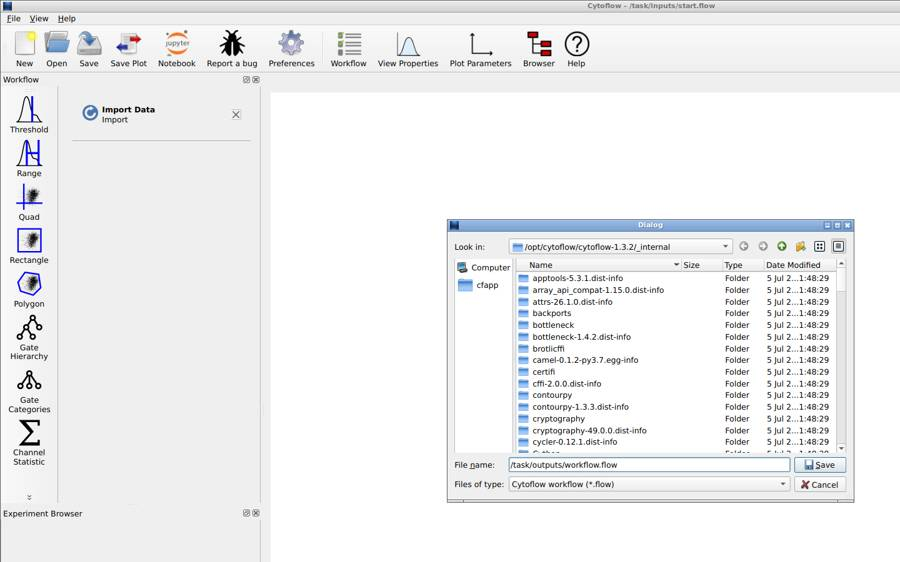
text(await tools.exec_command({cmd:"cu click 1310 743\ncu click 218 183\ncu screenshot /tmp/screen.png","max_output_tokens":1000}));
image((await tools.view_image({path:"/tmp/screen.png"})).image_url);
Script completed Wall time 0.3 seconds Output:
{"chunk_id":"620b98","wall_time_seconds":0.099491258,"exit_code":0,"original_token_count":4,"output":"/tmp/screen.png\n"}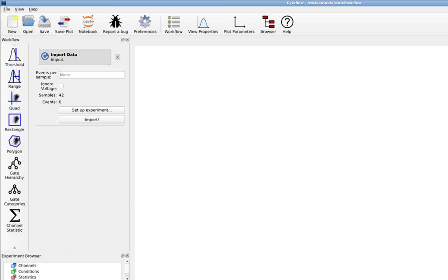
text(await tools.exec_command({cmd:"ls -lh /task/outputs/workflow.flow\ncu click 47 453\ncu screenshot /tmp/screen.png","max_output_tokens":1000}));
image((await tools.view_image({path:"/tmp/screen.png"})).image_url);
Script completed Wall time 0.2 seconds Output:
{"chunk_id":"a7a76e","wall_time_seconds":0.00000492,"exit_code":0,"original_token_count":22,"output":"-rw-rw-r-- 1 cfapp task 9.7K Nov 5 08:17 /task/outputs/workflow.flow\n/tmp/screen.png\n"}
{
"duration_ms": 45000
}Wall time: 45.0029 seconds Sleep completed.
text(await tools.exec_command({cmd:"cu screenshot /tmp/screen.png","max_output_tokens":1000}));
image((await tools.view_image({path:"/tmp/screen.png"})).image_url);
text(await tools.clock__curr_time({}));
Script completed Wall time 0.1 seconds Output:
{"chunk_id":"095b34","wall_time_seconds":0.0000048,"exit_code":0,"original_token_count":4,"output":"/tmp/screen.png\n"}
{"current_time":"2026-11-05 08:18:00 UTC"}text(await tools.exec_command({cmd:"cu click 278 324\ncu type Cells\ncu click 257 354\ncu screenshot /tmp/screen.png","max_output_tokens":1000}));
image((await tools.view_image({path:"/tmp/screen.png"})).image_url);
Script completed Wall time 0.4 seconds Output:
{"chunk_id":"68d0fc","wall_time_seconds":0.243661844,"exit_code":0,"original_token_count":4,"output":"/tmp/screen.png\n"}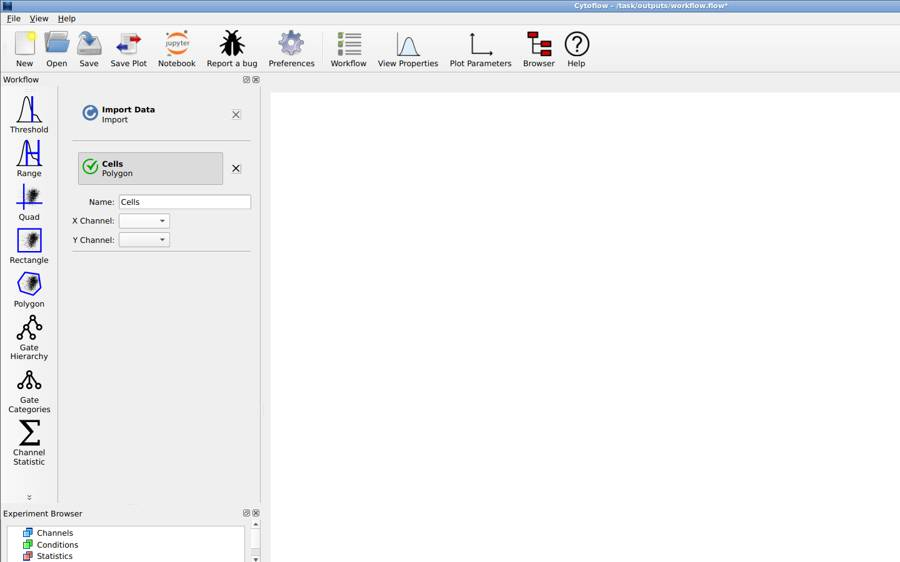
text(await tools.exec_command({cmd:"cu key ctrl+s\ncu click 650 67\ncu screenshot /tmp/screen.png","max_output_tokens":1000}));
image((await tools.view_image({path:"/tmp/screen.png"})).image_url);
Script completed Wall time 0.2 seconds Output:
{"chunk_id":"b79719","wall_time_seconds":0.032650513,"exit_code":0,"original_token_count":4,"output":"/tmp/screen.png\n"}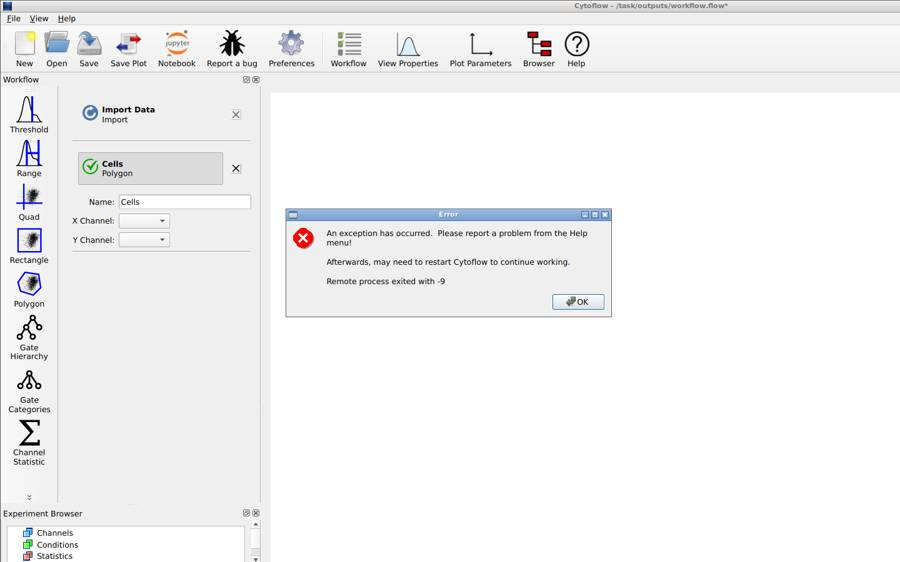
const r=await Promise.allSettled([
tools.exec_command({cmd:"free -h\nps -eo pid,ppid,rss,args --sort=-rss | head -15","max_output_tokens":3000}),
tools.exec_command({cmd:"cat /sys/fs/cgroup/memory.max /sys/fs/cgroup/memory.events\nrg --files /opt/cytoflow | head -30","max_output_tokens":2500})
]);r.forEach(text);
text(await tools.exec_command({cmd:"cu click 925 484\ncu screenshot /tmp/screen.png","max_output_tokens":1000}));
image((await tools.view_image({path:"/tmp/screen.png"})).image_url);
Script completed Wall time 0.2 seconds Output:
{"status":"fulfilled","value":{"chunk_id":"78e5e7","wall_time_seconds":0.00000417,"exit_code":0,"original_token_count":4605,"output":"Warning: truncated output (original token count: 4605)\nTotal output lines: 18\n\n total used free shared buff/cache available\nMem: 7.8Gi 879Mi 6.7Gi 15Mi 471Mi 6.9Gi\nSwap: 0B 0B 0B\n PID PPID RSS COMMAND\n 844 838 402600 /opt/cytoflow/cytoflow-1.3.2/cytoflow\n 7363 7142 125816 /root/.nvm/versions/node/v22.23.4/lib/node_modules/@openai/codex/node_modules/@openai/codex-linux-x64/vendor/x86_64-unknown-linux-musl/bin/codex exec --dangerously-bypass-approvals-and-sandbox --skip-git-repo-check --model gpt-6-astra --json --enable unified_exec -c model_reasoning_effort=xhigh -- # Gate plate 230306 (AAV serotype panel, iPSC-derived neurons) in Cytoflow Goal: gate all 42 wells of this plate down to GFP+ live single cells in Cytoflow, report event counts per population, and flag every well whose data should not be used. ## Experiment - Cells: WT PGP1 iPSC-derived neurons in a 24-well culture format. This plate is biological replicate 2 of an AAV serotype panel. - Treatment: - self-complementary AAV1, 2, 4, 6, 8, 9 or DJ, all carrying the same CMV-GFP construct; - doses 5e3, 1e4 or 5e4 vg/cell, each dose in duplicate wells; - harvested 72 h after transduction. - Staining, on live adherent cells before trypsinisation: - Zombie NIR 1:500, 15 min; - anti-NCAM-BV421 1:200, 30 min; - resuspended in PBS + 2% FBS. - Acquisition: Attune NxT, 06-Mar-2023, one FCS file per well. Notebook voltages: FSC 30, SSC 300, BL1 250, VL1 300, RL3 300. - Plate layout: - `plate_layout.csv` gives the dose and duplicate number of each well, taken from the notebook flow plate map. - The serotype of each well is not recorded in that map and is not needed for this task. - No biological conclusion is requested. ## Inputs | Path | Content | |---|---| | `/task/inputs/raw/` | 42 FCS 3.1 files, `Serotype panel_2_Rep2_Group_<well>.fcs` (wells A1-A12, B1-B12, C1-C12, D1-D6) | | `/task/inputs/plate_layout.csv` | `file, well, dose_vg_per_cell, replicate, is_control, control_type` | | `/task/inputs/start.flow` | Cytoflow workflow with the Import step already configured: one tube per file, conditions taken from `plate_layout.csv` | | `/task/inputs/gating_strategy.md` | Written gating strategy: population order, axes, gate shapes | ## Start 1. In Cytoflow, choose File -> Open, paste `/task/inputs/start.flow`, and answer Yes to run it. The plate is about 34 M events, so the import takes several minutes. 2. Leave the Import step's events-per-sample setting unset, so the full data are used. 3. Add the four gates after the Import step, in the order given in `gating_strategy.md`. ## Channels On-screen channel names come from the labels stored in the FCS files. On this plate they match the dyes actually used. -H and -W versions of each channel are also present. | Detector ($PnN) | Name shown in Cytoflow | Dye | Marks | Used for | |---|---|---|---|---| | FSC-A | FSC-A | none (scatter) | cell size | Cells | | SSC-A, SSC-H | SSC-A, SSC-H | none (scatter) | granularity | Cells, Singlets; y-axis of Live and GFP_pos | | RL3-A | LiveDead-Zombie NIR-A | Zombie NIR (fixable amine-reactive viability dye) | dead cells (bright); live cells are negative | Live | | BL1-A | AAV-GFP-GFP-A | GFP expressed from the AAV CMV-GFP construct | transduced cells | GFP_pos | | VL1-A | BV421-NCAM-A | anti-NCAM (CD56) BV421 | neuronal surface marker | not gated in this task | | Time | Time | none | acquisition time | QC | ## Populations (report exactly these, in this order) | # | population | parent_population | definition | |---|---|---|---| | 1 | Cells | all_events | intact cells on FSC-A vs SSC-A | | 2 | Singlets | Cells | single cells on SSC-H vs SSC-A | | 3 | Live | Singlets | Zombie NIR (RL3-A) negative | | 4 | GFP_pos | Live | GFP (BL1-A) positive | Use these names as the names of the gate operations in Cytoflow. ## Controls - This plate has no control wells. No untransduced, unstained, Zombie-only or NCAM-only wells were acquired. The notebook's non-transduced and cell-count culture wells are absent from the flow plate map and from `raw/`. - All 42 wells are transduced samples. In `plate_layout.csv`, `is_control` is false and `control_type` is `none` for every row. - Set the Live and GFP_pos boundaries from the populations visible in the sample wells, as described in `gating_strategy.md`. Use one boundary per gate for the whole plate. ## Deliverables Write everything to `/task/outputs/`. | Path | Content | |---|---| | `/task/outputs/workflow.flow` | Saved from Cytoflow (File -> Save). Contains the Import step and the gates `Cells`, `Singlets`, `Live`, `GFP_pos`. | | `/task/outputs/counts.csv` | Columns `file, well, population, count, parent_population, pct_of_parent`. | | `/task/outputs/flags.csv` | Columns `file, well, usable, reason_category, evidence`. | | `/task/outputs/notes.md` | One page at most, with the headings `## Gates`, `## Quality control`, `## Deviations`, in that order. | ### counts.csv - One row per file x population: 42 x 4 = 168 rows. `population` is one of `Cells`, `Singlets`, `Live`, `GFP_pos`. - `file` and `well` are exactly as in `plate_layout.csv`. - `count` is an integer: the number of events inside the population's own gate and all of its ancestor gates. - `parent_population` is `all_events` for Cells, `Cells` for Singlets, `Singlets` for Live, and `Live` for GFP_pos. - `pct_of_parent` is 100 x count / parent count, a float from 0 to 100. For Cells, the parent count is the file's total event count. - Get the counts from a Channel Statistic (count, grouped by `well` and the gate membership columns) and export them from a Table view. The terminal may be used to reshape the exported CSV. ### flags.csv - One row per file (42 rows). - `usable` is `yes` or `no`. - `rea
… [6,254 more characters not shown]{"status":"fulfilled","value":{"chunk_id":"331883","wall_time_seconds":0.00000382,"exit_code":0,"original_token_count":604,"output":"cat: /sys/fs/cgroup/memory.max: No such file or directory\ncat: /sys/fs/cgroup/memory.events: No such file or directory\n/opt/cytoflow/cytoflow-1.3.2/_internal/zmq/backend/cython/_zmq.cpython-312-x86_64-linux-gnu.so\n/opt/cytoflow/cytoflow-1.3.2/_internal/zipp-3.23.0.dist-info/direct_url.json\n/opt/cytoflow/cytoflow-1.3.2/_internal/zipp-3.23.0.dist-info/METADATA\n/opt/cytoflow/cytoflow-1.3.2/_internal/zipp-3.23.0.dist-info/REQUESTED\n/opt/cytoflow/cytoflow-1.3.2/_internal/zipp-3.23.0.dist-info/WHEEL\n/opt/cytoflow/cytoflow-1.3.2/_internal/zipp-3.23.0.dist-info/RECORD\n/opt/cytoflow/cytoflow-1.3.2/_internal/zipp-3.23.0.dist-info/INSTALLER\n/opt/cytoflow/cytoflow-1.3.2/_internal/zipp-3.23.0.dist-info/top_level.txt\n/opt/cytoflow/cytoflow-1.3.2/_internal/brotlicffi/_brotlicffi.abi3.so\n/opt/cytoflow/cytoflow-1.3.2/_internal/zipp-3.23.0.dist-info/licenses/LICENSE\n/opt/cytoflow/cytoflow-1.3.2/_internal/cytoflow-1.3.2.dist-info/direct_url.json\n/opt/cytoflow/cytoflow-1.3.2/_internal/cytoflow-1.3.2.dist-info/METADATA\n/opt/cytoflow/cytoflow-1.3.2/_internal/cytoflow-1.3.2.dist-info/entry_points.txt\n/opt/cytoflow/cytoflow-1.3.2/_internal/cytoflow-1.3.2.dist-info/REQUESTED\n/opt/cytoflow/cytoflow-1.3.2/_internal/cytoflow-1.3.2.dist-info/WHEEL\n/opt/cytoflow/cytoflow-1.3.2/_internal/cytoflow-1.3.2.dist-info/RECORD\n/opt/cytoflow/cytoflow-1.3.2/_internal/cytoflow-1.3.2.dist-info/scm_version.json\n/opt/cytoflow/cytoflow-1.3.2/_internal/cytoflow-1.3.2.dist-info/INSTALLER\n/opt/cytoflow/cytoflow-1.3.2/_internal/cytoflow-1.3.2.dist-info/scm_file_list.json\n/opt/cytoflow/cytoflow-1.3.2/_internal/cytoflow-1.3.2.dist-info/top_level.txt\n/opt/cytoflow/cytoflow-1.3.2/_internal/kiwisolver/_cext.cpython-312-x86_64-linux-gnu.so\n/opt/cytoflow/cytoflow-1.3.2/_internal/bottleneck-1.4.2.dist-info/direct_url.json\n/opt/cytoflow/cytoflow-1.3.2/_internal/bottleneck-1.4.2.dist-info/METADATA\n/opt/cytoflow/cytoflow-1.3.2/_internal/bottleneck-1.4.2.dist-info/REQUESTED\n/opt/cytoflow/cytoflow-1.3.2/_internal/bottleneck-1.4.2.dist-info/WHEEL\n/opt/cytoflow/cytoflow-1.3.2/_internal/bottleneck-1.4.2.dist-info/RECORD\n/opt/cytoflow/cytoflow-1.3.2/_internal/bottleneck-1.4.2.dist-info/INSTALLER\n/opt/cytoflow/cytoflow-1.3.2/_internal/bottleneck-1.4.2.dist-info/top_level.txt\n/opt/cytoflow/cytoflow-1.3.2/_internal/cytoflow-1.3.2.dist-info/licenses/LICENSE.txt\n/opt/cytoflow/cytoflow-1.3.2/_internal/bottleneck-1.4.2.dist-info/licenses/LICENSE\n"}}{"chunk_id":"d2be58","wall_time_seconds":0.00000428,"exit_code":0,"original_token_count":4,"output":"/tmp/screen.png\n"}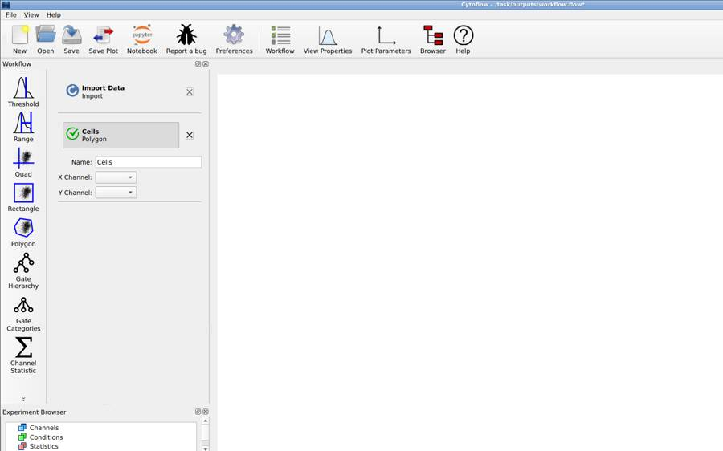
const r=await Promise.allSettled([
tools.exec_command({cmd:"id\ndf -h /tmp\ncat /proc/self/cgroup\nls /sys/fs/cgroup\nps -C cytoflow -o pid,ppid,rss,args","max_output_tokens":2000}),
tools.exec_command({cmd:"ls -lh /task/inputs/raw/ | head -6\ncommand -v swapon\ncat /proc/sys/vm/swappiness\nls /tmp | head -15","max_output_tokens":1000})
]);r.forEach(text);
text(await tools.exec_command({cmd:"cu key ctrl+s\ncu screenshot /tmp/screen.png","max_output_tokens":1000}));
image((await tools.view_image({path:"/tmp/screen.png"})).image_url);
Script completed Wall time 0.2 seconds Output:
{"status":"fulfilled","value":{"chunk_id":"4d4b8c","wall_time_seconds":0.00000445,"exit_code":0,"original_token_count":181,"output":"uid=0(root) gid=0(root) groups=0(root)\nFilesystem Size Used Avail Use% Mounted on\n/dev/root 504G 5.3G 499G 2% /\n0::/\ncgroup.controllers\ncgroup.max.depth\ncgroup.max.descendants\ncgroup.pressure\ncgroup.procs\ncgroup.stat\ncgroup.subtree_control\ncgroup.threads\ncpu.pressure\ncpu.stat\ncpu.stat.local\ncpuset.cpus.effective\ncpuset.cpus.isolated\ncpuset.mems.effective\nio.pressure\nio.stat\nmemory.numa_stat\nmemory.pressure\nmemory.reclaim\nmemory.stat\nmemory.zswap.writeback\nmisc.capacity\nmisc.current\nmisc.peak\n PID PPID RSS COMMAND\n 844 838 403040 /opt/cytoflow/cytoflow-1.3.2/cytoflow\n 859 844 22088 /opt/cytoflow/cytoflow-1.3.2/cytoflow -B -S -I -c from multiprocessing.resource_tracker import main;main(9)\n"}}{"status":"fulfilled","value":{"chunk_id":"c4dd84","wall_time_seconds":0.00000398,"exit_code":0,"original_token_count":131,"output":"total 2.1G\n-r--r--r-- 1 root root 60M Nov 5 08:12 Serotype panel_2_Rep2_Group_A1.fcs\n-r--r--r-- 1 root root 54M Nov 5 08:12 Serotype panel_2_Rep2_Group_A10.fcs\n-r--r--r-- 1 root root 52M Nov 5 08:12 Serotype panel_2_Rep2_Group_A11.fcs\n-r--r--r-- 1 root root 58M Nov 5 08:12 Serotype panel_2_Rep2_Group_A12.fcs\n-r--r--r-- 1 root root 58M Nov 5 08:12 Serotype panel_2_Rep2_Group_A2.fcs\n/usr/sbin/swapon\n60\ncodex-secrets\ncytoflow.log\nnode-compile-cache\nruntime-cfapp\nscreen.png\ntmp9snizx_c\ntmpwbz98c20\ntmpyvg3lhw0\n"}}{"chunk_id":"7eddc0","wall_time_seconds":0.00000423,"exit_code":0,"original_token_count":4,"output":"/tmp/screen.png\n"}text(await tools.exec_command({cmd:"fallocate -l 16G /tmp/cytoflow.swap\nchmod 600 /tmp/cytoflow.swap\nmkswap /tmp/cytoflow.swap\nswapon /tmp/cytoflow.swap\nfree -h\ntail -15 /tmp/cytoflow.log","max_output_tokens":2000}));
Script completed
Wall time 0.1 seconds
Output:
{"chunk_id":"68775d","wall_time_seconds":0.00000404,"exit_code":0,"original_token_count":120,"output":"Setting up swapspace version 1, size = 16 GiB (17179865088 bytes)\nno label, UUID=e8bebb5f-2e85-4dee-b96b-ac91d00d6c6e\n total used free shared buff/cache available\nMem: 7.8Gi 877Mi 6.7Gi 15Mi 487Mi 6.9Gi\nSwap: 15Gi 0B 15Gi\nQXcbIntegration: Cannot create platform OpenGL context, neither GLX nor EGL are enabled\n2026-11-05 08:18:14,313 ERROR:root:Remote process exited with -9\n"}text(await tools.exec_command({cmd:"ps -p 838 -o pid,ppid,args\nprintenv DISPLAY\ncu key alt+F4\ncu screenshot /tmp/screen.png","max_output_tokens":1000}));
image((await tools.view_image({path:"/tmp/screen.png"})).image_url);
Script completed Wall time 0.1 seconds Output:
{"chunk_id":"78706f","wall_time_seconds":0.00000454,"exit_code":0,"original_token_count":23,"output":" PID PPID COMMAND\n 838 836 /bin/bash /usr/local/bin/start-cytoflow\n:1\n/tmp/screen.png\n"}text(await tools.exec_command({cmd:"cat /usr/local/bin/start-cytoflow\ncu click 20 30\ncu click 51 196\ncu screenshot /tmp/screen.png","max_output_tokens":2000}));
image((await tools.view_image({path:"/tmp/screen.png"})).image_url);
Script completed Wall time 0.3 seconds Output:
{"chunk_id":"844176","wall_time_seconds":0.101282459,"exit_code":0,"original_token_count":82,"output":"#!/bin/bash\n# Launch Cytoflow full-screen-ish; restart it if the agent closes it.\nBIN=$(find /opt/cytoflow -maxdepth 3 -type f -name 'cytoflow' -perm -u+x | head -1)\n[ -z \"$BIN\" ] && { echo \"cytoflow binary not found under /opt/cytoflow\"; exit 1; }\nwhile true; do\n \"$BIN\" >/tmp/cytoflow.log 2>&1\n sleep 1\ndone\n/tmp/screen.png\n"}
text(await tools.exec_command({cmd:"cu screenshot /tmp/screen.png","max_output_tokens":1000}));
image((await tools.view_image({path:"/tmp/screen.png"})).image_url);
Script completed Wall time 0.1 seconds Output:
{"chunk_id":"724576","wall_time_seconds":0.00000408,"exit_code":0,"original_token_count":4,"output":"/tmp/screen.png\n"}
{
"duration_ms": 10000
}Wall time: 10.0036 seconds Sleep completed.
text(await tools.exec_command({cmd:"cu screenshot /tmp/screen.png","max_output_tokens":1000}));
image((await tools.view_image({path:"/tmp/screen.png"})).image_url);
Script completed Wall time 0.1 seconds Output:
{"chunk_id":"b83726","wall_time_seconds":0.00000448,"exit_code":0,"original_token_count":4,"output":"/tmp/screen.png\n"}
text(await tools.exec_command({cmd:"cu click 94 75\ncu paste /task/outputs/workflow.flow\ncu click 1312 746\ncu screenshot /tmp/screen.png","max_output_tokens":1000}));
image((await tools.view_image({path:"/tmp/screen.png"})).image_url);
Script completed Wall time 1.6 seconds Output:
{"chunk_id":"bd99ec","wall_time_seconds":1.437367683,"exit_code":0,"original_token_count":4,"output":"/tmp/screen.png\n"}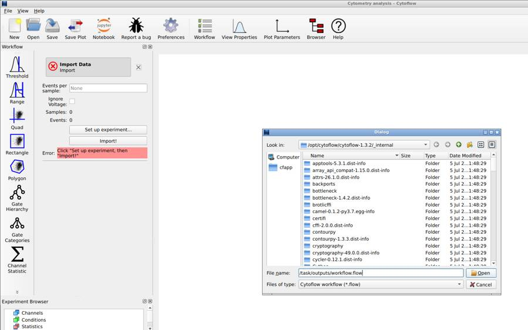
text(await tools.exec_command({cmd:"cu click 1313 744\ncu screenshot /tmp/screen.png","max_output_tokens":1000}));
image((await tools.view_image({path:"/tmp/screen.png"})).image_url);
Script completed Wall time 0.2 seconds Output:
{"chunk_id":"0408f7","wall_time_seconds":0.00000423,"exit_code":0,"original_token_count":4,"output":"/tmp/screen.png\n"}
text(await tools.exec_command({cmd:"cu click 748 449\ncu screenshot /tmp/screen.png","max_output_tokens":1000}));
image((await tools.view_image({path:"/tmp/screen.png"})).image_url);
Script completed Wall time 0.2 seconds Output:
{"chunk_id":"7a3b84","wall_time_seconds":0.00000491,"exit_code":0,"original_token_count":4,"output":"/tmp/screen.png\n"}
text(await tools.exec_command({cmd:"rg --files /opt/cytoflow | rg '(table|binning|polygon|channel_stat|flowclean).*\\.(html|rst|py)$' | head -40","max_output_tokens":2000}));
Script completed
Wall time 0.1 seconds
Output:
{"chunk_id":"385d87","wall_time_seconds":0.00000615,"exit_code":0,"original_token_count":241,"output":"/opt/cytoflow/cytoflow-1.3.2/_internal/cytoflowgui/help/operations/polygon-1.py\n/opt/cytoflow/cytoflow-1.3.2/_internal/cytoflowgui/help/operations/channel_stat.html\n/opt/cytoflow/cytoflow-1.3.2/_internal/cytoflowgui/help/operations/polygon.html\n/opt/cytoflow/cytoflow-1.3.2/_internal/cytoflowgui/help/operations/flowclean.html\n/opt/cytoflow/cytoflow-1.3.2/_internal/cytoflowgui/help/operations/binning.html\n/opt/cytoflow/cytoflow-1.3.2/_internal/cytoflowgui/help/operations/flowclean-1.py\n/opt/cytoflow/cytoflow-1.3.2/_internal/cytoflowgui/help/operations/multi_channel_stat.html\n/opt/cytoflow/cytoflow-1.3.2/_internal/cytoflowgui/help/operations/binning-1.py\n/opt/cytoflow/cytoflow-1.3.2/_internal/cytoflowgui/help/views/long_table-1.py\n/opt/cytoflow/cytoflow-1.3.2/_internal/cytoflowgui/help/views/table.html\n/opt/cytoflow/cytoflow-1.3.2/_internal/cytoflowgui/help/views/table-1.py\n/opt/cytoflow/cytoflow-1.3.2/_internal/cytoflowgui/help/views/long_table.html\n"}text(await tools.exec_command({cmd:"python - <<'PY'\nfrom html.parser import HTMLParser\nfrom pathlib import Path\nclass P(HTMLParser):\n def handle_data(self,s):\n if s.strip(): print(s.strip())\nfor f in ['views/table.html','views/long_table.html','operations/binning.html','operations/channel_stat.html']:\n print('\\nFILE',f)\n p=P(); p.feed(Path('/opt/cytoflow/cytoflow-1.3.2/_internal/cytoflowgui/help/'+f).read_text())\nPY","max_output_tokens":6500}));
Script completed
Wall time 0.0 seconds
Output:
{"chunk_id":"12b663","wall_time_seconds":0.00000399,"exit_code":127,"original_token_count":12,"output":"/bin/bash: line 1: python: command not found\n"}text(await tools.exec_command({cmd:"python3 - <<'PY'\nfrom html.parser import HTMLParser\nfrom pathlib import Path\nclass P(HTMLParser):\n def handle_data(self,s):\n if s.strip(): print(s.strip())\nfor f in ['views/table.html','views/long_table.html','operations/binning.html','operations/channel_stat.html']:\n print('\\nFILE',f)\n p=P(); p.feed(Path('/opt/cytoflow/cytoflow-1.3.2/_internal/cytoflowgui/help/'+f).read_text())\nPY","max_output_tokens":6500}));
Script completed
Wall time 0.1 seconds
Output:
{"chunk_id":"2432fc","wall_time_seconds":0.00000501,"exit_code":0,"original_token_count":444,"output":"\nFILE views/table.html\nTable\nTable\nMake a table out of a statistic. The table can then be exported.\nStatistic\nWhich statistic to view.\nFeature\nThe column in the statistic to view (often a channel name.)\nRows\nWhich variable to use for the rows\nSubrows\nWhich variable to use for subrows.\nColumns\nWhich variable to use for the columns.\nSubcolumns\nWhich variable to use for the subcolumns.\nExport\nExport the table to a CSV file.\n\nFILE views/long_table.html\nLong Table\nLong Table\nMake a long (“tidy”) table out of a statistic. The table can then be exported.\nStatistic\nWhich statistic to view.\nExport\nExport the table to a CSV file.\n\nFILE operations/binning.html\nBinning\nBinning\nBin data along an axis.\nThis operation creates equally spaced bins (in linear or log space)\nalong an axis and adds a condition assigning each event to a bin. The\nvalue of the event’s condition is the left end of the bin’s interval in\nwhich the event is located.\nName\nThe name of the new condition created by this operation.\nChannel\nThe channel to apply the binning to.\nScale\nThe scale to apply to the channel before binning.\nBin\nWidth\nHow wide should each bin be? Can only set if\nScale\nis\nlinear\nor\nlog\n(in which case,\nBin Width\nis in log10-units.)\n\nFILE operations/channel_stat.html\nChannel statistic\nChannel statistic\nApply a function to subsets of a data set, and add it as a statistic\nto the experiment.\nFirst, the module groups the data by the unique values of the variables\nin\nBy\n, then applies\nFunction\nto the\nChannel\nin each group.\nName\nThe operation name. Becomes the new statistic’s name.\nChannel\nThe channel to apply the function to.\nFunction\nThe function to compute on each group.\nSubset\nOnly apply the function to a subset of the data. Useful if the function\nis very slow.\n"}text(await tools.exec_command({cmd:"free -h\ncu screenshot /tmp/screen.png","max_output_tokens":1000}));
image((await tools.view_image({path:"/tmp/screen.png"})).image_url);
Script completed Wall time 0.6 seconds Output:
{"chunk_id":"aacf3e","wall_time_seconds":0.02604799,"exit_code":0,"original_token_count":56,"output":" total used free shared buff/cache available\nMem: 7.8Gi 7.6Gi 130Mi 14Mi 273Mi 137Mi\nSwap: 15Gi 361Mi 15Gi\n/tmp/screen.png\n"}{
"duration_ms": 45000
}Wall time: 45.0196 seconds Sleep completed.
text(await tools.exec_command({cmd:"free -h\ncu screenshot /tmp/screen.png","max_output_tokens":1000}));
image((await tools.view_image({path:"/tmp/screen.png"})).image_url);
Script completed Wall time 0.1 seconds Output:
{"chunk_id":"809878","wall_time_seconds":0.00000543,"exit_code":0,"original_token_count":56,"output":" total used free shared buff/cache available\nMem: 7.8Gi 3.6Gi 4.0Gi 1.5Mi 446Mi 4.2Gi\nSwap: 15Gi 2.6Gi 13Gi\n/tmp/screen.png\n"}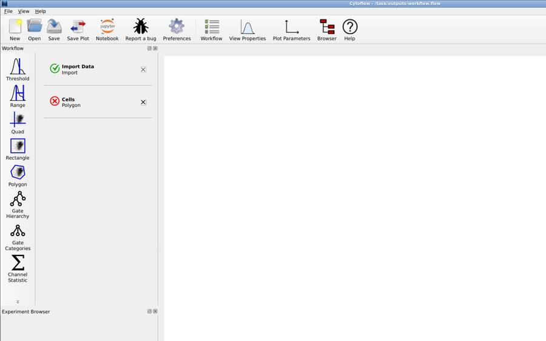
text(await tools.exec_command({cmd:"cu click 230 269\ncu click 260 354\ncu screenshot /tmp/screen.png","max_output_tokens":1000}));
image((await tools.view_image({path:"/tmp/screen.png"})).image_url);
Script completed Wall time 0.3 seconds Output:
{"chunk_id":"aed874","wall_time_seconds":0.105630431,"exit_code":0,"original_token_count":4,"output":"/tmp/screen.png\n"}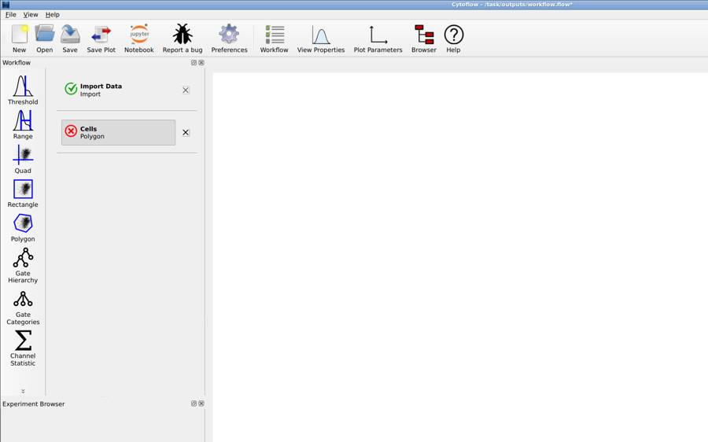
text(await tools.exec_command({cmd:"sleep 2\ncu screenshot /tmp/screen.png","max_output_tokens":1000}));
image((await tools.view_image({path:"/tmp/screen.png"})).image_url);
Script completed Wall time 2.1 seconds Output:
{"chunk_id":"b04b9c","wall_time_seconds":1.8924871680000002,"exit_code":0,"original_token_count":4,"output":"/tmp/screen.png\n"}
text(await tools.exec_command({cmd:"cu click 225 498\ncu click 260 385\nsleep 1\ncu screenshot /tmp/screen.png","max_output_tokens":1000}));
image((await tools.view_image({path:"/tmp/screen.png"})).image_url);
Script completed Wall time 1.3 seconds Output:
{"chunk_id":"6c605e","wall_time_seconds":1.102209504,"exit_code":0,"original_token_count":4,"output":"/tmp/screen.png\n"}
text(await tools.exec_command({cmd:"cu click 226 673\ncu click 653 70\nsleep 2\ncu screenshot /tmp/screen.png","max_output_tokens":1000}));
image((await tools.view_image({path:"/tmp/screen.png"})).image_url);
Script completed Wall time 2.3 seconds Output:
{"chunk_id":"2503b8","wall_time_seconds":2.105817719,"exit_code":0,"original_token_count":4,"output":"/tmp/screen.png\n"}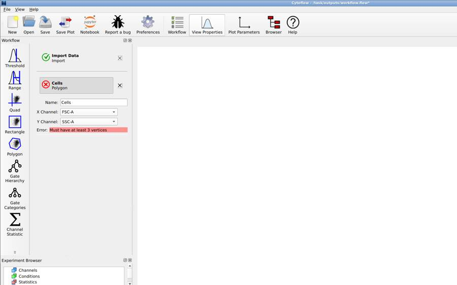
text(await tools.exec_command({cmd:"cu click 654 75\nsleep 5\ncu screenshot /tmp/screen.png","max_output_tokens":1000}));
image((await tools.view_image({path:"/tmp/screen.png"})).image_url);
Script completed Wall time 5.3 seconds Output:
{"chunk_id":"1218e4","wall_time_seconds":5.017618829,"exit_code":0,"original_token_count":4,"output":"/tmp/screen.png\n"}text(await tools.exec_command({cmd:"cu click 63 30\nsleep 1\ncu screenshot /tmp/screen.png","max_output_tokens":1000}));
image((await tools.view_image({path:"/tmp/screen.png"})).image_url);
Script completed Wall time 1.4 seconds Output:
{"chunk_id":"74f447","wall_time_seconds":1.034617877,"exit_code":0,"original_token_count":4,"output":"/tmp/screen.png\n"}
text(await tools.exec_command({cmd:"cu key Escape\ncu key alt+F10\nsleep 2\ncu screenshot /tmp/screen.png\ncommand -v wmctrl","max_output_tokens":1000}));
image((await tools.view_image({path:"/tmp/screen.png"})).image_url);
Script completed Wall time 2.3 seconds Output:
{"chunk_id":"1c1b51","wall_time_seconds":1.97697886,"exit_code":1,"original_token_count":4,"output":"/tmp/screen.png\n"}
text(await tools.exec_command({cmd:"cu click 700 10 double\nsleep 1\ncu screenshot /tmp/screen.png\ncommand -v xwininfo\nxwininfo -root -tree | head -20","max_output_tokens":2000}));
image((await tools.view_image({path:"/tmp/screen.png"})).image_url);
Script completed Wall time 1.3 seconds Output:
{"chunk_id":"e64442","wall_time_seconds":1.113291448,"exit_code":0,"original_token_count":236,"output":"/tmp/screen.png\n/usr/bin/xwininfo\n\nxwininfo: Window id: 0x21f (the root window) (has no name)\n\n Root window id: 0x21f (the root window) (has no name)\n Parent window id: 0x0 (none)\n 18 children:\n 0xe00029 \"cytoflow\": (\"cytoflow\" \"cytoflow\") 213x170+44+41 +44+41\n 0xe00024 \"cytoflow\": (\"cytoflow\" \"cytoflow\") 183x385+191+372 +191+372\n 0xe0001f \"cytoflow\": (\"cytoflow\" \"cytoflow\") 183x385+191+341 +191+341\n 0xe00013 \"Qt Clipboard Requestor Window\": () 3x3+0+0 +0+0\n 0xe00008 \"cytoflow\": () 1x1+0+0 +0+0\n 0xe00004 \"Qt Selection Owner for cytoflow\": () 3x3+0+0 +0+0\n 0x40000e \"Openbox\": (\"\" (none)) 1x1+-100+-100 +-100+-100\n 0x400062 (has no name): () 1x1+0+0 +0+0\n 1 child:\n 0x400063 (has no name): () 1x1+0+0 +1+1\n 0x400060 (has no name): () 1x1+0+0 +0+0\n 1 child:\n 0x400061 (has no name): () 1x1+0+0 +1+1\n 0x40005d (has no name): () 1x1+0+0 +0+0\n"}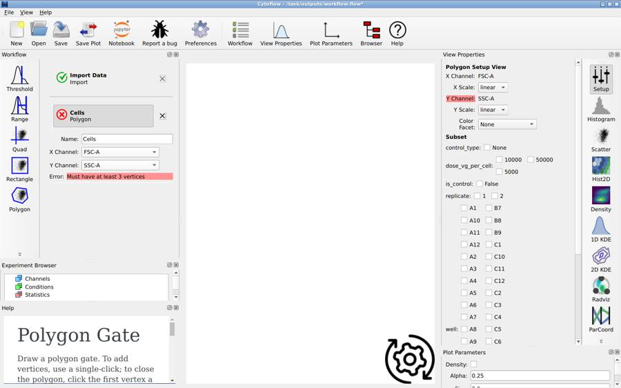
text(await tools.exec_command({cmd:"cu click 1076 482\ncu click 408 713\nsleep 3\ncu screenshot /tmp/screen.png","max_output_tokens":1000}));
image((await tools.view_image({path:"/tmp/screen.png"})).image_url);
Script completed Wall time 3.7 seconds Output:
{"chunk_id":"fdc201","wall_time_seconds":3.210193824,"exit_code":0,"original_token_count":4,"output":"/tmp/screen.png\n"}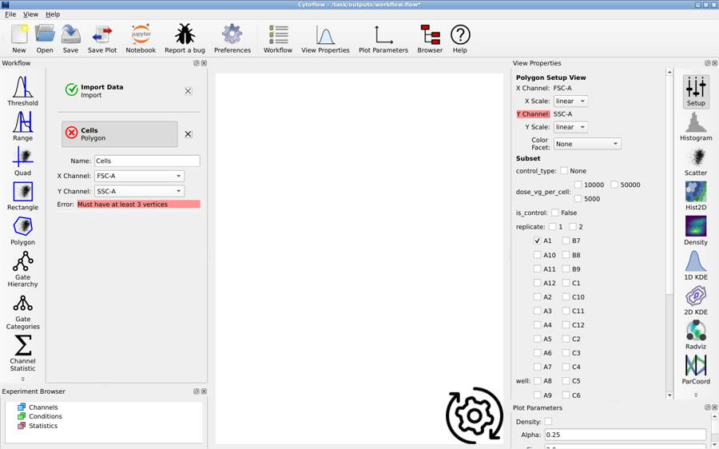
text(await tools.exec_command({cmd:"sleep 10\ncu screenshot /tmp/screen.png","max_output_tokens":1000}));
image((await tools.view_image({path:"/tmp/screen.png"})).image_url);
Script completed Wall time 10.3 seconds Output:
{"chunk_id":"78e823","wall_time_seconds":10.013522699,"session_id":27729,"original_token_count":0,"output":""}text(await tools.write_stdin({session_id:27729,chars:"","yield_time_ms":1000,"max_output_tokens":1000}));
text(await tools.exec_command({cmd:"ps -C cytoflow -o pid,rss,%cpu\nfree -h\ncu screenshot /tmp/screen.png","max_output_tokens":1000}));
image((await tools.view_image({path:"/tmp/screen.png"})).image_url);
Script completed Wall time 0.1 seconds Output:
{"chunk_id":"d9d056","wall_time_seconds":0.00004028,"exit_code":0,"original_token_count":4,"output":"/tmp/screen.png\n"}{"chunk_id":"892067","wall_time_seconds":0.00000399,"exit_code":0,"original_token_count":73,"output":" PID RSS %CPU\n 859 0 0.0\n 7642 40060 4.4\n 7663 8 0.0\n total used free shared buff/cache available\nMem: 7.8Gi 384Mi 7.2Gi 1.1Mi 458Mi 7.4Gi\nSwap: 15Gi 489Mi 15Gi\n/tmp/screen.png\n"}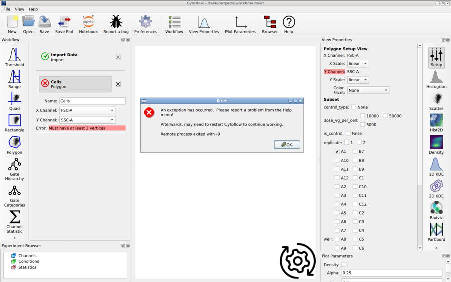
text(await tools.exec_command({cmd:"fallocate -l 64G /tmp/cytoflow-extra.swap\nchmod 600 /tmp/cytoflow-extra.swap\nmkswap /tmp/cytoflow-extra.swap\nswapon /tmp/cytoflow-extra.swap\ncu click 913 462\ncu key ctrl+s\nsleep 1\ncu screenshot /tmp/screen.png","max_output_tokens":1000}));
image((await tools.view_image({path:"/tmp/screen.png"})).image_url);
Script completed Wall time 1.3 seconds Output:
{"chunk_id":"988651","wall_time_seconds":1.135620966,"exit_code":0,"original_token_count":34,"output":"Setting up swapspace version 1, size = 64 GiB (68719472640 bytes)\nno label, UUID=692f8b0d-a2d9-4106-9ac6-3de654713e8f\n/tmp/screen.png\n"}text(await tools.exec_command({cmd:"dmesg | tail -22\ncu click 20 30\ncu click 51 196\nsleep 8\ncu screenshot /tmp/screen.png","yield_time_ms":10000,"max_output_tokens":2000}));
image((await tools.view_image({path:"/tmp/screen.png"})).image_url);
Script completed Wall time 8.3 seconds Output:
{"chunk_id":"c3690c","wall_time_seconds":8.107484467,"exit_code":0,"original_token_count":707,"output":"[ 354.677263] [ 830] 0 830 14739 108 106 2 0 139264 5247 0 websockify\n[ 354.677291] [ 831] 0 831 1187 2 0 2 0 53248 79 0 runuser\n[ 354.677318] [ 835] 0 835 1191 1 0 1 0 45056 72 0 entrypoint.sh\n[ 354.677349] [ 836] 0 836 1187 2 0 2 0 57344 80 0 runuser\n[ 354.677376] [ 837] 1001 837 35755 3 1 2 0 126976 1586 0 openbox\n[ 354.677402] [ 838] 1002 838 1191 2 0 2 0 49152 70 0 start-cytoflow\n[ 354.677434] [ 7142] 0 7142 2249 2 0 2 0 61440 1139 0 bash\n[ 354.677460] [ 7363] 0 7363 176019 3180 3177 3 0 1003520 12680 0 codex\n[ 354.677493] [ 7364] 0 7364 786 8 7 1 0 53248 20 0 tee\n[ 354.677519] [ 7452] 0 7452 362698807 516 514 2 0 233472 667 0 codex-code-mode\n[ 354.677551] [ 7642] 1002 7642 905258 721 718 3 0 1826816 88042 0 cytoflow\n[ 354.677575] [ 7663] 1002 7663 21086 2 0 2 0 155648 5520 0 cytoflow\n[ 354.677602] [ 7665] 1002 7665 6352820 1939025 1939023 2 0 49086464 4062240 0 cytoflow\n[ 354.677628] [ 7694] 1002 7694 52306 2 0 2 0 299008 1871 0 QtWebEngineProc\n[ 354.677660] [ 7715] 1002 7715 52306 2 0 2 0 299008 1873 0 QtWebEngineProc\n[ 354.677689] [ 7717] 1002 7717 52306 2 0 2 0 176128 1874 0 QtWebEngineProc\n[ 354.677717] [ 7732] 1002 7732 1309816 249 247 2 0 651264 3043 300 QtWebEngineProc\n[ 354.677746] [ 7911] 0 7911 1191 71 69 2 0 45056 0 0 bash\n[ 354.677773] [ 7912] 0 7912 784 28 27 1 0 49152 0 0 sleep\n[ 354.677799] oom-kill:constraint=CONSTRAINT_NONE,nodemask=(null),cpuset=/,mems_allowed=0,global_oom,task_memcg=/,task=cytoflow,pid=7665,uid=1002\n[ 354.677856] Out of memory: Killed process 7665 (cytoflow) total-vm:25411280kB, anon-rss:7756092kB, file-rss:8kB, shmem-rss:0kB, UID:1002 pgtables:47936kB oom_score_adj:0\n[ 367.572334] Adding 67108860k swap on /tmp/cytoflow-extra.swap. Priority:-1 extents:548 across:71622652k \n/tmp/screen.png\n"}text(await tools.exec_command({cmd:"cu click 700 10 double\ncu click 90 74\nsleep 1\ncu paste /task/outputs/workflow.flow\nsleep 1\ncu click 1310 744\nsleep 1\ncu screenshot /tmp/screen.png","max_output_tokens":1000}));
image((await tools.view_image({path:"/tmp/screen.png"})).image_url);
Script completed Wall time 4.8 seconds Output:
{"chunk_id":"7308bd","wall_time_seconds":4.647373987,"exit_code":0,"original_token_count":4,"output":"/tmp/screen.png\n"}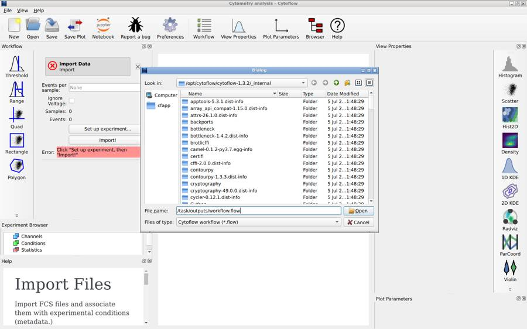
text(await tools.exec_command({cmd:"cu click 980 576\nsleep 1\ncu screenshot /tmp/screen.png","max_output_tokens":1000}));
image((await tools.view_image({path:"/tmp/screen.png"})).image_url);
Script completed Wall time 1.2 seconds Output:
{"chunk_id":"93fb23","wall_time_seconds":1.000076645,"exit_code":0,"original_token_count":4,"output":"/tmp/screen.png\n"}
text(await tools.exec_command({cmd:"cu click 738 427\ncu click 408 712\nsleep 2\ncu screenshot /tmp/screen.png","max_output_tokens":1000}));
image((await tools.view_image({path:"/tmp/screen.png"})).image_url);
Script completed Wall time 2.3 seconds Output:
{"chunk_id":"0b9183","wall_time_seconds":2.1084376,"exit_code":0,"original_token_count":4,"output":"/tmp/screen.png\n"}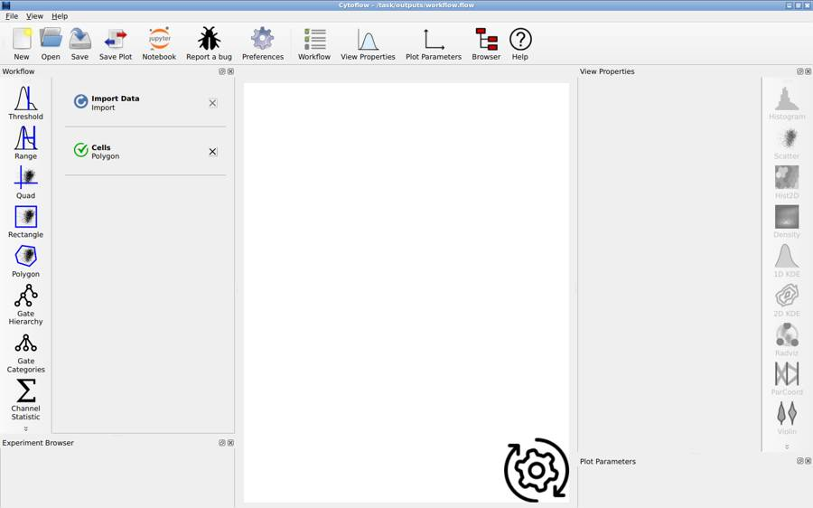
{
"duration_ms": 45000
}Wall time: 45.0383 seconds Sleep completed.
text(await tools.exec_command({cmd:"cu screenshot /tmp/screen.png\nfree -h","max_output_tokens":1000}));
image((await tools.view_image({path:"/tmp/screen.png"})).image_url);
Script completed Wall time 0.1 seconds Output:
{"chunk_id":"d3dd10","wall_time_seconds":0.00000726,"exit_code":0,"original_token_count":56,"output":"/tmp/screen.png\n total used free shared buff/cache available\nMem: 7.8Gi 3.9Gi 3.6Gi 1.2Mi 449Mi 3.8Gi\nSwap: 79Gi 2.3Gi 77Gi\n"}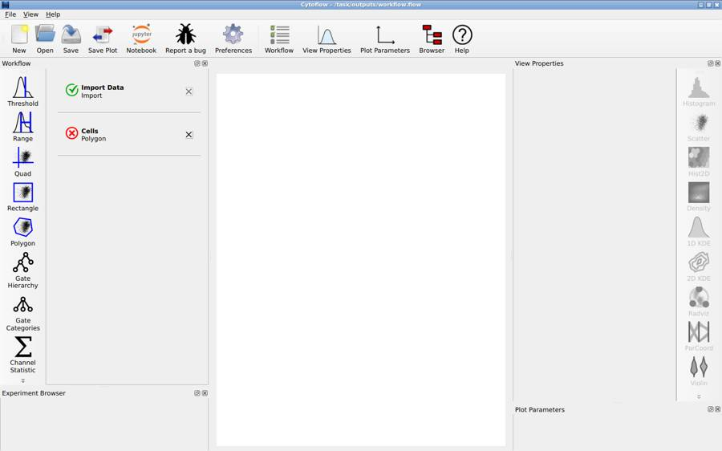
text(await tools.exec_command({cmd:"cu click 238 270\nsleep 3\ncu screenshot /tmp/screen.png","max_output_tokens":1000}));
image((await tools.view_image({path:"/tmp/screen.png"})).image_url);
Script completed Wall time 3.2 seconds Output:
{"chunk_id":"2e4039","wall_time_seconds":3.007115136,"exit_code":0,"original_token_count":4,"output":"/tmp/screen.png\n"}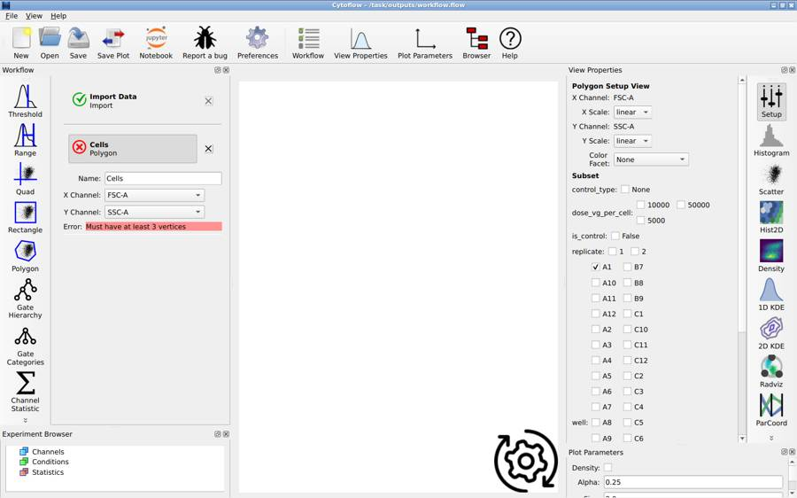
text(await tools.exec_command({cmd:"sleep 5\ncu screenshot /tmp/screen.png","max_output_tokens":1000}));
image((await tools.view_image({path:"/tmp/screen.png"})).image_url);
Script completed Wall time 5.1 seconds Output:
{"chunk_id":"9b4bb9","wall_time_seconds":4.9094776079999995,"exit_code":0,"original_token_count":4,"output":"/tmp/screen.png\n"}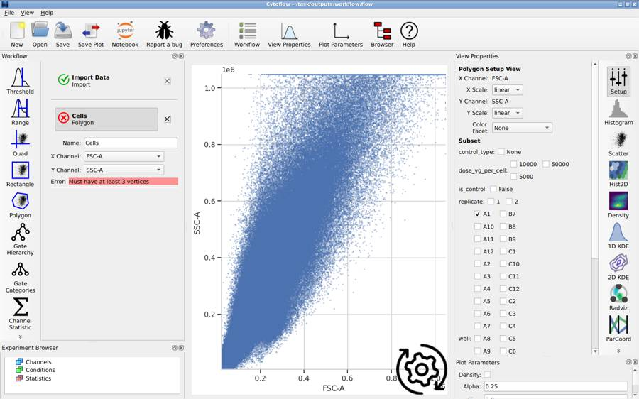
text(await tools.exec_command({cmd:"cu click 1097 845\nsleep 4\ncu screenshot /tmp/screen.png","max_output_tokens":1000}));
image((await tools.view_image({path:"/tmp/screen.png"})).image_url);
Script completed Wall time 4.2 seconds Output:
{"chunk_id":"102867","wall_time_seconds":4.015808343,"exit_code":0,"original_token_count":4,"output":"/tmp/screen.png\n"}text(await tools.exec_command({cmd:"sleep 5\ncu screenshot /tmp/screen.png","max_output_tokens":1000}));
image((await tools.view_image({path:"/tmp/screen.png"})).image_url);
Script completed Wall time 5.1 seconds Output:
{"chunk_id":"ac8482","wall_time_seconds":4.897761453,"exit_code":0,"original_token_count":4,"output":"/tmp/screen.png\n"}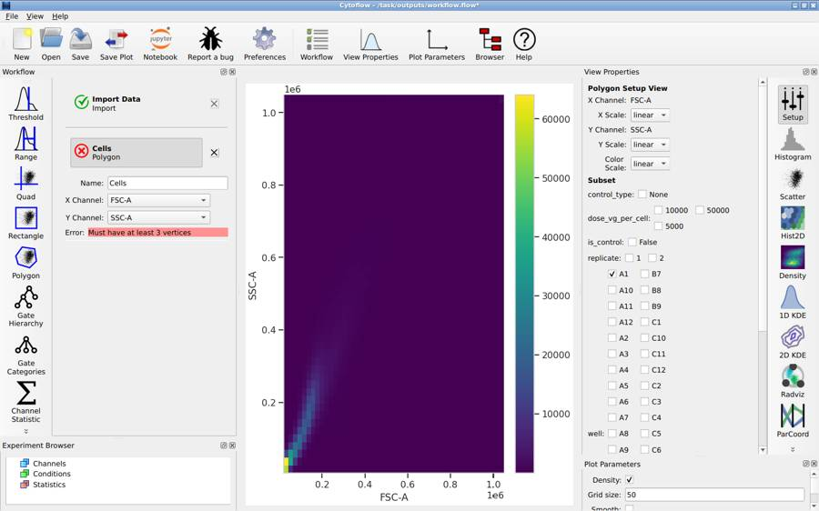
text(await tools.exec_command({cmd:"cu click 1167 203\nsleep 1\ncu screenshot /tmp/screen.png","max_output_tokens":1000}));
image((await tools.view_image({path:"/tmp/screen.png"})).image_url);
Script completed Wall time 1.2 seconds Output:
{"chunk_id":"a2f39d","wall_time_seconds":1.003701566,"exit_code":0,"original_token_count":4,"output":"/tmp/screen.png\n"}text(await tools.exec_command({cmd:"cu click 1141 253\ncu click 1166 254\ncu key End\ncu key Return\nsleep 7\ncu screenshot /tmp/screen.png","max_output_tokens":1000}));
image((await tools.view_image({path:"/tmp/screen.png"})).image_url);
Script completed Wall time 7.3 seconds Output:
{"chunk_id":"271865","wall_time_seconds":7.143357346,"exit_code":0,"original_token_count":4,"output":"/tmp/screen.png\n"}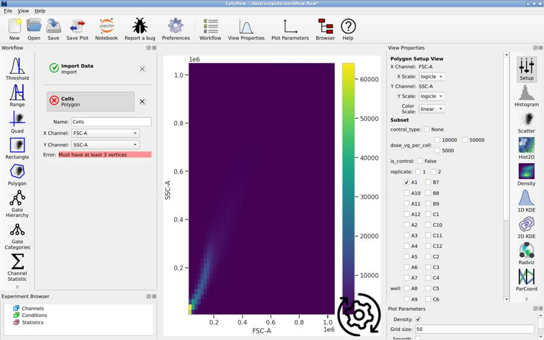
text(await tools.exec_command({cmd:"cu click 1165 288\ncu key Home\ncu key Down\ncu key Return\nsleep 5\ncu screenshot /tmp/screen.png","max_output_tokens":1000}));
image((await tools.view_image({path:"/tmp/screen.png"})).image_url);
Script completed Wall time 5.3 seconds Output:
{"chunk_id":"670a94","wall_time_seconds":5.062924587,"exit_code":0,"original_token_count":4,"output":"/tmp/screen.png\n"}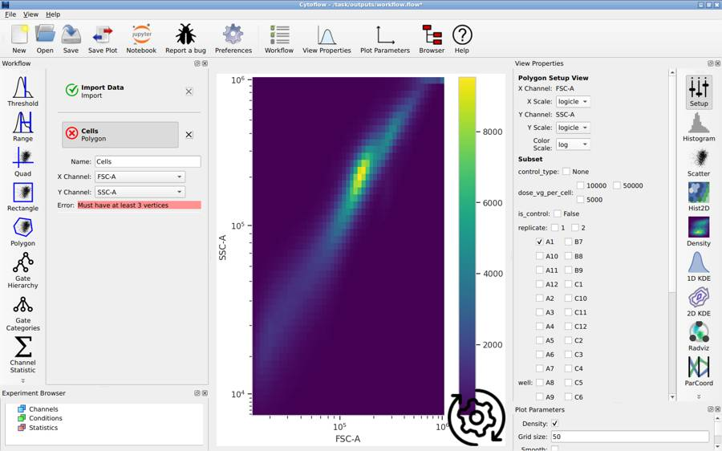
text(await tools.exec_command({cmd:"sleep 4\ncu screenshot /tmp/screen.png","max_output_tokens":1000}));
image((await tools.view_image({path:"/tmp/screen.png"})).image_url);
Script completed Wall time 4.1 seconds Output:
{"chunk_id":"e812d2","wall_time_seconds":3.899109569,"exit_code":0,"original_token_count":4,"output":"/tmp/screen.png\n"}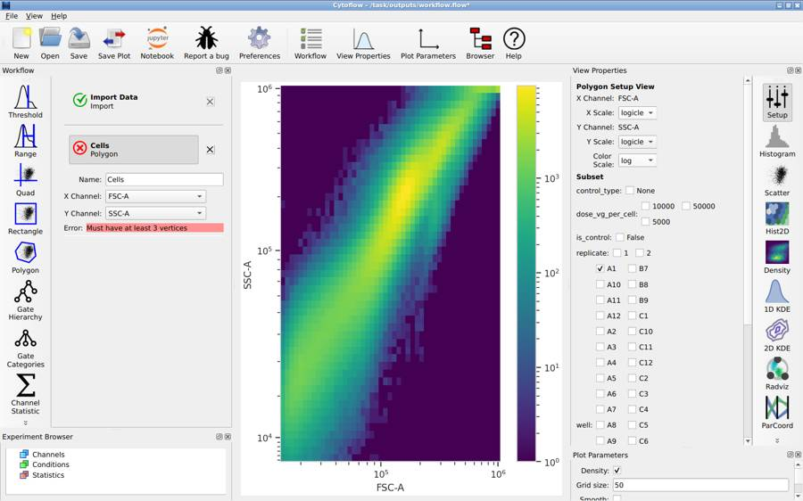
text(await tools.exec_command({cmd:"python3 - <<'PY'\nfrom html.parser import HTMLParser\nfrom pathlib import Path\nclass P(HTMLParser):\n def handle_data(self,s):\n if s.strip(): print(s.strip())\nP().feed(Path('/opt/cytoflow/cytoflow-1.3.2/_internal/cytoflowgui/help/operations/polygon.html').read_text())\nPY","max_output_tokens":1200}));
Script completed
Wall time 0.1 seconds
Output:
{"chunk_id":"bb9fed","wall_time_seconds":0.00000353,"exit_code":0,"original_token_count":145,"output":"Polygon Gate\nPolygon Gate\nDraw a polygon gate. To add vertices, use a single-click; to close the\npolygon, click the first vertex a second time.\nName\nThe operation name. Used to name the new metadata field that’s created by\nthis module.\nX\nChannel\nThe name of the channel on the gate’s X axis.\nY\nChannel\nThe name of the channel on the gate’s Y axis.\nX\nScale\nThe scale of the X axis for the interactive plot.\nY\nScale\nThe scale of the Y axis for the interactive plot\nHue\nfacet\nShow different experimental conditions in different colors.\nSubset\nShow only a subset of the data.\n"}text(await tools.exec_command({cmd:"cu click 632 504\ncu click 641 386\ncu click 752 174\ncu click 882 174\ncu click 880 277\ncu click 769 472\ncu click 681 535\ncu click 632 504\ncu key ctrl+s\nsleep 3\ncu screenshot /tmp/screen.png","max_output_tokens":1000}));
image((await tools.view_image({path:"/tmp/screen.png"})).image_url);
Script completed Wall time 4.2 seconds Output:
{"chunk_id":"cfbb40","wall_time_seconds":3.820161008,"exit_code":0,"original_token_count":4,"output":"/tmp/screen.png\n"}text(await tools.exec_command({cmd:"cu click 1076 594\ncu click 1076 482\nsleep 5\ncu screenshot /tmp/screen.png","max_output_tokens":1000}));
image((await tools.view_image({path:"/tmp/screen.png"})).image_url);
Script completed Wall time 5.3 seconds Output:
{"chunk_id":"a714a1","wall_time_seconds":5.113952296,"exit_code":0,"original_token_count":4,"output":"/tmp/screen.png\n"}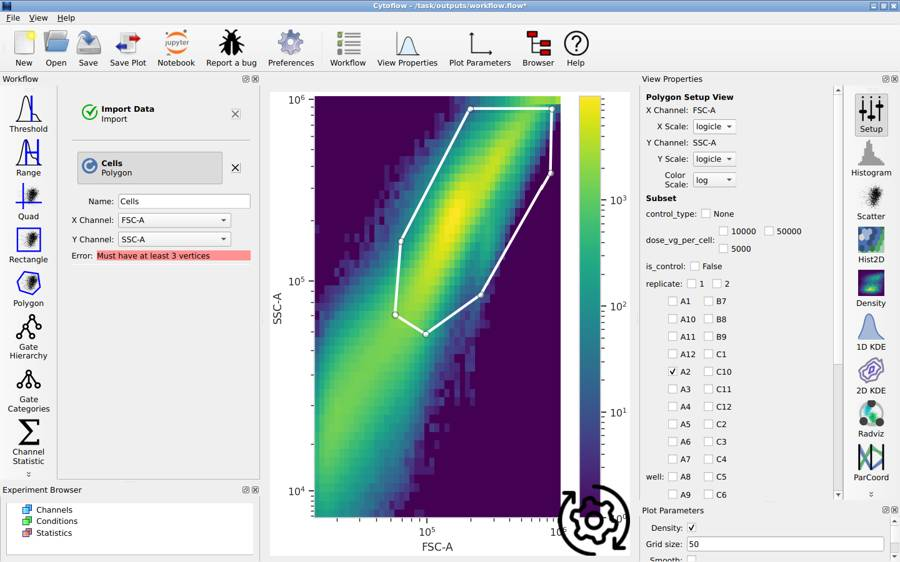
text(await tools.exec_command({cmd:"sleep 8\ncu screenshot /tmp/screen.png\nfree -h","yield_time_ms":10000,"max_output_tokens":1000}));
image((await tools.view_image({path:"/tmp/screen.png"})).image_url);
Script completed Wall time 8.1 seconds Output:
{"chunk_id":"0de05a","wall_time_seconds":7.903178378,"exit_code":0,"original_token_count":56,"output":"/tmp/screen.png\n total used free shared buff/cache available\nMem: 7.8Gi 7.0Gi 547Mi 4.2Mi 414Mi 736Mi\nSwap: 79Gi 3.8Gi 76Gi\n"}text(await tools.exec_command({cmd:"cu click 47 454\nsleep 1\ncu screenshot /tmp/screen.png","max_output_tokens":1000}));
image((await tools.view_image({path:"/tmp/screen.png"})).image_url);
Script completed Wall time 2.1 seconds Output:
{"chunk_id":"01bb76","wall_time_seconds":1.036157068,"exit_code":0,"original_token_count":4,"output":"/tmp/screen.png\n"}text(await tools.exec_command({cmd:"cu click 281 407\ncu type Singlets\ncu key Tab\ncu key ctrl+s\nsleep 1\ncu screenshot /tmp/screen.png","max_output_tokens":1000}));
image((await tools.view_image({path:"/tmp/screen.png"})).image_url);
text(await tools.clock__curr_time({}));
Script completed Wall time 1.5 seconds Output:
{"chunk_id":"814eff","wall_time_seconds":1.2658198170000001,"exit_code":0,"original_token_count":4,"output":"/tmp/screen.png\n"}{"current_time":"2026-11-05 08:25:46 UTC"}text(await tools.exec_command({cmd:"ps -C cytoflow -o pid,rss,%cpu,etime\nsleep 15\ncu screenshot /tmp/screen.png","yield_time_ms":1000,"max_output_tokens":1000}));
Script completed
Wall time 1.2 seconds
Output:
{"chunk_id":"4aeb7b","wall_time_seconds":1.001210255,"session_id":23004,"original_token_count":44,"output":" PID RSS %CPU ELAPSED\n 859 0 0.0 10:07\n 7663 0 0.0 07:12\n 7951 69380 1.8 03:56\n 7962 656 0.0 03:54\n 7964 5742988 54.7 03:54\n"}text(await tools.write_stdin({session_id:23004,chars:"","yield_time_ms":1000,"max_output_tokens":1000}));
image((await tools.view_image({path:"/tmp/screen.png"})).image_url);
text(await tools.exec_command({cmd:"tail -100 /task/outputs/workflow.flow","max_output_tokens":3000}));
Script completed Wall time 5.1 seconds Output:
{"chunk_id":"de4438","wall_time_seconds":5.001450162,"session_id":23004,"original_token_count":0,"output":""}{"chunk_id":"dcad51","wall_time_seconds":0.00000379,"exit_code":0,"original_token_count":394,"output":" - '2'\n - !category-subset;1\n name: well\n selected:\n - A2\n values:\n - A1\n - A10\n - A11\n - A12\n - A2\n - A3\n - A4\n - A5\n - A6\n - A7\n - A8\n - A9\n - B1\n - B10\n - B11\n - B12\n - B2\n - B3\n - B4\n - B5\n - B6\n - B7\n - B8\n - B9\n - C1\n - C10\n - C11\n - C12\n - C2\n - C3\n - C4\n - C5\n - C6\n - C7\n - C8\n - C9\n - D1\n - D2\n - D3\n - D4\n - D5\n - D6\n metadata: {}\n operation: *id001\n statistics: {}\n views:\n - *id002\n- !workflow-item;5\n channels: []\n conditions: {}\n current_view: &id004 !polygon-view;3\n current_plot: null\n huefacet: ''\n huescale: linear\n op: &id003 !polygon;1\n name: Singlets\n vertices: []\n xchannel: ''\n xscale: linear\n ychannel: ''\n yscale: linear\n plot_params: !polygon-params;1\n alpha: 0.25\n col_wrap: null\n density: false\n despine: true\n gridsize: 50\n huelabel: ''\n legend: true\n marker: o\n max_quantile: 1.0\n min_quantile: 0.001\n s: 2\n sharex: true\n sharey: true\n smoothed: false\n smoothed_sigma: 1.0\n sns_context: notebook\n sns_style: whitegrid\n title: ''\n xlabel: ''\n xlim: !!python/tuple\n - null\n - null\n ylabel: ''\n ylim: !!python/tuple\n - null\n - null\n subset_list: []\n metadata: {}\n operation: *id003\n statistics: {}\n views:\n - *id004\n"}text(await tools.write_stdin({session_id:23004,chars:"","yield_time_ms":1000,"max_output_tokens":1000}));
image((await tools.view_image({path:"/tmp/screen.png"})).image_url);
text(await tools.exec_command({cmd:"tail -10 /tmp/cytoflow.log","max_output_tokens":1000}));
Script completed Wall time 0.1 seconds Output:
{"chunk_id":"b842b0","wall_time_seconds":0.0000494,"exit_code":0,"original_token_count":4,"output":"/tmp/screen.png\n"}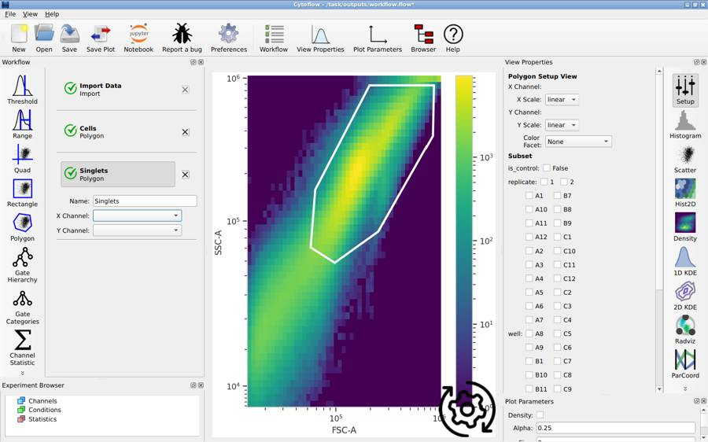
{"chunk_id":"97ea41","wall_time_seconds":0.00000603,"exit_code":0,"original_token_count":22,"output":"QXcbIntegration: Cannot create platform OpenGL context, neither GLX nor EGL are enabled\n"}text(await tools.exec_command({cmd:"cu click 1076 397\ncu click 357 438\nsleep 1\ncu screenshot /tmp/screen.png","max_output_tokens":1000}));
image((await tools.view_image({path:"/tmp/screen.png"})).image_url);
Script completed Wall time 1.3 seconds Output:
{"chunk_id":"a2c9ca","wall_time_seconds":1.115085729,"exit_code":0,"original_token_count":4,"output":"/tmp/screen.png\n"}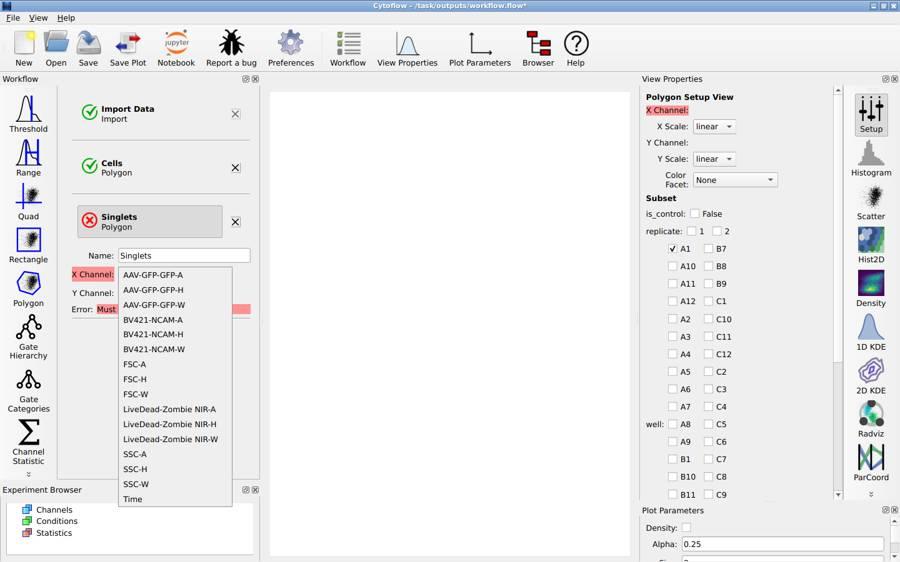
text(await tools.exec_command({cmd:"cu click 218 750\ncu click 358 470\ncu key End\ncu key Up\ncu key Up\ncu key Up\ncu key Return\nsleep 4\ncu screenshot /tmp/screen.png","max_output_tokens":1000}));
image((await tools.view_image({path:"/tmp/screen.png"})).image_url);
Script completed Wall time 4.4 seconds Output:
{"chunk_id":"291b66","wall_time_seconds":4.185127569,"exit_code":0,"original_token_count":4,"output":"/tmp/screen.png\n"}text(await tools.exec_command({cmd:"cu click 87 834 double\ncu click 239 265\nsleep 2\ncu click 229 353\nsleep 4\ncu screenshot /tmp/screen.png","max_output_tokens":1000}));
image((await tools.view_image({path:"/tmp/screen.png"})).image_url);
Script completed Wall time 6.5 seconds Output:
{"chunk_id":"c30838","wall_time_seconds":6.316867698,"exit_code":0,"original_token_count":4,"output":"/tmp/screen.png\n"}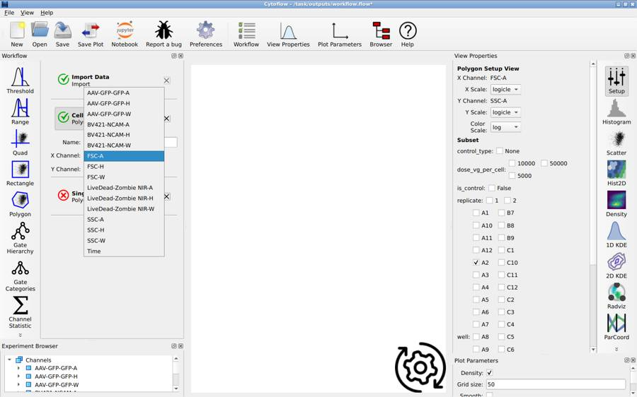
text(await tools.exec_command({cmd:"cu key Escape\ncu click 234 441\nsleep 4\ncu screenshot /tmp/screen.png","max_output_tokens":1000}));
image((await tools.view_image({path:"/tmp/screen.png"})).image_url);
Script completed Wall time 4.2 seconds Output:
{"chunk_id":"33d8d5","wall_time_seconds":4.019288315,"exit_code":0,"original_token_count":4,"output":"/tmp/screen.png\n"}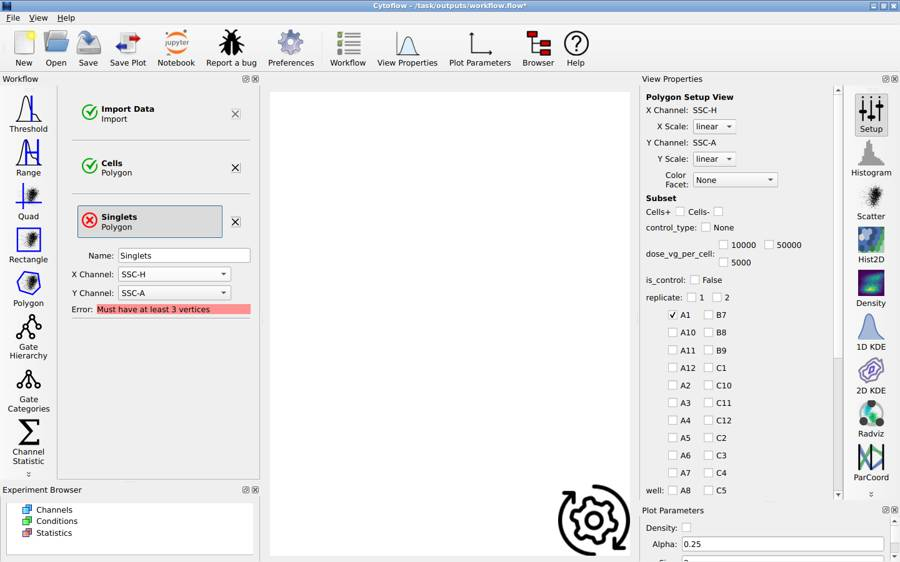
text(await tools.exec_command({cmd:"cu click 1088 338\ncu click 1098 845\nsleep 5\ncu screenshot /tmp/screen.png","max_output_tokens":1000}));
image((await tools.view_image({path:"/tmp/screen.png"})).image_url);
Script completed Wall time 5.3 seconds Output:
{"chunk_id":"3a76ea","wall_time_seconds":5.115268526,"exit_code":0,"original_token_count":4,"output":"/tmp/screen.png\n"}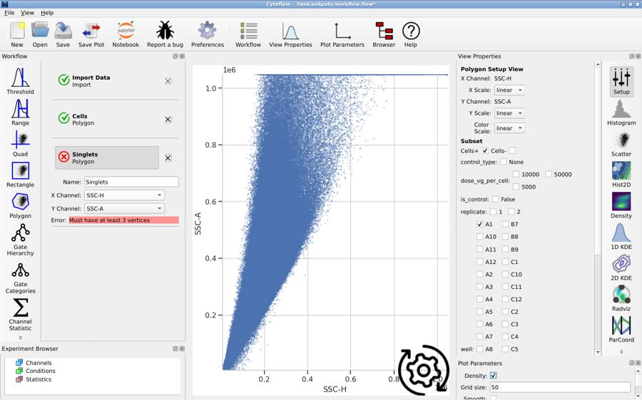
text(await tools.exec_command({cmd:"cu click 1166 203\ncu key Home\ncu key Down\ncu key Return\ncu click 1166 254\ncu key Home\ncu key Down\ncu key Return\ncu click 1165 288\ncu key Home\ncu key Down\ncu key Return\nsleep 6\ncu screenshot /tmp/screen.png","max_output_tokens":1000}));
image((await tools.view_image({path:"/tmp/screen.png"})).image_url);
Script completed Wall time 6.5 seconds Output:
{"chunk_id":"594290","wall_time_seconds":6.3611021260000005,"exit_code":0,"original_token_count":4,"output":"/tmp/screen.png\n"}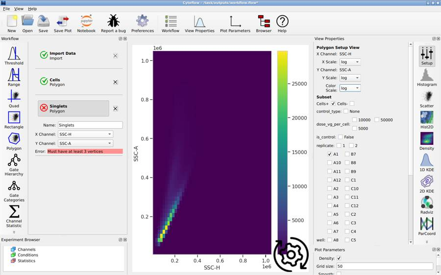
text(await tools.exec_command({cmd:"sleep 8\ncu screenshot /tmp/screen.png","yield_time_ms":10000,"max_output_tokens":1000}));
image((await tools.view_image({path:"/tmp/screen.png"})).image_url);
Script completed Wall time 8.1 seconds Output:
{"chunk_id":"180991","wall_time_seconds":7.900781117,"exit_code":0,"original_token_count":4,"output":"/tmp/screen.png\n"}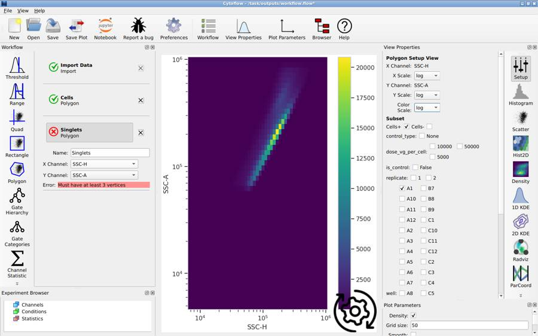
text(await tools.exec_command({cmd:"sleep 5\ncu screenshot /tmp/screen.png","max_output_tokens":1000}));
image((await tools.view_image({path:"/tmp/screen.png"})).image_url);
Script completed Wall time 5.1 seconds Output:
{"chunk_id":"a44d55","wall_time_seconds":4.898984993,"exit_code":0,"original_token_count":4,"output":"/tmp/screen.png\n"}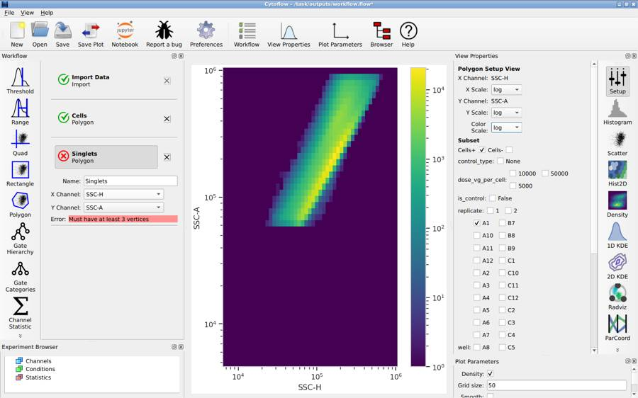
text(await tools.exec_command({cmd:"cu click 651 514\ncu click 648 473\ncu click 705 385\ncu click 812 176\ncu click 846 176\ncu click 789 316\ncu click 693 493\ncu click 651 514\ncu key ctrl+s\nsleep 2\ncu screenshot /tmp/screen.png","max_output_tokens":1000}));
image((await tools.view_image({path:"/tmp/screen.png"})).image_url);
Script completed Wall time 3.1 seconds Output:
{"chunk_id":"455c17","wall_time_seconds":2.825986807,"exit_code":0,"original_token_count":4,"output":"/tmp/screen.png\n"}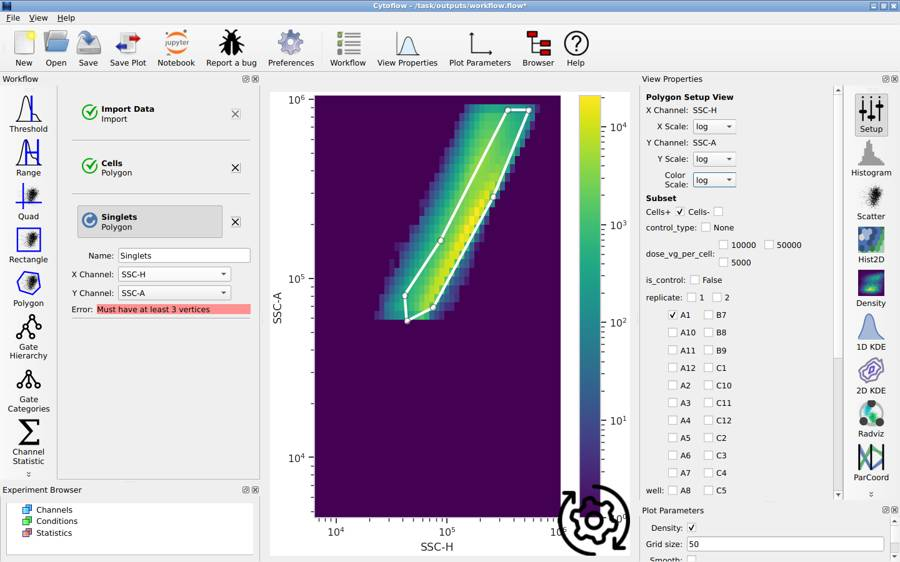
text(await tools.exec_command({cmd:"cu click 46 242\nsleep 1\ncu screenshot /tmp/screen.png","max_output_tokens":1000}));
image((await tools.view_image({path:"/tmp/screen.png"})).image_url);
Script completed Wall time 1.2 seconds Output:
{"chunk_id":"e26bbd","wall_time_seconds":1.007623987,"exit_code":0,"original_token_count":4,"output":"/tmp/screen.png\n"}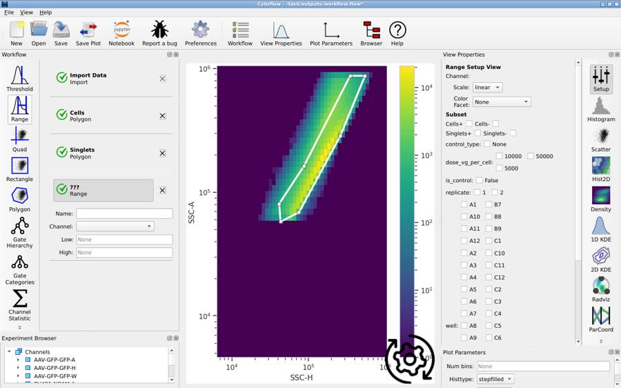
text(await tools.exec_command({cmd:"cu click 274 495\ncu type Live\ncu click 1088 287\ncu click 1106 309\ncu click 1076 474\ncu click 345 524\ncu key End\ncu key Up\ncu key Up\ncu key Up\ncu key Up\ncu key Up\ncu key Up\ncu key Return\ncu click 1152 203\ncu key End\ncu key Return\nsleep 6\ncu screenshot /tmp/screen.png","max_output_tokens":1000}));
image((await tools.view_image({path:"/tmp/screen.png"})).image_url);
Script completed Wall time 7.0 seconds Output:
{"chunk_id":"94f4c8","wall_time_seconds":6.782605278,"exit_code":0,"original_token_count":4,"output":"/tmp/screen.png\n"}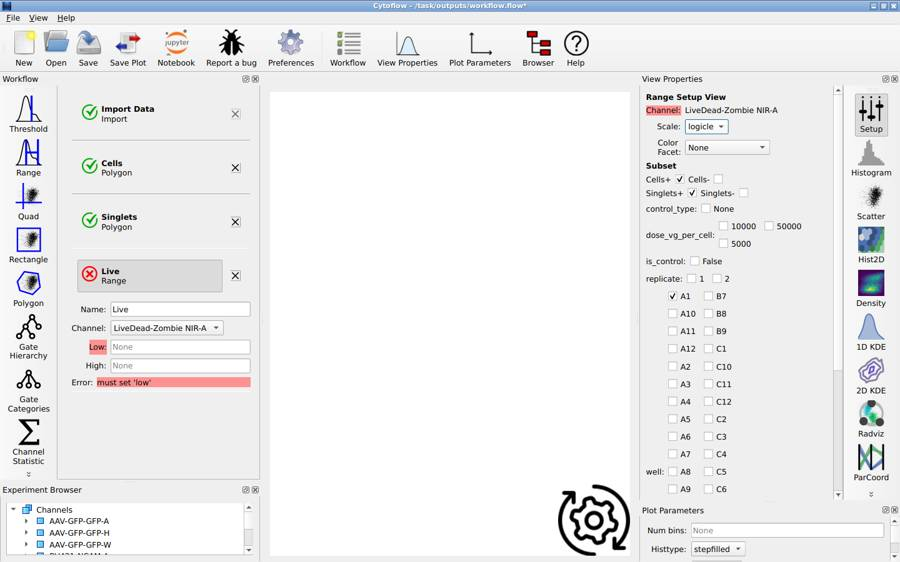
text(await tools.exec_command({cmd:"sleep 6\ncu screenshot /tmp/screen.png","max_output_tokens":1000}));
image((await tools.view_image({path:"/tmp/screen.png"})).image_url);
Script completed Wall time 6.1 seconds Output:
{"chunk_id":"ac9911","wall_time_seconds":5.899370768,"exit_code":0,"original_token_count":4,"output":"/tmp/screen.png\n"}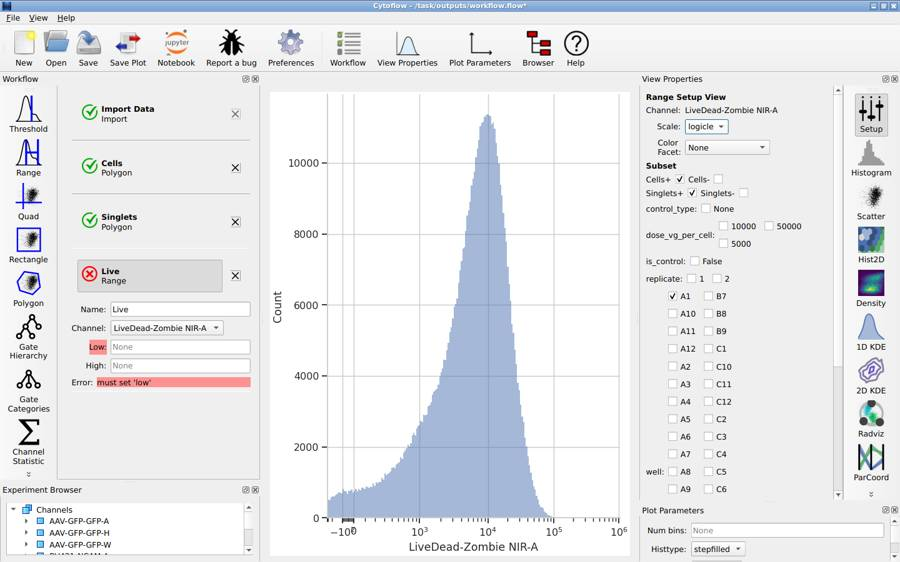
text(await tools.exec_command({cmd:"cu click 1076 727\ncu click 1076 473\nsleep 5\ncu screenshot /tmp/screen.png","max_output_tokens":1000}));
image((await tools.view_image({path:"/tmp/screen.png"})).image_url);
Script completed Wall time 5.3 seconds Output:
{"chunk_id":"d14b8f","wall_time_seconds":5.107790123,"exit_code":0,"original_token_count":4,"output":"/tmp/screen.png\n"}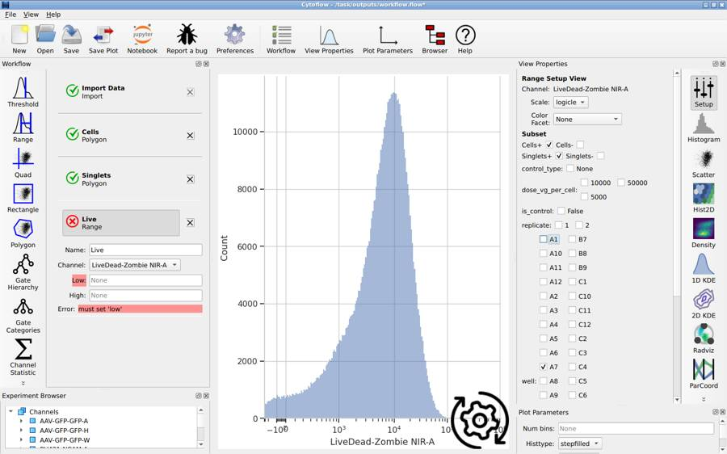
text(await tools.exec_command({cmd:"sleep 5\ncu screenshot /tmp/screen.png","max_output_tokens":1000}));
image((await tools.view_image({path:"/tmp/screen.png"})).image_url);
Script completed Wall time 5.1 seconds Output:
{"chunk_id":"19810c","wall_time_seconds":4.898091293,"exit_code":0,"original_token_count":4,"output":"/tmp/screen.png\n"}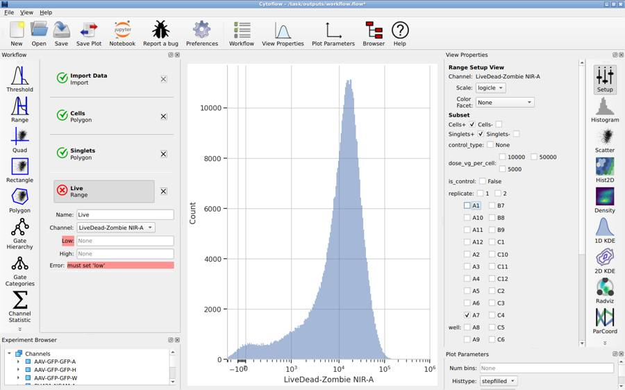
text(await tools.exec_command({cmd:"cu click 1133 474\ncu click 1133 558\ncu click 1220 235\ncu key End\ncu key Return\ncu click 1178 879\ncu key Home\ncu key Return\nsleep 7\ncu screenshot /tmp/screen.png","max_output_tokens":1000}));
image((await tools.view_image({path:"/tmp/screen.png"})).image_url);
Script completed Wall time 7.6 seconds Output:
{"chunk_id":"cf4bb6","wall_time_seconds":7.375905066,"exit_code":0,"original_token_count":4,"output":"/tmp/screen.png\n"}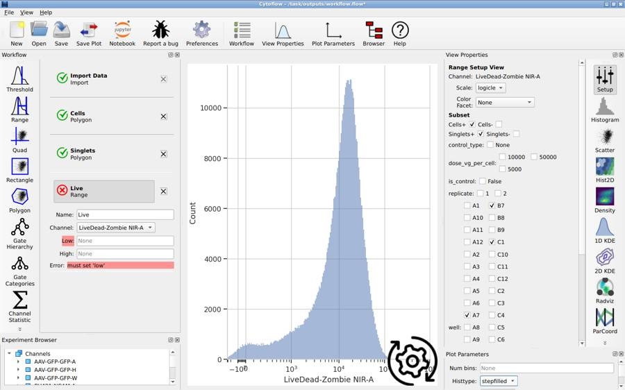
text(await tools.exec_command({cmd:"cu click 1219 235\nsleep 1\ncu screenshot /tmp/screen.png","max_output_tokens":1000}));
image((await tools.view_image({path:"/tmp/screen.png"})).image_url);
Script completed Wall time 1.2 seconds Output:
{"chunk_id":"136286","wall_time_seconds":1.003367516,"exit_code":0,"original_token_count":4,"output":"/tmp/screen.png\n"}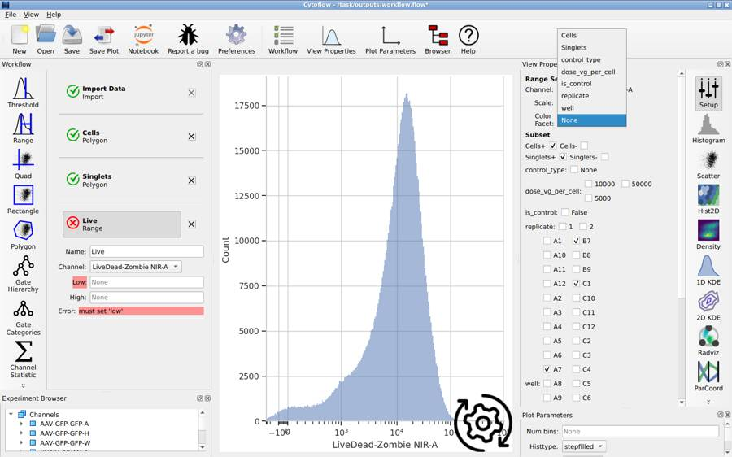
text(await tools.exec_command({cmd:"cu click 1120 213\ncu click 1181 879\nsleep 1\ncu screenshot /tmp/screen.png","max_output_tokens":1000}));
image((await tools.view_image({path:"/tmp/screen.png"})).image_url);
Script completed Wall time 1.3 seconds Output:
{"chunk_id":"cb2c9e","wall_time_seconds":1.111969638,"exit_code":0,"original_token_count":4,"output":"/tmp/screen.png\n"}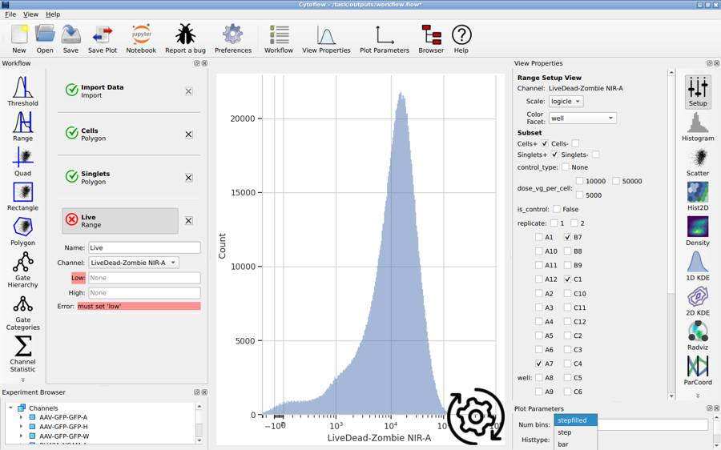
text(await tools.exec_command({cmd:"cu click 1128 863\ncu click 1230 847\ncu key ctrl+a\ncu type 160\ncu key Tab\nsleep 6\ncu screenshot /tmp/screen.png","max_output_tokens":1000}));
image((await tools.view_image({path:"/tmp/screen.png"})).image_url);
Script completed Wall time 6.4 seconds Output:
{"chunk_id":"19e053","wall_time_seconds":6.24321693,"exit_code":0,"original_token_count":4,"output":"/tmp/screen.png\n"}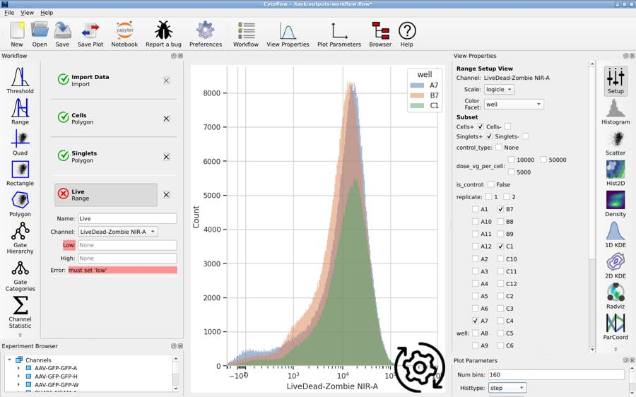
text(await tools.exec_command({cmd:"cu drag 1226 805 1226 570\ncu scroll 1305 864 down 4\nsleep 1\ncu screenshot /tmp/screen.png","max_output_tokens":1000}));
image((await tools.view_image({path:"/tmp/screen.png"})).image_url);
Script completed Wall time 1.5 seconds Output:
{"chunk_id":"9c597d","wall_time_seconds":1.342189866,"exit_code":0,"original_token_count":4,"output":"/tmp/screen.png\n"}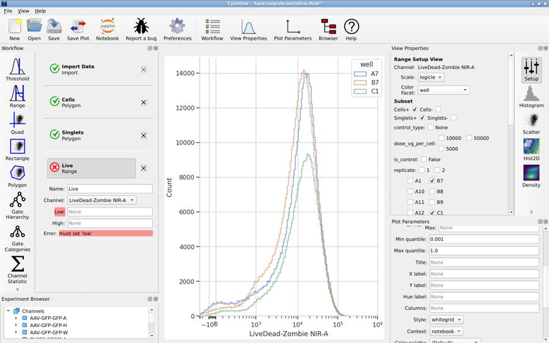
text(await tools.exec_command({cmd:"cu scroll 1286 676 up 2\nsleep 1\ncu screenshot /tmp/screen.png","max_output_tokens":1000}));
image((await tools.view_image({path:"/tmp/screen.png"})).image_url);
Script completed Wall time 1.3 seconds Output:
{"chunk_id":"9b0eb9","wall_time_seconds":1.105243294,"exit_code":0,"original_token_count":4,"output":"/tmp/screen.png\n"}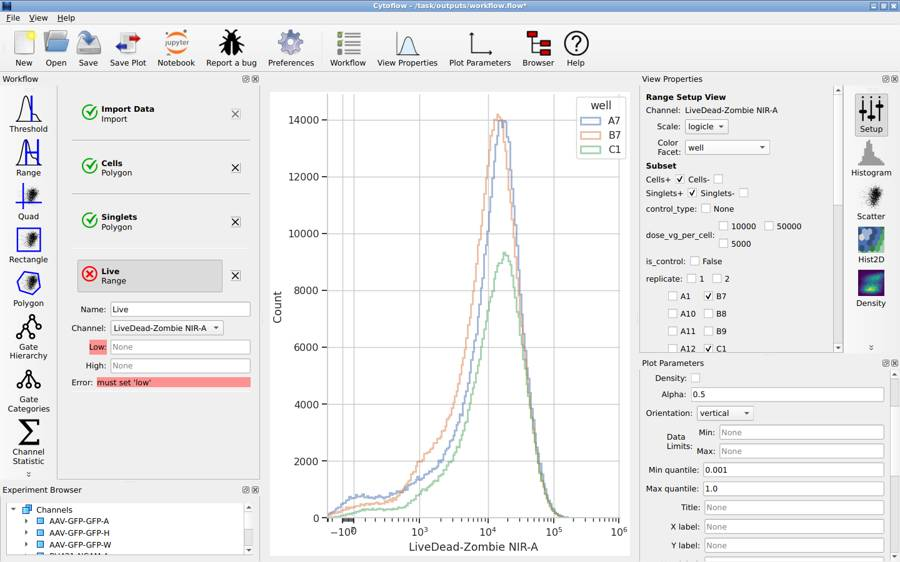
text(await tools.exec_command({cmd:"cu click 1390 383\nsleep 2\ncu screenshot /tmp/screen.png","max_output_tokens":1000}));
image((await tools.view_image({path:"/tmp/screen.png"})).image_url);
Script completed Wall time 2.2 seconds Output:
{"chunk_id":"b77c2a","wall_time_seconds":2.000893639,"exit_code":0,"original_token_count":4,"output":"/tmp/screen.png\n"}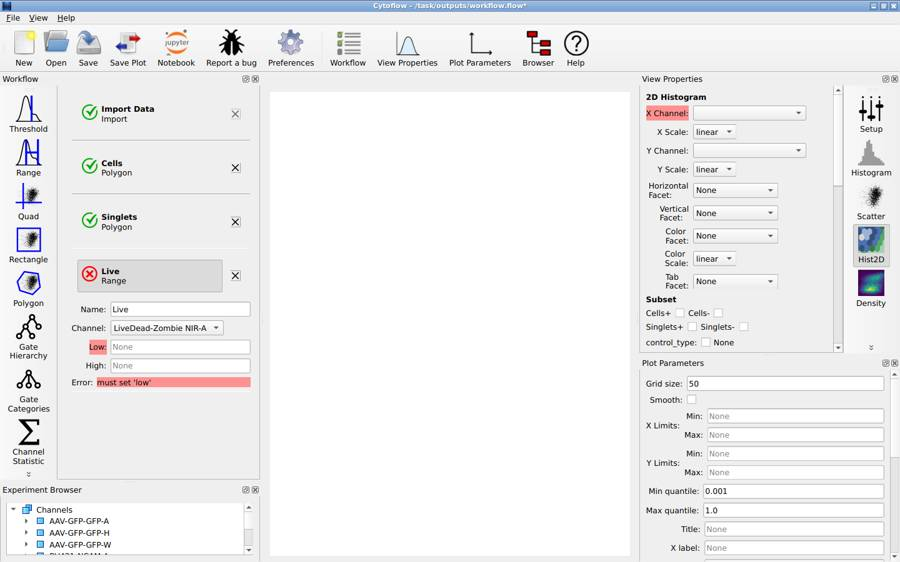
text(await tools.exec_command({cmd:"cu click 1088 502\ncu click 1107 522\ncu click 1232 451\ncu key End\ncu key Up\ncu key Return\ncu click 1277 181\ncu key End\ncu key Up\ncu key Up\ncu key Up\ncu key Up\ncu key Up\ncu key Up\ncu key Return\ncu click 1167 211\ncu key End\ncu key Return\ncu click 1278 241\ncu key End\ncu key Up\ncu key Up\ncu key Up\ncu key Return\ncu click 1167 270\ncu key Home\ncu key Down\ncu key Return\ncu click 1166 414\ncu key Home\ncu key Down\ncu key Return\nsleep 7\ncu screenshot /tmp/screen.png","max_output_tokens":1000}));
image((await tools.view_image({path:"/tmp/screen.png"})).image_url);
Script completed Wall time 8.3 seconds Output:
{"chunk_id":"8e47e1","wall_time_seconds":8.097027923,"exit_code":0,"original_token_count":4,"output":"/tmp/screen.png\n"}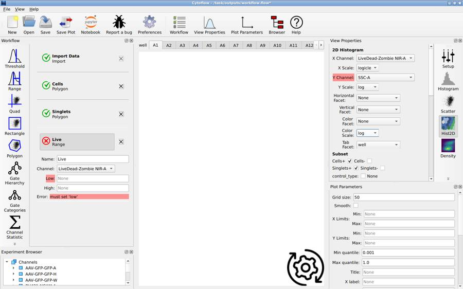
text(await tools.exec_command({cmd:"sleep 7\ncu screenshot /tmp/screen.png","max_output_tokens":1000}));
image((await tools.view_image({path:"/tmp/screen.png"})).image_url);
Script completed Wall time 7.3 seconds Output:
{"chunk_id":"e261d2","wall_time_seconds":6.961508917,"exit_code":0,"original_token_count":4,"output":"/tmp/screen.png\n"}text(await tools.exec_command({cmd:"cu click 264 555\ncu key ctrl+a\ncu type -1000000\ncu click 267 586\ncu key ctrl+a\ncu type 500\ncu key Tab\ncu key ctrl+s\nsleep 7\ncu screenshot /tmp/screen.png","max_output_tokens":1000}));
image((await tools.view_image({path:"/tmp/screen.png"})).image_url);
Script completed Wall time 8.6 seconds Output:
{"chunk_id":"14540a","wall_time_seconds":7.763899875,"exit_code":0,"original_token_count":4,"output":"/tmp/screen.png\n"}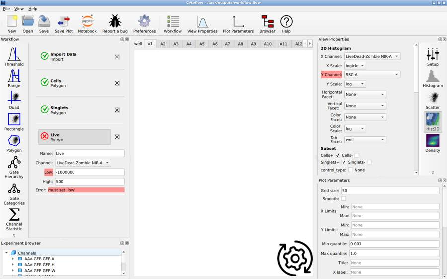
text(await tools.exec_command({cmd:"sleep 8\ncu screenshot /tmp/screen.png\ntail -8 /tmp/cytoflow.log","yield_time_ms":10000,"max_output_tokens":1000}));
image((await tools.view_image({path:"/tmp/screen.png"})).image_url);
Script completed Wall time 8.5 seconds Output:
{"chunk_id":"f4fe18","wall_time_seconds":8.020186303,"exit_code":0,"original_token_count":26,"output":"/tmp/screen.png\nQXcbIntegration: Cannot create platform OpenGL context, neither GLX nor EGL are enabled\n"}text(await tools.exec_command({cmd:"ps -C cytoflow -o pid,rss,%cpu,etime\nfree -h\ncu click 1393 181\nsleep 5\ncu screenshot /tmp/screen.png","max_output_tokens":1000}));
image((await tools.view_image({path:"/tmp/screen.png"})).image_url);
Script completed Wall time 5.4 seconds Output:
{"chunk_id":"2438a2","wall_time_seconds":5.059985305,"exit_code":0,"original_token_count":100,"output":" PID RSS %CPU ELAPSED\n 859 0 0.0 15:37\n 7663 0 0.0 12:42\n 7951 6172 1.2 09:26\n 7962 84 0.0 09:24\n 7964 7427068 62.3 09:24\n total used free shared buff/cache available\nMem: 7.8Gi 7.6Gi 101Mi 0B 297Mi 178Mi\nSwap: 79Gi 20Gi 59Gi\n/tmp/screen.png\n"}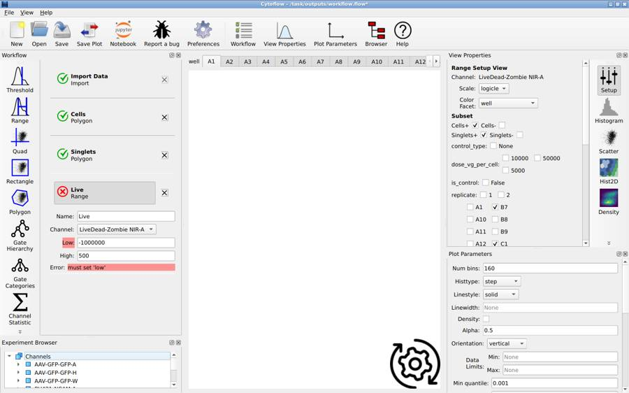
{
"duration_ms": 30000
}Wall time: 30.0964 seconds Sleep completed.
text(await tools.exec_command({cmd:"cu screenshot /tmp/screen.png\nfree -h","max_output_tokens":1000}));
image((await tools.view_image({path:"/tmp/screen.png"})).image_url);
Script completed Wall time 0.4 seconds Output:
{"chunk_id":"d6b67e","wall_time_seconds":0.00000907,"exit_code":0,"original_token_count":56,"output":"/tmp/screen.png\n total used free shared buff/cache available\nMem: 7.8Gi 7.6Gi 122Mi 76Ki 299Mi 201Mi\nSwap: 79Gi 27Gi 52Gi\n"}text(await tools.exec_command({cmd:"python3 - <<'PY'\nfrom html.parser import HTMLParser\nfrom pathlib import Path\nclass P(HTMLParser):\n def handle_data(self,s):\n if s.strip(): print(s.strip())\nP().feed(Path('/opt/cytoflow/cytoflow-1.3.2/_internal/cytoflowgui/help/operations/import.html').read_text())\nPY","max_output_tokens":2000}));
text(await tools.clock__curr_time({}));
Script completed
Wall time 0.1 seconds
Output:
{"chunk_id":"4ea5f5","wall_time_seconds":0.00001242,"exit_code":1,"original_token_count":152,"output":"Traceback (most recent call last):\n File \"<stdin>\", line 6, in <module>\n File \"/usr/lib/python3.12/pathlib.py\", line 1029, in read_text\n with self.open(mode='r', encoding=encoding, errors=errors) as f:\n ^^^^^^^^^^^^^^^^^^^^^^^^^^^^^^^^^^^^^^^^^^^^^^^^^^^^^\n File \"/usr/lib/python3.12/pathlib.py\", line 1015, in open\n return io.open(self, mode, buffering, encoding, errors, newline)\n ^^^^^^^^^^^^^^^^^^^^^^^^^^^^^^^^^^^^^^^^^^^^^^^^^^^^^^^^^\nFileNotFoundError: [Errno 2] No such file or directory: '/opt/cytoflow/cytoflow-1.3.2/_internal/cytoflowgui/help/operations/import.html'\n"}
{"current_time":"2026-11-05 08:32:33 UTC"}text(await tools.exec_command({cmd:"cu key ctrl+s\ncu click 1391 382\nsleep 2\ncu screenshot /tmp/screen.png","max_output_tokens":1000}));
image((await tools.view_image({path:"/tmp/screen.png"})).image_url);
Script completed Wall time 2.2 seconds Output:
{"chunk_id":"82880a","wall_time_seconds":2.038532454,"exit_code":0,"original_token_count":4,"output":"/tmp/screen.png\n"}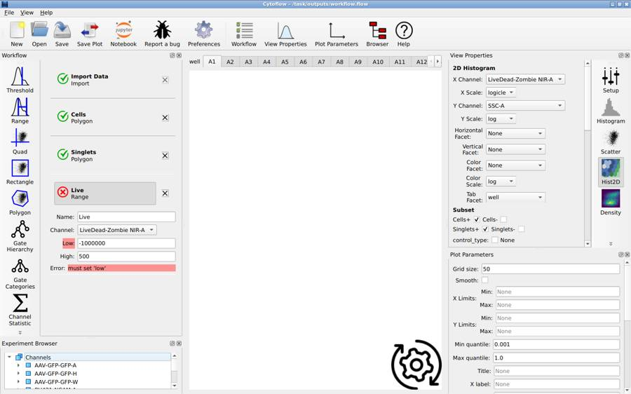
text(await tools.exec_command({cmd:"rg -n -A 15 -B 6 'name: Live|low:|high:' /task/outputs/workflow.flow | tail -45\nps -C cytoflow -o pid,rss,%cpu,etime","max_output_tokens":1200}));
Script completed
Wall time 0.1 seconds
Output:
{"chunk_id":"066bae","wall_time_seconds":0.00000427,"exit_code":0,"original_token_count":346,"output":"2079- range: 1048576.0\n2080- type: channel\n2081- voltage: '300'\n2082- LiveDead-Zombie NIR-W: &id024\n2083: fcs_name: LiveDead-Zombie NIR-W\n2084- range: 1024.0\n2085- type: channel\n2086- voltage: '300'\n2087- SSC-A: &id025\n2088- fcs_name: SSC-A\n2089- range: 1048576.0\n2090- type: channel\n2091- voltage: '300'\n2092- SSC-H: &id026\n2093- fcs_name: SSC-H\n2094- range: 1048576.0\n2095- type: channel\n2096- voltage: '300'\n2097- SSC-W: &id027\n2098- fcs_name: SSC-W\n--\n2515- well: *id011\n2516- current_view: &id038 !range-view;2\n2517- current_plot: A1\n2518- huefacet: well\n2519- op: &id036 !range;1\n2520- channel: LiveDead-Zombie NIR-A\n2521: high: 500.0\n2522: low: -1000000.0\n2523: name: Live\n2524- plot_params: !histogram-params;4\n2525- alpha: 0.5\n2526- col_wrap: null\n2527- density: false\n2528- despine: true\n2529- histtype: step\n2530- huelabel: ''\n2531- legend: true\n2532- legend_loc: upper right\n2533- lim: !!python/tuple\n2534- - null\n2535- - null\n2536- linestyle: solid\n2537- linewidth: null\n2538- margin_titles: false\n PID RSS %CPU ELAPSED\n 859 0 0.0 17:09\n 7663 0 0.0 14:13\n 7951 79112 1.2 10:58\n 7962 80 0.0 10:56\n 7964 1635828 61.9 10:56\n"}text(await tools.exec_command({cmd:"cu screenshot /tmp/screen.png\nfree -h","max_output_tokens":1000}));
image((await tools.view_image({path:"/tmp/screen.png"})).image_url);
Script completed Wall time 0.1 seconds Output:
{"chunk_id":"c97ba4","wall_time_seconds":0.00000458,"exit_code":0,"original_token_count":56,"output":"/tmp/screen.png\n total used free shared buff/cache available\nMem: 7.8Gi 5.8Gi 1.7Gi 4.4Mi 481Mi 2.0Gi\nSwap: 79Gi 6.1Gi 73Gi\n"}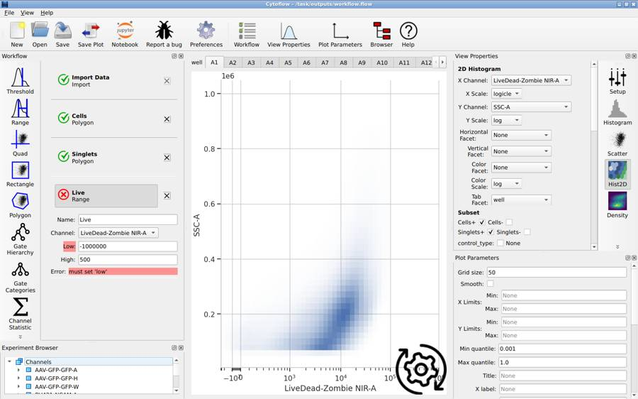
{
"duration_ms": 30000
}Wall time: 30.0038 seconds Sleep completed.
text(await tools.exec_command({cmd:"cu screenshot /tmp/screen.png","max_output_tokens":1000}));
image((await tools.view_image({path:"/tmp/screen.png"})).image_url);
Script completed Wall time 0.1 seconds Output:
{"chunk_id":"8fe1e4","wall_time_seconds":0.00000377,"exit_code":0,"original_token_count":4,"output":"/tmp/screen.png\n"}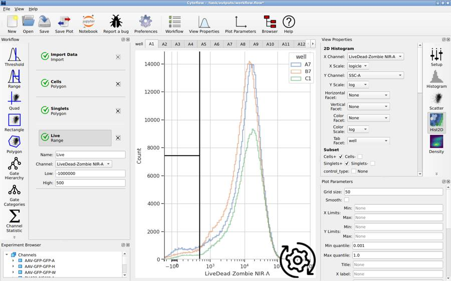
text(await tools.exec_command({cmd:"sleep 10\ncu screenshot /tmp/screen.png","yield_time_ms":1000,"max_output_tokens":1000}));
Script completed
Wall time 1.2 seconds
Output:
{"chunk_id":"6d3094","wall_time_seconds":1.001214525,"session_id":56766,"original_token_count":0,"output":""}text(await tools.write_stdin({session_id:56766,chars:"","yield_time_ms":1000,"max_output_tokens":1000}));
image((await tools.view_image({path:"/tmp/screen.png"})).image_url);
Script completed Wall time 0.0 seconds Output:
{"chunk_id":"071c6c","wall_time_seconds":0.0000058,"exit_code":0,"original_token_count":4,"output":"/tmp/screen.png\n"}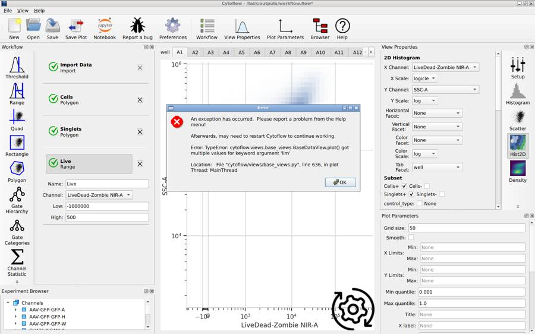
text(await tools.exec_command({cmd:"cu click 913 490\nsleep 5\ncu screenshot /tmp/screen.png","max_output_tokens":1000}));
image((await tools.view_image({path:"/tmp/screen.png"})).image_url);
Script completed Wall time 5.2 seconds Output:
{"chunk_id":"9cddba","wall_time_seconds":5.005581194,"exit_code":0,"original_token_count":4,"output":"/tmp/screen.png\n"}text(await tools.exec_command({cmd:"cu click 731 141\nsleep 5\ncu screenshot /tmp/screen.png","max_output_tokens":1000}));
image((await tools.view_image({path:"/tmp/screen.png"})).image_url);
Script completed Wall time 5.2 seconds Output:
{"chunk_id":"1a83f7","wall_time_seconds":5.005054664,"exit_code":0,"original_token_count":4,"output":"/tmp/screen.png\n"}text(await tools.exec_command({cmd:"sleep 8\ncu screenshot /tmp/screen.png","yield_time_ms":10000,"max_output_tokens":1000}));
image((await tools.view_image({path:"/tmp/screen.png"})).image_url);
Script completed Wall time 8.1 seconds Output:
{"chunk_id":"140ac1","wall_time_seconds":7.897578876,"exit_code":0,"original_token_count":4,"output":"/tmp/screen.png\n"}text(await tools.exec_command({cmd:"cu click 47 173\nsleep 1\ncu screenshot /tmp/screen.png","max_output_tokens":1000}));
image((await tools.view_image({path:"/tmp/screen.png"})).image_url);
Script completed Wall time 1.2 seconds Output:
{"chunk_id":"f14711","wall_time_seconds":1.004657386,"exit_code":0,"original_token_count":4,"output":"/tmp/screen.png\n"}text(await tools.exec_command({cmd:"cu click 278 581\ncu key ctrl+a\ncu type GFP_pos\ncu click 1088 309\ncu click 1083 330\ncu click 1106 352\ncu click 1076 518\ncu click 1165 225\ncu key End\ncu key Return\ncu click 355 612\ncu key Home\ncu key Return\nsleep 6\ncu screenshot /tmp/screen.png","max_output_tokens":1000}));
image((await tools.view_image({path:"/tmp/screen.png"})).image_url);
Script completed Wall time 7.1 seconds Output:
{"chunk_id":"c066f8","wall_time_seconds":6.903939694,"exit_code":0,"original_token_count":4,"output":"/tmp/screen.png\n"}text(await tools.exec_command({cmd:"sleep 6\ncu screenshot /tmp/screen.png","max_output_tokens":1000}));
image((await tools.view_image({path:"/tmp/screen.png"})).image_url);
Script completed Wall time 6.1 seconds Output:
{"chunk_id":"75b989","wall_time_seconds":5.902009889,"exit_code":0,"original_token_count":4,"output":"/tmp/screen.png\n"}text(await tools.exec_command({cmd:"cu drag 1232 570 1232 790\ncu click 1232 257\ncu key End\ncu key Up\ncu key Return\nsleep 1\ncu screenshot /tmp/screen.png","max_output_tokens":1000}));
image((await tools.view_image({path:"/tmp/screen.png"})).image_url);
Script completed Wall time 1.3 seconds Output:
{"chunk_id":"a045e5","wall_time_seconds":1.090813229,"exit_code":0,"original_token_count":4,"output":"/tmp/screen.png\n"}text(await tools.exec_command({cmd:"cu click 1076 630\ncu click 1076 770\ncu click 1133 518\ncu click 1133 602\ncu click 1185 865\ncu key Down\ncu key Return\ncu click 1209 835\ncu key ctrl+a\ncu type 160\ncu key Tab\nsleep 7\ncu screenshot /tmp/screen.png","max_output_tokens":1000}));
image((await tools.view_image({path:"/tmp/screen.png"})).image_url);
Script completed Wall time 7.9 seconds Output:
{"chunk_id":"257883","wall_time_seconds":7.686322115,"exit_code":0,"original_token_count":4,"output":"/tmp/screen.png\n"}text(await tools.exec_command({cmd:"sleep 10\ncu screenshot /tmp/screen.png","yield_time_ms":1000,"max_output_tokens":1000}));
Script completed
Wall time 1.2 seconds
Output:
{"chunk_id":"976d53","wall_time_seconds":1.000517465,"session_id":75391,"original_token_count":0,"output":""}text(await tools.write_stdin({session_id:75391,chars:"","yield_time_ms":1000,"max_output_tokens":1000}));
image((await tools.view_image({path:"/tmp/screen.png"})).image_url);
Script completed Wall time 0.0 seconds Output:
{"chunk_id":"cab2b4","wall_time_seconds":0.00000532,"exit_code":0,"original_token_count":4,"output":"/tmp/screen.png\n"}text(await tools.exec_command({cmd:"cu scroll 1275 704 down 4\nsleep 1\ncu screenshot /tmp/screen.png","max_output_tokens":1000}));
image((await tools.view_image({path:"/tmp/screen.png"})).image_url);
Script completed Wall time 1.5 seconds Output:
{"chunk_id":"0aaed0","wall_time_seconds":1.306262832,"exit_code":0,"original_token_count":4,"output":"/tmp/screen.png\n"}text(await tools.exec_command({cmd:"cu click 1133 689\ncu click 1133 605\ncu click 1076 605\ncu click 275 641\ncu key ctrl+a\ncu type 1000\ncu key Tab\ncu key ctrl+s\nsleep 7\ncu screenshot /tmp/screen.png","max_output_tokens":1000}));
image((await tools.view_image({path:"/tmp/screen.png"})).image_url);
Script completed Wall time 7.7 seconds Output:
{"chunk_id":"aae54e","wall_time_seconds":7.496907342,"exit_code":0,"original_token_count":4,"output":"/tmp/screen.png\n"}text(await tools.exec_command({cmd:"sleep 8\ncu screenshot /tmp/screen.png","yield_time_ms":10000,"max_output_tokens":1000}));
image((await tools.view_image({path:"/tmp/screen.png"})).image_url);
Script completed Wall time 8.1 seconds Output:
{"chunk_id":"bb5b4a","wall_time_seconds":7.921903905,"exit_code":0,"original_token_count":4,"output":"/tmp/screen.png\n"}text(await tools.exec_command({cmd:"python3 - <<'PY'\nfrom pathlib import Path\n# Read only the fixed header and TEXT metadata segment; never read event data.\np=Path('/task/inputs/raw/Serotype panel_2_Rep2_Group_A1.fcs')\nwith p.open('rb') as f:\n h=f.read(58); start=int(h[10:18]); end=int(h[18:26]); f.seek(start); txt=f.read(end-start+1).decode('latin1')\nparts=txt[1:].split(txt[0]); m=dict(zip(parts[0::2],parts[1::2]))\nfor k,v in m.items():\n if 'TIME' in k.upper() or (k.startswith('$P') and v=='Time'): print(k, v)\nPY","max_output_tokens":1000}));
Script completed
Wall time 0.1 seconds
Output:
{"chunk_id":"9bf6cf","wall_time_seconds":0.0000047,"exit_code":0,"original_token_count":9,"output":"$P1S Time\n$P1N Time\n$TIMESTEP 0.001\n"}text(await tools.exec_command({cmd:"sleep 8\ncu screenshot /tmp/screen.png","yield_time_ms":10000,"max_output_tokens":1000}));
image((await tools.view_image({path:"/tmp/screen.png"})).image_url);
Script completed Wall time 8.1 seconds Output:
{"chunk_id":"71593e","wall_time_seconds":7.897347506,"exit_code":0,"original_token_count":4,"output":"/tmp/screen.png\n"}text(await tools.exec_command({cmd:"mkdir -p /task/outputs/qc\ncu key ctrl+s\ncu screenshot /task/outputs/qc/gfp_boundary.png\ncu click 44 691\nsleep 2\ncu screenshot /tmp/screen.png","max_output_tokens":1000}));
image((await tools.view_image({path:"/tmp/screen.png"})).image_url);
Script completed Wall time 2.3 seconds Output:
{"chunk_id":"e76c1a","wall_time_seconds":2.08187943,"exit_code":0,"original_token_count":13,"output":"/task/outputs/qc/gfp_boundary.png\n/tmp/screen.png\n"}text(await tools.exec_command({cmd:"cu click 277 667\ncu type PopulationCounts\ncu click 346 697\ncu key Home\ncu key Return\ncu click 320 728\nsleep 1\ncu screenshot /tmp/screen.png","max_output_tokens":1000}));
image((await tools.view_image({path:"/tmp/screen.png"})).image_url);
Script completed Wall time 1.8 seconds Output:
{"chunk_id":"b20500","wall_time_seconds":1.653278376,"exit_code":0,"original_token_count":4,"output":"/tmp/screen.png\n"}text(await tools.exec_command({cmd:"cu click 206 577\ncu scroll 298 696 down 6\nsleep 1\ncu screenshot /tmp/screen.png","max_output_tokens":1000}));
image((await tools.view_image({path:"/tmp/screen.png"})).image_url);
Script completed Wall time 1.8 seconds Output:
{"chunk_id":"01bab1","wall_time_seconds":1.6116576500000002,"exit_code":0,"original_token_count":4,"output":"/tmp/screen.png\n"}text(await tools.exec_command({cmd:"cu scroll 390 635 down 10\nsleep 1\ncu screenshot /tmp/screen.png","max_output_tokens":1000}));
image((await tools.view_image({path:"/tmp/screen.png"})).image_url);
Script completed Wall time 2.1 seconds Output:
{"chunk_id":"94ced9","wall_time_seconds":1.903502752,"exit_code":0,"original_token_count":4,"output":"/tmp/screen.png\n"}text(await tools.exec_command({cmd:"cu scroll 390 397 up 3\nsleep 1\ncu screenshot /tmp/screen.png","max_output_tokens":1000}));
image((await tools.view_image({path:"/tmp/screen.png"})).image_url);
Script completed Wall time 1.4 seconds Output:
{"chunk_id":"e91f49","wall_time_seconds":1.205133994,"exit_code":0,"original_token_count":4,"output":"/tmp/screen.png\n"}text(await tools.exec_command({cmd:"cu click 185 320\ncu click 185 348\ncu click 185 376\ncu click 185 404\ncu click 297 404\ncu key ctrl+s\ncu scroll 1391 688 down 8\nsleep 2\ncu screenshot /tmp/screen.png","max_output_tokens":1000}));
image((await tools.view_image({path:"/tmp/screen.png"})).image_url);
Script completed Wall time 3.4 seconds Output:
{"chunk_id":"0f8383","wall_time_seconds":3.260729873,"exit_code":0,"original_token_count":4,"output":"/tmp/screen.png\n"}text(await tools.exec_command({cmd:"sleep 10\ncu screenshot /tmp/screen.png","yield_time_ms":1000,"max_output_tokens":1000}));
Script completed
Wall time 1.3 seconds
Output:
{"chunk_id":"d97470","wall_time_seconds":1.001145455,"session_id":90717,"original_token_count":0,"output":""}text(await tools.exec_command({cmd:"python3 - <<'PY'\nfrom pathlib import Path\nimport csv\nrows=[]\nfor p in sorted(Path('/task/inputs/raw').glob('*.fcs')):\n with p.open('rb') as f:\n h=f.read(58); start=int(h[10:18]); end=int(h[18:26]); f.seek(start); txt=f.read(end-start+1).decode('latin1')\n parts=txt[1:].split(txt[0]); m=dict(zip(parts[0::2],parts[1::2]))\n rows.append({'file':p.name,'time_step_seconds':m.get('$TIMESTEP',''),'begin_time':m.get('$BTIM',''),'end_time':m.get('$ETIM',''),'date':m.get('$DATE','')})\nwith open('/task/outputs/qc/acquisition_metadata.csv','w',newline='') as f:\n w=csv.DictWriter(f,fieldnames=rows[0]);w.writeheader();w.writerows(rows)\nprint('TEXT metadata only:',len(rows),'files; time steps:',sorted(set(r['time_step_seconds'] for r in rows)));print(rows[0])\nPY","max_output_tokens":1000}));
text(await tools.write_stdin({session_id:90717,chars:"","yield_time_ms":1000,"max_output_tokens":1000}));
image((await tools.view_image({path:"/tmp/screen.png"})).image_url);
Script completed Wall time 0.1 seconds Output:
{"chunk_id":"83fb46","wall_time_seconds":0.00000629,"exit_code":0,"original_token_count":51,"output":"TEXT metadata only: 42 files; time steps: ['0.001']\n{'file': 'Serotype panel_2_Rep2_Group_A1.fcs', 'time_step_seconds': '0.001', 'begin_time': '09:28:23', 'end_time': '09:29:09', 'date': '06-Mar-2023'}\n"}{"chunk_id":"cf6e1f","wall_time_seconds":0.0000064,"exit_code":0,"original_token_count":4,"output":"/tmp/screen.png\n"}text(await tools.exec_command({cmd:"python3 - <<'PY'\nimport pandas as pd\nm=pd.read_csv('/task/outputs/qc/acquisition_metadata.csv')\nm['duration_s']=(pd.to_timedelta(m.end_time)-pd.to_timedelta(m.begin_time)).dt.total_seconds()\nm['well']=m.file.str.extract(r'Group_(.+)\\.fcs')\nprint(m[['well','duration_s']].to_string(index=False))\nPY\ncu screenshot /tmp/screen.png","max_output_tokens":2000}));
image((await tools.view_image({path:"/tmp/screen.png"})).image_url);
Script completed Wall time 0.5 seconds Output:
{"chunk_id":"0f8497","wall_time_seconds":0.305662797,"exit_code":0,"original_token_count":187,"output":"well duration_s\n A1 46.0\n A10 99.0\n A11 99.0\n A12 98.0\n A2 98.0\n A3 98.0\n A4 98.0\n A5 99.0\n A6 97.0\n A7 99.0\n A8 99.0\n A9 98.0\n B1 99.0\n B10 99.0\n B11 99.0\n B12 99.0\n B2 99.0\n B3 99.0\n B4 98.0\n B5 99.0\n B6 99.0\n B7 99.0\n B8 98.0\n B9 99.0\n C1 98.0\n C10 98.0\n C11 98.0\n C12 98.0\n C2 99.0\n C3 98.0\n C4 98.0\n C5 99.0\n C6 98.0\n C7 99.0\n C8 99.0\n C9 98.0\n D1 99.0\n D2 99.0\n D3 98.0\n D4 98.0\n D5 99.0\n D6 99.0\n/tmp/screen.png\n"}{
"duration_ms": 30000
}Wall time: 30.0414 seconds Sleep completed.
text(await tools.exec_command({cmd:"cu screenshot /tmp/screen.png\nfree -h","max_output_tokens":1000}));
image((await tools.view_image({path:"/tmp/screen.png"})).image_url);
Script completed Wall time 0.3 seconds Output:
{"chunk_id":"15b530","wall_time_seconds":0.00000895,"exit_code":0,"original_token_count":56,"output":"/tmp/screen.png\n total used free shared buff/cache available\nMem: 7.8Gi 7.6Gi 119Mi 208Ki 320Mi 214Mi\nSwap: 79Gi 7.4Gi 72Gi\n"}{
"duration_ms": 30000
}Wall time: 30.0034 seconds Sleep completed.
text(await tools.exec_command({cmd:"cu screenshot /tmp/screen.png\nps -C cytoflow -o pid,rss,%cpu,etime","max_output_tokens":1000}));
image((await tools.view_image({path:"/tmp/screen.png"})).image_url);
Script completed Wall time 0.1 seconds Output:
{"chunk_id":"bbcd39","wall_time_seconds":0.00000482,"exit_code":0,"original_token_count":48,"output":"/tmp/screen.png\n PID RSS %CPU ELAPSED\n 859 0 0.0 25:18\n 7663 0 0.0 22:23\n 7951 61284 0.8 19:07\n 7962 68 0.0 19:05\n 7964 2729452 58.6 19:05\n"}text(await tools.exec_command({cmd:"cu click 1394 777\nsleep 1\ncu screenshot /tmp/screen.png","max_output_tokens":1000}));
image((await tools.view_image({path:"/tmp/screen.png"})).image_url);
Script completed Wall time 1.2 seconds Output:
{"chunk_id":"88384d","wall_time_seconds":1.005111206,"exit_code":0,"original_token_count":4,"output":"/tmp/screen.png\n"}text(await tools.exec_command({cmd:"cu click 1344 667\nsleep 1\ncu screenshot /tmp/screen.png","max_output_tokens":1000}));
image((await tools.view_image({path:"/tmp/screen.png"})).image_url);
Script completed Wall time 1.2 seconds Output:
{"chunk_id":"25d37a","wall_time_seconds":1.004267776,"exit_code":0,"original_token_count":4,"output":"/tmp/screen.png\n"}text(await tools.exec_command({cmd:"cu click 1394 777\ncu click 1203 181\ncu key Home\ncu key Return\nsleep 3\ncu screenshot /tmp/screen.png","max_output_tokens":1000}));
image((await tools.view_image({path:"/tmp/screen.png"})).image_url);
Script completed Wall time 3.3 seconds Output:
{"chunk_id":"818b5c","wall_time_seconds":3.142588278,"exit_code":0,"original_token_count":4,"output":"/tmp/screen.png\n"}text(await tools.exec_command({cmd:"cu click 1222 181\nsleep 1\ncu screenshot /tmp/screen.png","max_output_tokens":1000}));
image((await tools.view_image({path:"/tmp/screen.png"})).image_url);
Script completed Wall time 1.2 seconds Output:
{"chunk_id":"6a6e48","wall_time_seconds":1.004082506,"exit_code":0,"original_token_count":4,"output":"/tmp/screen.png\n"}text(await tools.exec_command({cmd:"cu click 1163 204\nsleep 2\ncu click 1164 211\nsleep 1\ncu screenshot /tmp/screen.png","max_output_tokens":1000}));
image((await tools.view_image({path:"/tmp/screen.png"})).image_url);
Script completed Wall time 3.3 seconds Output:
{"chunk_id":"a1f872","wall_time_seconds":3.110621676,"exit_code":0,"original_token_count":4,"output":"/tmp/screen.png\n"}text(await tools.exec_command({cmd:"cu paste /task/outputs/qc/population_counts_export.csv\ncu click 979 568\nsleep 2\ncu key ctrl+s\ncu screenshot /tmp/screen.png\nls -l /task/outputs/qc/population_counts_export.csv","max_output_tokens":1000}));
image((await tools.view_image({path:"/tmp/screen.png"})).image_url);
Script completed Wall time 3.5 seconds Output:
{"chunk_id":"9e539e","wall_time_seconds":3.361983512,"exit_code":2,"original_token_count":28,"output":"/tmp/screen.png\nls: cannot access '/task/outputs/qc/population_counts_export.csv': No such file or directory\n"}text(await tools.exec_command({cmd:"cu click 953 469\nsleep 5\ncu screenshot /tmp/screen.png\ntail -28 /tmp/cytoflow.log","max_output_tokens":2500}));
image((await tools.view_image({path:"/tmp/screen.png"})).image_url);
Script completed Wall time 5.2 seconds Output:
{"chunk_id":"d8fa37","wall_time_seconds":5.004630474,"exit_code":0,"original_token_count":264,"output":"/tmp/screen.png\nQXcbIntegration: Cannot create platform OpenGL context, neither GLX nor EGL are enabled\n2026-11-05 08:33:47,363 ERROR:root:Error: TypeError: cytoflow.views.base_views.BaseDataView.plot() got multiple values for keyword argument 'lim'\n\nLocation: File \"cytoflow/views/base_views.py\", line 636, in plot\nThread: MainThread\n2026-11-05 08:42:04,859 ERROR:traits:Exception occurred in traits notification handler for event object: TraitChangeEvent(object=<cytoflowgui.view_plugins.long_table.LongTableHandler object at 0x7fa4381c8410>, name='export', old=<undefined>, new=0)\nTraceback (most recent call last):\n File \"traits/observation/_trait_event_notifier.py\", line 122, in __call__\n File \"traits/observation/observe.py\", line 43, in dispatch_same\n File \"cytoflowgui/view_plugins/long_table.py\", line 153, in _on_export\n File \"cytoflow/views/long_table.py\", line 318, in _export_data\n File \"numpy/lib/_npyio_impl.py\", line 1563, in savetxt\nPermissionError: [Errno 13] Permission denied: '/task/outputs/qc/population_counts_export.csv'\n"}text(await tools.exec_command({cmd:"ls -ld /task/outputs /task/outputs/qc\nchown cfapp:task /task/outputs/qc\ncu click 1163 211\nsleep 1\ncu screenshot /tmp/screen.png","max_output_tokens":1000}));
image((await tools.view_image({path:"/tmp/screen.png"})).image_url);
Script completed Wall time 1.2 seconds Output:
{"chunk_id":"4ac427","wall_time_seconds":1.008515178,"exit_code":0,"original_token_count":33,"output":"drwxrwsrwx 3 agent task 4096 Nov 5 08:37 /task/outputs\ndrwxr-sr-x 2 root task 4096 Nov 5 08:38 /task/outputs/qc\n/tmp/screen.png\n"}text(await tools.exec_command({cmd:"cu paste /task/outputs/qc/population_counts_export.csv\ncu click 979 568\nsleep 2\ncu screenshot /tmp/screen.png\nhead -8 /task/outputs/qc/population_counts_export.csv","max_output_tokens":1500}));
image((await tools.view_image({path:"/tmp/screen.png"})).image_url);
Script completed Wall time 3.5 seconds Output:
{"chunk_id":"23ba8c","wall_time_seconds":3.333461952,"exit_code":0,"original_token_count":50,"output":"/tmp/screen.png\nCells,GFP_pos,Live,Singlets,well,FSC-A\n0,0,0,0,A1,157120.0\n0,0,0,0,A10,162846.0\n0,0,0,0,A11,153724.0\n0,0,0,0,A12,169567.0\n0,0,0,0,A2,183730.0\n0,0,0,0,A3,162871.0\n0,0,0,0,A4,161040.0\n"}text(await tools.exec_command({cmd:"cat > /task/outputs/qc/reshape_counts.py <<'PY'\nfrom pathlib import Path\nimport pandas as pd\nout=Path('/task/outputs')\nlayout=pd.read_csv('/task/inputs/plate_layout.csv')\nx=pd.read_csv(out/'qc/population_counts_export.csv')\ngates=['Cells','Singlets','Live','GFP_pos']\nassert len(x)==42*16, len(x)\nassert set(x.well)==set(layout.well)\nassert x['FSC-A'].notna().all()\nassert (x['FSC-A']%1==0).all()\nrows=[]; summary=[]\nfor r in layout.itertuples(index=False):\n d=x[x.well==r.well]; total=int(d['FSC-A'].sum()); parent=total; keep=pd.Series(True,index=d.index); s={'well':r.well,'total':total}\n for i,g in enumerate(gates):\n keep &= d[g].eq(1)\n n=int(d.loc[keep,'FSC-A'].sum())\n assert 0<=n<=parent\n rows.append({'file':r.file,'well':r.well,'population':g,'count':n,'parent_population':'all_events' if i==0 else gates[i-1],'pct_of_parent':100*n/parent if parent else 0.0})\n s[g]=n; parent=n\n summary.append(s)\npd.DataFrame(rows).to_csv(out/'counts.csv',index=False,float_format='%.8f')\ns=pd.DataFrame(summary);s.to_csv(out/'qc/population_summary.csv',index=False)\nprint('Export rows:',len(x),'Counts rows:',len(rows),'Total events:',s.total.sum())\nprint(s.to_string(index=False))\nPY\npython3 /task/outputs/qc/reshape_counts.py","max_output_tokens":3000}));
Script completed
Wall time 0.3 seconds
Output:
{"chunk_id":"e4604a","wall_time_seconds":0.110866243,"exit_code":1,"original_token_count":45,"output":"Traceback (most recent call last):\n File \"/task/outputs/qc/reshape_counts.py\", line 7, in <module>\n assert len(x)==42*16, len(x)\n ^^^^^^^^^^^^^\nAssertionError: 668\n"}text(await tools.exec_command({cmd:"python3 - <<'PY'\np='/task/outputs/qc/reshape_counts.py'\ns=open(p).read().replace('assert len(x)==42*16, len(x)','assert len(x)<=42*16, len(x)\\nassert not x.duplicated([\"well\"]+gates).any()')\nopen(p,'w').write(s)\nPY\npython3 /task/outputs/qc/reshape_counts.py","max_output_tokens":3000}));
Script completed
Wall time 0.2 seconds
Output:
{"chunk_id":"e4b298","wall_time_seconds":0.080474371,"exit_code":0,"original_token_count":498,"output":"Export rows: 668 Counts rows: 168 Total events: 33927506\nwell total Cells Singlets Live GFP_pos\n A1 978726 681732 583420 47340 185\n A2 935707 634515 577019 30627 256\n A3 925910 635020 581757 34793 296\n A4 892332 618233 564645 29944 321\n A5 986514 673367 612061 33101 363\n A6 755396 522914 486855 22732 326\n A7 848859 558742 509166 28855 199\n A8 710140 483527 448629 26889 246\n A9 958681 616853 549912 41510 142\n A10 870505 578852 525629 33132 192\n A11 844586 547915 506120 37811 279\n A12 947510 621208 567302 38389 455\n B1 733754 438947 397346 34414 21\n B2 728886 435657 394728 31986 51\n B3 667298 406609 376547 21348 201\n B4 598212 360869 338237 25261 78\n B5 837561 529786 487127 41114 208\n B6 877336 550721 504168 49075 235\n B7 954909 612515 554412 19595 157\n B8 918778 587740 536633 21447 252\n B9 862070 565044 518000 22489 254\n B10 1083648 701529 634459 25008 307\n B11 988574 636580 583102 24394 415\n B12 904103 577471 531164 20119 415\n C1 624718 379967 360071 9606 174\n C2 695572 422170 396743 14361 329\n C3 656321 389871 361878 17881 160\n C4 679504 424200 397465 14662 218\n C5 689593 430996 405265 13362 163\n C6 891011 556606 513759 16290 165\n C7 649735 378661 355229 13658 176\n C8 639518 385252 362978 15973 556\n C9 801299 508594 468877 22316 418\n C10 927162 601407 549941 24264 316\n C11 868685 561630 517036 20807 212\n C12 578214 369063 349264 12233 107\n D1 800840 501071 464900 19222 91\n D2 894591 573604 528453 22888 226\n D3 915097 579184 526059 30631 141\n D4 925805 603342 551441 24466 143\n D5 153195 93812 92175 2345 25\n D6 726651 461108 434134 9342 65\n"}text(await tools.exec_command({cmd:"cu click 46 758\nsleep 1\ncu screenshot /tmp/screen.png","max_output_tokens":1000}));
image((await tools.view_image({path:"/tmp/screen.png"})).image_url);
Script completed Wall time 1.2 seconds Output:
{"chunk_id":"451a4a","wall_time_seconds":1.003893975,"exit_code":0,"original_token_count":4,"output":"/tmp/screen.png\n"}text(await tools.exec_command({cmd:"cu click 128 565\ncu click 46 758\nsleep 1\ncu screenshot /tmp/screen.png","max_output_tokens":1000}));
image((await tools.view_image({path:"/tmp/screen.png"})).image_url);
Script completed Wall time 1.3 seconds Output:
{"chunk_id":"9e096d","wall_time_seconds":1.107081695,"exit_code":0,"original_token_count":4,"output":"/tmp/screen.png\n"}text(await tools.exec_command({cmd:"cu click 267 645\ncu key ctrl+a\ncu type Time_bin\ncu click 266 738\ncu key ctrl+a\ncu type 1000\ncu click 1076 451\ncu click 353 676\ncu key End\ncu key Return\ncu key ctrl+s\nsleep 5\ncu screenshot /tmp/screen.png","max_output_tokens":1000}));
image((await tools.view_image({path:"/tmp/screen.png"})).image_url);
Script completed Wall time 5.9 seconds Output:
{"chunk_id":"ccc150","wall_time_seconds":5.738997636,"exit_code":0,"original_token_count":4,"output":"/tmp/screen.png\n"}text(await tools.exec_command({cmd:"sleep 10\ncu screenshot /tmp/screen.png","yield_time_ms":1000,"max_output_tokens":1000}));
Script completed
Wall time 1.2 seconds
Output:
{"chunk_id":"b66089","wall_time_seconds":1.001166345,"session_id":86649,"original_token_count":0,"output":""}text(await tools.write_stdin({session_id:86649,chars:"","yield_time_ms":1000,"max_output_tokens":1000}));
image((await tools.view_image({path:"/tmp/screen.png"})).image_url);
Script completed Wall time 0.0 seconds Output:
{"chunk_id":"ff2ab8","wall_time_seconds":0.00000441,"exit_code":0,"original_token_count":4,"output":"/tmp/screen.png\n"}text(await tools.exec_command({cmd:"cu click 46 691\nsleep 1\ncu scroll 390 620 down 7\nsleep 1\ncu screenshot /tmp/screen.png","max_output_tokens":1000}));
image((await tools.view_image({path:"/tmp/screen.png"})).image_url);
Script completed Wall time 2.9 seconds Output:
{"chunk_id":"c472b4","wall_time_seconds":2.708736301,"exit_code":0,"original_token_count":4,"output":"/tmp/screen.png\n"}text(await tools.exec_command({cmd:"cu click 270 295\ncu key ctrl+a\ncu type TimeCounts\ncu click 185 497\ncu click 273 497\ncu click 345 326\ncu key End\ncu key Return\ncu click 320 355\ncu key Home\ncu key Return\ncu key ctrl+s\nsleep 3\ncu screenshot /tmp/screen.png","max_output_tokens":1000}));
image((await tools.view_image({path:"/tmp/screen.png"})).image_url);
Script completed Wall time 4.0 seconds Output:
{"chunk_id":"854d87","wall_time_seconds":3.808747834,"exit_code":0,"original_token_count":4,"output":"/tmp/screen.png\n"}text(await tools.exec_command({cmd:"sleep 10\ncu screenshot /tmp/screen.png","yield_time_ms":1000,"max_output_tokens":1000}));
Script completed
Wall time 1.4 seconds
Output:
{"chunk_id":"b76111","wall_time_seconds":1.001154735,"session_id":58570,"original_token_count":0,"output":""}text(await tools.write_stdin({session_id:58570,chars:"","yield_time_ms":1000,"max_output_tokens":1000}));
text(await tools.exec_command({cmd:"cu screenshot /tmp/screen.png","max_output_tokens":1000}));
image((await tools.view_image({path:"/tmp/screen.png"})).image_url);
Script completed Wall time 0.1 seconds Output:
{"chunk_id":"2bebc4","wall_time_seconds":0.00000609,"exit_code":0,"original_token_count":4,"output":"/tmp/screen.png\n"}{"chunk_id":"66ea8b","wall_time_seconds":0.00001121,"exit_code":0,"original_token_count":4,"output":"/tmp/screen.png\n"}text(await tools.exec_command({cmd:"cu click 1393 777\ncu click 1340 663\ncu click 1393 777\ncu click 1223 181\ncu key End\ncu key Return\nsleep 2\ncu click 1164 211\nsleep 1\ncu screenshot /tmp/screen.png","max_output_tokens":1000}));
image((await tools.view_image({path:"/tmp/screen.png"})).image_url);
Script completed Wall time 3.6 seconds Output:
{"chunk_id":"61fb69","wall_time_seconds":3.4572845389999998,"exit_code":0,"original_token_count":4,"output":"/tmp/screen.png\n"}text(await tools.exec_command({cmd:"cu click 319 356\ncu key Home\ncu key Return\ncu click 1020 782\ncu click 1394 777\nsleep 1\ncu screenshot /tmp/screen.png","max_output_tokens":1000}));
image((await tools.view_image({path:"/tmp/screen.png"})).image_url);
Script completed Wall time 1.6 seconds Output:
{"chunk_id":"c79025","wall_time_seconds":1.292300087,"exit_code":0,"original_token_count":4,"output":"/tmp/screen.png\n"}text(await tools.exec_command({cmd:"cu click 1340 661\nsleep 1\ncu click 1394 777\nsleep 1\ncu screenshot /tmp/screen.png","max_output_tokens":1000}));
image((await tools.view_image({path:"/tmp/screen.png"})).image_url);
Script completed Wall time 2.4 seconds Output:
{"chunk_id":"af3d28","wall_time_seconds":2.142565004,"exit_code":0,"original_token_count":4,"output":"/tmp/screen.png\n"}text(await tools.exec_command({cmd:"cu click 1222 181\nsleep 1\ncu screenshot /tmp/screen.png","max_output_tokens":1000}));
image((await tools.view_image({path:"/tmp/screen.png"})).image_url);
Script completed Wall time 1.2 seconds Output:
{"chunk_id":"56c979","wall_time_seconds":1.005770136,"exit_code":0,"original_token_count":4,"output":"/tmp/screen.png\n"}text(await tools.exec_command({cmd:"cu click 1141 231\ncu key ctrl+s\nsleep 5\ncu screenshot /tmp/screen.png","max_output_tokens":1000}));
image((await tools.view_image({path:"/tmp/screen.png"})).image_url);
Script completed Wall time 5.3 seconds Output:
{"chunk_id":"c280c0","wall_time_seconds":5.081888004,"exit_code":0,"original_token_count":4,"output":"/tmp/screen.png\n"}{
"duration_ms": 30000
}Wall time: 30.0075 seconds Sleep completed.
text(await tools.exec_command({cmd:"cu screenshot /tmp/screen.png","max_output_tokens":1000}));
image((await tools.view_image({path:"/tmp/screen.png"})).image_url);
Script completed Wall time 0.1 seconds Output:
{"chunk_id":"b28a3e","wall_time_seconds":0.00000709,"exit_code":0,"original_token_count":4,"output":"/tmp/screen.png\n"}text(await tools.exec_command({cmd:"cu click 1165 211\nsleep 1\ncu paste /task/outputs/qc/time_counts_export.csv\ncu click 980 568\nsleep 2\ncu screenshot /tmp/screen.png\nhead -5 /task/outputs/qc/time_counts_export.csv","max_output_tokens":1000}));
image((await tools.view_image({path:"/tmp/screen.png"})).image_url);
Script completed Wall time 4.6 seconds Output:
{"chunk_id":"c6337a","wall_time_seconds":4.444728929,"exit_code":0,"original_token_count":22,"output":"/tmp/screen.png\nTime_bin,well,Time\n0,A1,22307.0\n0,A10,9119.0\n0,A11,7755.0\n0,A12,9573.0\n"}const r=await Promise.allSettled([
tools.exec_command({cmd:"cu click 46 758\nsleep 1\ncu click 128 565\nsleep 1\ncu click 46 758\ncu scroll 390 670 down 5\nsleep 1\ncu screenshot /tmp/screen.png","max_output_tokens":1000}),
tools.exec_command({cmd:"cat > /task/outputs/qc/analyze_time.py <<'PY'\nimport pandas as pd, numpy as np, matplotlib\nmatplotlib.use('Agg')\nimport matplotlib.pyplot as plt\nfrom pathlib import Path\nout=Path('/task/outputs/qc')\nx=pd.read_csv(out/'time_counts_export.csv'); p=pd.read_csv(out/'population_summary.csv')\nassert (x.Time%1==0).all()\nassert x.groupby('well').Time.sum().reindex(p.well).tolist()==p.total.tolist()\nfig,axes=plt.subplots(7,6,figsize=(18,17),constrained_layout=True)\nrows=[]\nfor ax,well in zip(axes.flat,p.well):\n d=x[x.well==well].set_index('Time_bin').Time\n d=d.reindex(np.arange(0,int(d.index.max())+1000,1000),fill_value=0)\n t=d.index.to_numpy()/1000; v=d.to_numpy(); core=v[1:-1]; med=float(np.median(core)); start=float(np.mean(v[1:6])); end=float(np.mean(v[-6:-1]));\n lo=np.flatnonzero(core<0.2*med)+1; hi=np.flatnonzero(core>3*med)+1\n groups=np.split(lo,np.where(np.diff(lo)>1)[0]+1) if len(lo) else []\n intervals='; '.join(f'{t[g[0]]:.0f}-{t[g[-1]]+1:.0f}s: mean {v[g].mean():.0f}/s' for g in groups if len(g)>=2)\n rows.append({'well':well,'last_bin_start_s':t[-1],'median_full_bin_rate':med,'start_1_6_s_rate':start,'last5_full_bins_rate':end,'end_start_ratio':end/start if start else np.nan,'min_full_bin_rate':core.min(),'max_full_bin_rate':core.max(),'low_intervals_below_20pct_median':intervals,'seconds_below_20pct_median':len(lo)})\n ax.step(t,v,where='post',lw=.8); ax.set_title(well); ax.set_xlim(0,100);ax.set_ylim(bottom=0);ax.grid(alpha=.2);ax.tick_params(labelsize=7)\n ax.axhline(.2*med,color='r',alpha=.3,lw=.6)\nfig.supxlabel('Acquisition time (seconds; 1-second bins)');fig.supylabel('Events per second')\nfig.savefig(out/'time_rates_all_wells.png',dpi=150);fig.savefig(out/'time_rates_all_wells.pdf')\ns=pd.DataFrame(rows);s.to_csv(out/'time_metrics.csv',index=False)\nprint(s.to_string(index=False))\nPY\npython3 /task/outputs/qc/analyze_time.py","max_output_tokens":5000})
]);r.forEach(text);
image((await tools.view_image({path:"/tmp/screen.png"})).image_url);
Script completed Wall time 3.9 seconds Output:
{"status":"fulfilled","value":{"chunk_id":"3e8b79","wall_time_seconds":3.72059088,"exit_code":0,"original_token_count":4,"output":"/tmp/screen.png\n"}}{"status":"fulfilled","value":{"chunk_id":"5afab6","wall_time_seconds":3.546314363,"exit_code":0,"original_token_count":2161,"output":"well last_bin_start_s median_full_bin_rate start_1_6_s_rate last5_full_bins_rate end_start_ratio min_full_bin_rate max_full_bin_rate low_intervals_below_20pct_median seconds_below_20pct_median\n A1 46.0 21582.0 22193.4 19127.4 0.861851 17413.0 22801.0 0\n A2 97.0 9736.5 9926.6 8634.0 0.869784 7499.0 10799.0 0\n A3 97.0 9740.5 9751.0 7693.6 0.789006 6127.0 10654.0 0\n A4 97.0 9275.5 8886.8 8203.2 0.923077 7735.0 10070.0 0\n A5 97.0 10281.0 10103.4 8879.2 0.878833 7319.0 11297.0 0\n A6 97.0 7922.5 7748.6 6849.2 0.883927 5864.0 8592.0 0\n A7 97.0 8859.5 8502.2 7591.8 0.892922 6996.0 9594.0 0\n A8 97.0 7383.5 6133.8 6455.6 1.052463 5351.0 7962.0 0\n A9 97.0 9972.0 9856.2 8715.0 0.884215 7823.0 10923.0 0\n A10 97.0 9119.5 9379.8 7311.4 0.779484 5688.0 10137.0 0\n A11 97.0 8758.5 8409.4 7938.6 0.944015 7212.0 9747.0 0\n A12 97.0 9862.0 10137.8 8002.2 0.789343 5996.0 11012.0 0\n B1 97.0 7648.5 7151.0 6969.8 0.974661 5352.0 8350.0 0\n B2 97.0 7527.5 7329.0 7024.6 0.958466 6130.0 8294.0 0\n B3 97.0 6961.5 6415.8 6137.4 0.956607 5716.0 7468.0 0\n B4 97.0 6292.0 6142.8 4781.0 0.778310 3530.0 6960.0 0\n B5 97.0 8777.5 8701.2 7020.6 0.806854 5475.0 9646.0 0\n B6 97.0 9077.5 9255.2 7021.8 0.758687 5265.0 10142.0 0\n B7 97.0 10201.0 3497.0 8921.4 2.551158 1782.0 17476.0 1-4s: mean 1796/s 3\n B8 97.0 9979.0 2938.2 7793.4 2.652440 34.0 15194.0 1-3s: mean 63/s 2\n B9 97.0 8892.0 8244.4 8434.0 1.022997 7352.0 9855.0 0\n B10 97.0 11387.5 11584.0 8753.6 0.755663 6720.0 12541.0 0\n B11 97.0 10319.5 10305.4 8442.0 0.819182 6899.0 11430.0 0\n B12 97.0 9363.5 8980.8 8885.2 0.989355 7958.0 10284.0 0\n C1 97.0 6455.0 5966.0 5958.2 0.998693 5270.0 7068.0 0\n C2 97.0 7300.5 6904.8 5321.2 0.770652 4114.0 7898.0 0\n C3 97.0 6958.5 6709.6 4081.4 0.608293 2686.0 7636.0 0\n C4 97.0 7161.5 7089.8 4573.6 0.645096 3417.0 7826.0 0\n C5
… [2,824 more characters not shown]image((await tools.view_image({path:"/task/outputs/qc/time_rates_all_wells.png"})).image_url);
Script completed Wall time 0.0 seconds Output:
text(await tools.exec_command({cmd:"cu click 273 624\ncu key ctrl+a\ncu type FSC_ceiling_bin\ncu click 274 714\ncu key ctrl+a\ncu type 1048575\ncu click 1076 482\ncu click 353 654\ncu key Home\ncu key Down\ncu key Down\ncu key Down\ncu key Down\ncu key Down\ncu key Down\ncu key Return\ncu key ctrl+s\nsleep 5\ncu screenshot /tmp/screen.png","max_output_tokens":1000}));
image((await tools.view_image({path:"/tmp/screen.png"})).image_url);
Script completed Wall time 6.3 seconds Output:
{"chunk_id":"0555d8","wall_time_seconds":6.086516859,"exit_code":0,"original_token_count":4,"output":"/tmp/screen.png\n"}text(await tools.exec_command({cmd:"sleep 6\ncu screenshot /tmp/screen.png","max_output_tokens":1000}));
image((await tools.view_image({path:"/tmp/screen.png"})).image_url);
Script completed Wall time 6.1 seconds Output:
{"chunk_id":"ab52f7","wall_time_seconds":5.901162448,"exit_code":0,"original_token_count":4,"output":"/tmp/screen.png\n"}text(await tools.exec_command({cmd:"rg --files /opt/cytoflow/cytoflow-1.3.2/_internal | rg '/(binning\\.(py|html)|_modules/)' | head -15","max_output_tokens":1000}));
Script completed
Wall time 0.1 seconds
Output:
{"chunk_id":"16d121","wall_time_seconds":0.00000377,"exit_code":0,"original_token_count":20,"output":"/opt/cytoflow/cytoflow-1.3.2/_internal/cytoflowgui/help/operations/binning.html\n"}text(await tools.web__run({open:[{ref_id:"https://cytoflow.readthedocs.io/en/stable/_modules/cytoflow/operations/binning.html"}],response_length:"long"}));
Script completed
Wall time 0.9 seconds
Output:
cytoflow.operations.binning — Cytoflow 1.2.2.dev0+g6e15895.d20250213 documentation (https://cytoflow.readthedocs.io/en/stable/_modules/cytoflow/operations/binning.html)
citeturn0view0 [wordlim: 200] Crawled: 1.5 years ago; Content type: text/html; Source: open({"ref_id":"https://cytoflow.readthedocs.io/en/stable/_modules/cytoflow/operations/binning.html","lineno":null}); Total lines: 281
L0: # Source code for cytoflow.operations.binning
L1:
L2: #!/usr/bin/env python3.8
L3: # coding: latin-1
L4: # (c) Massachusetts Institute of Technology 2015-2018
L5: # (c) Brian Teague 2018-2022
L6: #
L7: # This program is free software: you can redistribute it and/or modify
L8: # it under the terms of the GNU General Public License as published by
L9: # the Free Software Foundation, either version 2 of the License, or
L10: # (at your option) any later version.
L11: #
L12: # This program is distributed in the hope that it will be useful,
L13: # but WITHOUT ANY WARRANTY; without even the implied warranty of
L14: # MERCHANTABILITY or FITNESS FOR A PARTICULAR PURPOSE. See the
L15: # GNU General Public License for more details.
L16: #
L17: # You should have received a copy of the GNU General Public License
L18: # along with this program. If not, see <http://www.gnu.org/licenses/>.
L19: """
L20: cytoflow.operations.binning
L21: ---------------------------
L22:
L23: `binning` has two classes:
L24:
L25: `BinningOp` -- divides events in a channel into bins of equal
L26: width (after applying an optional scale)
L27:
L28: `BinningView` -- a default view to display the bins.
L29: """
L30:
L31: from traits.api import (HasStrictTraits, Str, provides, Constant, Int)
L32: import numpy as np
L33:
L34: from cytoflow.views import IView, HistogramView
L35: import cytoflow.utility as util
L36: from .i_operation import IOperation
L37: from .base_op_views import Op1DView, AnnotatingView
L38:
L39: 【0†[docs]】
L40: @provides(IOperation)
L41: class BinningOp(HasStrictTraits):
L42: """
L43: Bin data along an axis.
L44:
L45: This operation creates equally spaced bins (in linear or log space)
L46: along an axis and adds a condition assigning each event to a bin. The
L47: value of the event's condition is the left end of the bin's interval in
L48: which the event is located.
L49: Attributes
L50: ----------
L51: name : Str
L52: The operation name. Used to name the new metadata field in the
L53: experiment that's created by apply()
L54:
L55: channel : Str
L56: The name of the channel along which to bin.
L57:
L58: scale : {"linear", "log", "logicle"}
L59: Make the bins equidistant along what scale?
L60: bin_width : Float
L61: The width of the bins. If `scale` is ``log``, `bin_width`
L62: is in log-10 units; if `scale` is ``logicle``, an error is
L63: thrown because the units are ill-defined.
L64:
L65: Examples
L66: --------
L67: Create a small experiment:
L68:
L69: .. plot::
L70: :context: close-figs
L71: >>> import cytoflow as flow
L72: >>> import_op = flow.ImportOp()
L73: >>> import_op.tubes = [flow.Tube(file = "tasbe/rby.fcs")]
L74: >>> ex = import_op.apply()
L75:
L76: Create and parameterize the operation
L77:
L78: .. plot::
L79: :context: close-figs
L80:
L81: >>> bin_op = flow.BinningOp()
L82: >>> bin_op.name = "Bin"
L83: >>> bin_op.channel = "FITC-A"
L84: >>> bin_op.scale = "log"
L85: >>> bin_op.bin_width = 0.2
L86: Apply the operation to the experiment
L87:
L88: .. plot::
L89: :context: close-figs
L90:
L91: >>> ex2 = bin_op.apply(ex)
L92:
L93: Plot the result
L94:
L95: .. plot::
L96: :context: close-figs
L97:
L98: >>> bin_op.default_view().plot(ex2)
L99:
L100: """
L101:
L102: # traits
L103: id = Constant('edu.mit.synbio.cytoflow.operations.binning')
L104: friendly_id = Constant("Binning")
L105: name = Str
L106: bin_count_name = Str
L107: channel = Str
L108: bin_width = util.PositiveFloat(None, allow_zero = False, allow_none = True)
L109: scale = util.ScaleEnum
L110:
L111: _max_num_bins = Int(100)
L112:
L113: 【1†[docs]】
L114: def apply(self, experiment):
L115: """
L116: Applies the binning to an experiment.
L117:
L118: Parameters
L119: ----------
L120: experiment : `Experiment`
L121: the old experiment to which this op is applied
L122: Returns
L123: -------
L124: `Experiment`
L125: A new experiment with a condition column named `name`, which
L126: contains the location of the left-most edge of the bin that the
L127: event is in.
L128:
L129: """
L130: if experiment is None:
L131: raise util.CytoflowOpError('experiment', "no experiment specified")
L132:
L133: if not self.name:
L134: raise util.CytoflowOpError('name', "Name is not set")
L135: if self.name != util.sanitize_identifier(self.name):
L136: raise util.CytoflowOpError('name',
L137: "Name can only contain letters, numbers and underscores."
L138: .format(self.name))
L139: if self.name in experiment.data.columns:
L140: raise util.CytoflowOpError('name',
L141:
… [6,583 more characters not shown]text(await tools.exec_command({cmd:"cu click 279 737\ncu key ctrl+a\ncu type 1048000\ncu key Tab\ncu key ctrl+s\nsleep 2\ncu click 46 758\nsleep 1\ncu click 128 565\nsleep 1\ncu click 46 758\ncu scroll 390 665 down 5\nsleep 1\ncu screenshot /tmp/screen.png","max_output_tokens":1000}));
image((await tools.view_image({path:"/tmp/screen.png"})).image_url);
Script completed Wall time 6.4 seconds Output:
{"chunk_id":"4be1d3","wall_time_seconds":6.112176989,"exit_code":0,"original_token_count":4,"output":"/tmp/screen.png\n"}text(await tools.exec_command({cmd:"cu click 273 646\ncu key ctrl+a\ncu type SSC_ceiling_bin\ncu click 275 737\ncu key ctrl+a\ncu type 1048000\ncu click 1076 511\ncu click 353 676\ncu key End\ncu key Up\ncu key Up\ncu key Up\ncu key Return\ncu key ctrl+s\nsleep 6\ncu screenshot /tmp/screen.png","max_output_tokens":1000}));
image((await tools.view_image({path:"/tmp/screen.png"})).image_url);
Script completed Wall time 7.2 seconds Output:
{"chunk_id":"a7a98e","wall_time_seconds":7.032163874,"exit_code":0,"original_token_count":4,"output":"/tmp/screen.png\n"}text(await tools.exec_command({cmd:"cu click 272 646\ncu key ctrl+a\ncu type SSC_ceiling_bin\ncu key Tab\ncu click 274 737\ncu key ctrl+a\ncu type 1048000\ncu key Tab\ncu click 1076 511\ncu click 353 676\ncu key End\ncu key Up\ncu key Up\ncu key Up\ncu key Return\nsleep 3\ncu screenshot /tmp/screen.png","max_output_tokens":1000}));
image((await tools.view_image({path:"/tmp/screen.png"})).image_url);
Script completed Wall time 4.4 seconds Output:
{"chunk_id":"588ffe","wall_time_seconds":4.158890668,"exit_code":0,"original_token_count":4,"output":"/tmp/screen.png\n"}text(await tools.exec_command({cmd:"python3 - <<'PY'\nimport pandas as pd\nx=pd.read_csv('/task/outputs/qc/time_counts_export.csv')\nfor w in ['B7','B8','B4','C3','C4','C6','C10','D5']:\n d=x[x.well==w].copy(); d['sec']=d.Time_bin/1000\n sel=d[(d.sec<20)|(d.sec>=88)|((d.sec>=60)&(d.sec<=67))] if w in ['B7','B8'] else d[d.sec>=88]\n print(w, dict(zip(sel.sec.astype(int),sel.Time.astype(int))))\nPY\ncu key ctrl+s\ncu screenshot /tmp/screen.png","max_output_tokens":2000}));
image((await tools.view_image({path:"/tmp/screen.png"})).image_url);
Script completed Wall time 0.4 seconds Output:
{"chunk_id":"5bdd61","wall_time_seconds":0.224039286,"exit_code":0,"original_token_count":352,"output":"B7 {0: 312, 1: 1784, 2: 1782, 3: 1821, 4: 5517, 5: 6581, 6: 4917, 7: 6822, 8: 8594, 9: 9558, 10: 8165, 11: 6766, 12: 5301, 13: 5149, 14: 13961, 15: 13981, 16: 13534, 17: 12951, 18: 12634, 19: 12010, 60: 8400, 61: 3885, 62: 10734, 63: 11839, 64: 10202, 65: 10850, 66: 9827, 67: 9072, 88: 9548, 89: 9016, 90: 8948, 91: 9018, 92: 8687, 93: 8673, 94: 8729, 95: 8542, 96: 9976, 97: 7798}\nB8 {0: 646, 1: 92, 2: 34, 3: 2202, 4: 6262, 5: 6101, 6: 5643, 7: 6008, 8: 11868, 9: 15194, 10: 14707, 11: 14229, 12: 13547, 13: 12266, 14: 11491, 15: 10976, 16: 10712, 17: 10268, 18: 10205, 19: 10103, 60: 9196, 61: 9351, 62: 9241, 63: 9391, 64: 9375, 65: 9569, 66: 9343, 67: 9250, 88: 9059, 89: 9164, 90: 9581, 91: 9655, 92: 10247, 93: 8576, 94: 7417, 95: 6548, 96: 6179, 97: 3909}\nB4 {88: 5665, 89: 5717, 90: 5968, 91: 5772, 92: 6500, 93: 5324, 94: 4606, 95: 3945, 96: 3530, 97: 2491}\nC3 {88: 6788, 89: 7544, 90: 6638, 91: 6286, 92: 5246, 93: 4723, 94: 4100, 95: 3652, 96: 2686, 97: 1372}\nC4 {88: 6334, 89: 6522, 90: 7194, 91: 6593, 92: 5568, 93: 5200, 94: 4561, 95: 4122, 96: 3417, 97: 2198}\nC6 {88: 8491, 89: 8817, 90: 8765, 91: 10880, 92: 8022, 93: 7003, 94: 6383, 95: 6224, 96: 4949, 97: 2448}\nC10 {88: 8665, 89: 9443, 90: 10075, 91: 9485, 92: 7921, 93: 6351, 94: 6281, 95: 5779, 96: 5153, 97: 2203}\nD5 {88: 1603, 89: 1619, 90: 1481, 91: 1467, 92: 1476, 93: 1335, 94: 1396, 95: 1243, 96: 1394, 97: 1060}\n/tmp/screen.png\n"}text(await tools.exec_command({cmd:"cu click 46 758\nsleep 1\ncu click 128 565\nsleep 1\ncu click 46 758\ncu scroll 390 665 down 5\nsleep 1\ncu screenshot /tmp/screen.png","max_output_tokens":1000}));
image((await tools.view_image({path:"/tmp/screen.png"})).image_url);
Script completed Wall time 3.9 seconds Output:
{"chunk_id":"a83121","wall_time_seconds":3.722420231,"exit_code":0,"original_token_count":4,"output":"/tmp/screen.png\n"}text(await tools.exec_command({cmd:"cu click 270 623\ncu key ctrl+a\ncu type GFP_ceiling_bin\ncu click 270 715\ncu key ctrl+a\ncu type 1048000\ncu click 1076 541\ncu click 353 654\ncu key Home\ncu key Return\ncu key ctrl+s\nsleep 5\ncu screenshot /tmp/screen.png","max_output_tokens":1000}));
image((await tools.view_image({path:"/tmp/screen.png"})).image_url);
Script completed Wall time 6.2 seconds Output:
{"chunk_id":"023211","wall_time_seconds":6.027933347,"exit_code":0,"original_token_count":4,"output":"/tmp/screen.png\n"}text(await tools.exec_command({cmd:"cu screenshot /tmp/screen.png","max_output_tokens":1000}));
image((await tools.view_image({path:"/tmp/screen.png"})).image_url);
text(await tools.clock__curr_time({}));
Script completed Wall time 0.1 seconds Output:
{"chunk_id":"8b4cf2","wall_time_seconds":0.00000575,"exit_code":0,"original_token_count":4,"output":"/tmp/screen.png\n"}{"current_time":"2026-11-05 08:52:41 UTC"}text(await tools.exec_command({cmd:"cu click 46 758\nsleep 1\ncu click 128 565\nsleep 1\ncu click 46 758\ncu scroll 390 665 down 5\nsleep 1\ncu screenshot /tmp/screen.png","max_output_tokens":1000}));
image((await tools.view_image({path:"/tmp/screen.png"})).image_url);
Script completed Wall time 3.9 seconds Output:
{"chunk_id":"15ca98","wall_time_seconds":3.723460592,"exit_code":0,"original_token_count":4,"output":"/tmp/screen.png\n"}text(await tools.exec_command({cmd:"cu click 272 624\ncu key ctrl+a\ncu type Zombie_ceiling_bin\ncu click 275 714\ncu key ctrl+a\ncu type 1048000\ncu click 1076 572\ncu click 353 654\ncu key End\ncu key Up\ncu key Up\ncu key Up\ncu key Up\ncu key Up\ncu key Up\ncu key Return\ncu key ctrl+s\nsleep 5\ncu screenshot /tmp/screen.png","max_output_tokens":1000}));
image((await tools.view_image({path:"/tmp/screen.png"})).image_url);
Script completed Wall time 6.4 seconds Output:
{"chunk_id":"60cc1d","wall_time_seconds":6.207909776,"exit_code":0,"original_token_count":4,"output":"/tmp/screen.png\n"}text(await tools.exec_command({cmd:"sleep 8\ncu screenshot /tmp/screen.png","yield_time_ms":10000,"max_output_tokens":1000}));
image((await tools.view_image({path:"/tmp/screen.png"})).image_url);
Script completed Wall time 8.1 seconds Output:
{"chunk_id":"c84084","wall_time_seconds":7.906277999,"exit_code":0,"original_token_count":4,"output":"/tmp/screen.png\n"}text(await tools.exec_command({cmd:"cu click 46 691\nsleep 1\ncu scroll 390 620 down 8\nsleep 1\ncu screenshot /tmp/screen.png","max_output_tokens":1000}));
image((await tools.view_image({path:"/tmp/screen.png"})).image_url);
Script completed Wall time 3.0 seconds Output:
{"chunk_id":"ec9798","wall_time_seconds":2.811119791,"exit_code":0,"original_token_count":4,"output":"/tmp/screen.png\n"}text(await tools.exec_command({cmd:"cu scroll 390 620 down 4\nsleep 1\ncu screenshot /tmp/screen.png","max_output_tokens":1000}));
image((await tools.view_image({path:"/tmp/screen.png"})).image_url);
Script completed Wall time 1.5 seconds Output:
{"chunk_id":"cd94f0","wall_time_seconds":1.302558511,"exit_code":0,"original_token_count":4,"output":"/tmp/screen.png\n"}text(await tools.exec_command({cmd:"cu click 276 295\ncu key ctrl+a\ncu type CeilingCounts\ncu click 185 413\ncu click 185 441\ncu click 185 525\ncu click 312 413\ncu click 312 553\ncu click 347 326\ncu key End\ncu key Return\ncu click 319 356\ncu key Home\ncu key Return\ncu key ctrl+s\nsleep 4\ncu screenshot /tmp/screen.png","max_output_tokens":1000}));
image((await tools.view_image({path:"/tmp/screen.png"})).image_url);
Script completed Wall time 6.0 seconds Output:
{"chunk_id":"2c0fca","wall_time_seconds":5.292710945,"exit_code":0,"original_token_count":4,"output":"/tmp/screen.png\n"}{
"duration_ms": 30000
}Wall time: 30.0909 seconds Sleep completed.
text(await tools.exec_command({cmd:"cu screenshot /tmp/screen.png","max_output_tokens":1000}));
image((await tools.view_image({path:"/tmp/screen.png"})).image_url);
Script completed Wall time 0.3 seconds Output:
{"chunk_id":"d39bbd","wall_time_seconds":0.00000798,"exit_code":0,"original_token_count":4,"output":"/tmp/screen.png\n"}text(await tools.exec_command({cmd:"cu click 1394 777\nsleep 1\ncu screenshot /tmp/screen.png","max_output_tokens":1000}));
image((await tools.view_image({path:"/tmp/screen.png"})).image_url);
Script completed Wall time 1.2 seconds Output:
{"chunk_id":"808222","wall_time_seconds":1.006006657,"exit_code":0,"original_token_count":4,"output":"/tmp/screen.png\n"}text(await tools.exec_command({cmd:"cu click 1341 661\nsleep 1\ncu click 1394 777\nsleep 1\ncu click 1223 181\nsleep 1\ncu screenshot /tmp/screen.png","max_output_tokens":1000}));
image((await tools.view_image({path:"/tmp/screen.png"})).image_url);
Script completed Wall time 3.4 seconds Output:
{"chunk_id":"99366b","wall_time_seconds":3.209753124,"exit_code":0,"original_token_count":4,"output":"/tmp/screen.png\n"}text(await tools.exec_command({cmd:"cu click 1149 181\nsleep 2\ncu click 1164 211\nsleep 1\ncu paste /task/outputs/qc/ceiling_counts_export.csv\ncu click 980 568\nsleep 2\ncu key ctrl+s\ncu screenshot /tmp/screen.png\nhead -5 /task/outputs/qc/ceiling_counts_export.csv","max_output_tokens":1000}));
image((await tools.view_image({path:"/tmp/screen.png"})).image_url);
Script completed Wall time 6.7 seconds Output:
{"chunk_id":"f8cc00","wall_time_seconds":6.575502538,"exit_code":0,"original_token_count":75,"output":"/tmp/screen.png\nFSC_ceiling_bin,GFP_ceiling_bin,SSC_ceiling_bin,Zombie_ceiling_bin,well,Time\n-1.048e+06,-1.048e+06,-1.048e+06,-1.048e+06,A1,10.0\n-1.048e+06,-1.048e+06,-1.048e+06,-1.048e+06,A10,1.0\n-1.048e+06,-1.048e+06,-1.048e+06,-1.048e+06,A12,1.0\n-1.048e+06,-1.048e+06,-1.048e+06,-1.048e+06,A2,2.0\n"}const r=await Promise.allSettled([
tools.exec_command({cmd:"cu click 46 691\nsleep 1\ncu scroll 390 620 down 12\nsleep 1\ncu screenshot /tmp/screen.png","max_output_tokens":1000}),
tools.exec_command({cmd:"python3 - <<'PY'\nimport pandas as pd\nfrom pathlib import Path\np=Path('/task/outputs/qc');x=pd.read_csv(p/'ceiling_counts_export.csv');s=pd.read_csv(p/'population_summary.csv').set_index('well')\nassert x.groupby('well').Time.sum().reindex(s.index).eq(s.total).all()\nr=pd.DataFrame(index=s.index)\nfor ch in ['FSC','SSC','GFP','Zombie']:\n n=x.loc[x[ch+'_ceiling_bin']>=1048000].groupby('well').Time.sum().reindex(s.index,fill_value=0)\n r[ch+'_near_ceiling_n']=n.astype(int);r[ch+'_near_ceiling_pct']=100*n/s.total\nr.to_csv(p/'ceiling_metrics.csv')\nprint(r.to_string())\nPY","max_output_tokens":4000})
]);r.forEach(text);
image((await tools.view_image({path:"/tmp/screen.png"})).image_url);
Script completed Wall time 3.4 seconds Output:
{"status":"fulfilled","value":{"chunk_id":"2e078c","wall_time_seconds":3.208541074,"exit_code":0,"original_token_count":4,"output":"/tmp/screen.png\n"}}{"status":"fulfilled","value":{"chunk_id":"54bc50","wall_time_seconds":0.230884799,"exit_code":0,"original_token_count":1969,"output":" FSC_near_ceiling_n FSC_near_ceiling_pct SSC_near_ceiling_n SSC_near_ceiling_pct GFP_near_ceiling_n GFP_near_ceiling_pct Zombie_near_ceiling_n Zombie_near_ceiling_pct\nwell \nA1 1854 0.189430 11502 1.175201 8 0.000817 0 0.000000\nA2 676 0.072245 4691 0.501332 21 0.002244 0 0.000000\nA3 448 0.048385 4324 0.467000 17 0.001836 0 0.000000\nA4 672 0.075308 4742 0.531417 64 0.007172 0 0.000000\nA5 741 0.075113 6057 0.613980 95 0.009630 0 0.000000\nA6 244 0.032301 2637 0.349088 82 0.010855 0 0.000000\nA7 761 0.089650 4540 0.534836 23 0.002710 0 0.000000\nA8 485 0.068296 3140 0.442166 38 0.005351 1 0.000141\nA9 3064 0.319606 10405 1.085345 19 0.001982 4 0.000417\nA10 1199 0.137736 5517 0.633770 30 0.003446 1 0.000115\nA11 362 0.042861 3203 0.379239 65 0.007696 0 0.000000\nA12 888 0.093719 5182 0.546907 106 0.011187 0 0.000000\nB1 784 0.106848 3495 0.476318 0 0.000000 1 0.000136\nB2 967 0.132668 3890 0.533691 0 0.000000 1 0.000137\nB3 435 0.065188 2344 0.351267 0 0.000000 1 0.000150\nB4 268 0.044800 1885 0.315106 0 0.000000 2 0.000334\nB5 374 0.044653 3450 0.411910 0 0.000000 0 0.000000\nB6 453 0.051634 4173 0.475644 1 0.000114 0 0.000000\nB7 1132 0.118545 5364 0.561729 0 0.000000 6 0.000628\nB8 390 0.042448 3439 0.374302 1 0.000109 1 0.000109\nB9 471 0.054636 3449 0.400084 3 0.000348 0 0.000000\nB10 702 0.064781 6568 0.606101 10 0.000923 0 0.000000\nB11 345 0.034899 4340 0.439016 40 0.004046 1 0.000101\nB12 264 0.029200 3474 0.384248 104 0.011503 0 0.000000\nC1 34 0.005442 946 0.151428 0 0.000000 1 0.000160\nC2 68 0.009776 1361 0.195666 2 0.000288 2 0.000288\nC3 265 0.040377 1875 0.285683 1 0.000152 1 0.000152\nC4 82 0.012068 1365 0.200882 0 0.000000 1 0.000147\nC5 53 0.007686 1278 0.185327 13 0.001885 4 0.000580\nC6 135 0.015151 2805 0.314811 27 0.003030 0 0.000000\nC7 90 0.013852 1209 0.186076
… [2,058 more characters not shown]text(await tools.exec_command({cmd:"cu scroll 390 400 up 7\nsleep 1\ncu screenshot /tmp/screen.png","max_output_tokens":1000}));
image((await tools.view_image({path:"/tmp/screen.png"})).image_url);
Script completed Wall time 1.8 seconds Output:
{"chunk_id":"c4f54a","wall_time_seconds":1.601745526,"exit_code":0,"original_token_count":4,"output":"/tmp/screen.png\n"}text(await tools.exec_command({cmd:"cu scroll 390 400 up 4\nsleep 1\ncu screenshot /tmp/screen.png","max_output_tokens":1000}));
image((await tools.view_image({path:"/tmp/screen.png"})).image_url);
Script completed Wall time 1.5 seconds Output:
{"chunk_id":"30eb1a","wall_time_seconds":1.30195244,"exit_code":0,"original_token_count":4,"output":"/tmp/screen.png\n"}text(await tools.exec_command({cmd:"cu click 279 319\ncu key ctrl+a\ncu type TimeCellCounts\ncu click 185 408\ncu click 312 408\ncu click 312 577\ncu click 347 350\ncu key End\ncu key Return\ncu click 319 380\ncu key Home\ncu key Return\ncu key ctrl+s\nsleep 4\ncu screenshot /tmp/screen.png","max_output_tokens":1000}));
image((await tools.view_image({path:"/tmp/screen.png"})).image_url);
Script completed Wall time 5.2 seconds Output:
{"chunk_id":"d67fcb","wall_time_seconds":5.002608423,"exit_code":0,"original_token_count":4,"output":"/tmp/screen.png\n"}{
"duration_ms": 30000
}Wall time: 30.0150 seconds Sleep completed.
text(await tools.exec_command({cmd:"cu screenshot /tmp/screen.png","max_output_tokens":1000}));
image((await tools.view_image({path:"/tmp/screen.png"})).image_url);
Script completed Wall time 0.1 seconds Output:
{"chunk_id":"500b33","wall_time_seconds":0.00000685,"exit_code":0,"original_token_count":4,"output":"/tmp/screen.png\n"}text(await tools.exec_command({cmd:"cu click 1394 777\nsleep 1\ncu click 1341 661\nsleep 1\ncu click 1394 777\nsleep 1\ncu click 1223 181\nsleep 1\ncu screenshot /tmp/screen.png","max_output_tokens":1000}));
image((await tools.view_image({path:"/tmp/screen.png"})).image_url);
Script completed Wall time 4.5 seconds Output:
{"chunk_id":"93cafe","wall_time_seconds":4.31907588,"exit_code":0,"original_token_count":4,"output":"/tmp/screen.png\n"}text(await tools.exec_command({cmd:"cu click 1154 254\nsleep 2\ncu click 1164 211\nsleep 1\ncu paste /task/outputs/qc/time_cells_export.csv\ncu click 980 568\nsleep 2\ncu key ctrl+s\ncu screenshot /tmp/screen.png\nhead -5 /task/outputs/qc/time_cells_export.csv","max_output_tokens":1000}));
image((await tools.view_image({path:"/tmp/screen.png"})).image_url);
Script completed Wall time 6.7 seconds Output:
{"chunk_id":"db4806","wall_time_seconds":6.572990926,"exit_code":0,"original_token_count":25,"output":"/tmp/screen.png\nCells,Time_bin,well,Time\n0,0,A1,7019.0\n0,0,A10,3007.0\n0,0,A11,2824.0\n0,0,A12,3157.0\n"}const r=await Promise.allSettled([
tools.exec_command({cmd:"cu click 1391 314\nsleep 2\ncu screenshot /tmp/screen.png","max_output_tokens":1000}),
tools.exec_command({cmd:"cat > /task/outputs/qc/analyze_time_cells.py <<'PY'\nimport pandas as pd,numpy as np, matplotlib\nmatplotlib.use('Agg')\nimport matplotlib.pyplot as plt\nfrom pathlib import Path\np=Path('/task/outputs/qc');x=pd.read_csv(p/'time_cells_export.csv');s=pd.read_csv(p/'population_summary.csv').set_index('well')\nassert x.groupby('well').Time.sum().reindex(s.index).eq(s.total).all()\nassert x[x.Cells==1].groupby('well').Time.sum().reindex(s.index).eq(s.Cells).all()\na=x.groupby(['well','Time_bin']).Time.sum();c=x[x.Cells==1].set_index(['well','Time_bin']).Time\nz=pd.DataFrame({'total':a,'cells':c}).fillna(0).reset_index();z['time_s']=z.Time_bin/1000;z['cells_pct']=100*z.cells/z.total\nz.to_csv(p/'time_cells_fractions.csv',index=False)\nrows=[];fig,axes=plt.subplots(7,6,figsize=(18,17),constrained_layout=True)\nfor ax,w in zip(axes.flat,s.index):\n d=z[z.well==w]; last=d.time_s.max();base=d[(d.time_s>=20)&(d.time_s<min(80,last-6))];early=d[(d.time_s>=1)&(d.time_s<15)];tail=d[(d.time_s>=last-5)&(d.time_s<last)]\n def pct(q):return 100*q.cells.sum()/q.total.sum()\n rows.append({'well':w,'baseline_cells_pct':pct(base),'early_1_15_s_cells_pct':pct(early),'last5_full_bins_cells_pct':pct(tail),'end_minus_baseline_pp':pct(tail)-pct(base)})\n ax.plot(d.time_s,d.cells_pct,lw=.8);ax.set_xlim(0,100);ax.set_ylim(0,100);ax.set_title(w);ax.grid(alpha=.2);ax.tick_params(labelsize=7)\nfig.supxlabel('Acquisition time (seconds)');fig.supylabel('Events inside Cells gate (%)')\nfig.savefig(p/'cells_fraction_over_time.png',dpi=150)\nr=pd.DataFrame(rows);r.to_csv(p/'time_cells_metrics.csv',index=False);print(r.to_string(index=False))\nPY\npython3 /task/outputs/qc/analyze_time_cells.py","max_output_tokens":4000})
]);r.forEach(text);
image((await tools.view_image({path:"/tmp/screen.png"})).image_url);
Script completed Wall time 2.2 seconds Output:
{"status":"fulfilled","value":{"chunk_id":"63f966","wall_time_seconds":2.004520541,"exit_code":0,"original_token_count":4,"output":"/tmp/screen.png\n"}}{"status":"fulfilled","value":{"chunk_id":"1ebafc","wall_time_seconds":1.9424106970000001,"exit_code":0,"original_token_count":1065,"output":"well baseline_cells_pct early_1_15_s_cells_pct last5_full_bins_cells_pct end_minus_baseline_pp\n A1 70.664773 68.474796 68.627205 -2.037568\n A2 68.727606 65.050441 66.428075 -2.299531\n A3 69.455324 66.105862 67.840803 -1.614521\n A4 70.097124 66.411069 66.766628 -3.330497\n A5 68.865113 65.893042 66.138841 -2.726271\n A6 70.023432 66.427842 66.396075 -3.627357\n A7 66.648022 62.889912 63.323586 -3.324436\n A8 69.143515 63.737840 65.831216 -3.312298\n A9 65.040956 61.602508 62.388985 -2.651972\n A10 67.440474 64.235688 64.058867 -3.381607\n A11 65.634081 62.284004 62.091553 -3.542528\n A12 66.393827 63.664583 63.522531 -2.871296\n B1 60.858261 56.054646 57.353152 -3.505108\n B2 60.979991 55.527910 57.392592 -3.587399\n B3 61.895698 57.079439 58.353700 -3.541998\n B4 61.632302 57.315120 56.569755 -5.062546\n B5 64.563384 60.397522 59.878073 -4.685311\n B6 63.145494 60.521685 61.326156 -1.819339\n B7 64.487045 59.481307 64.146883 -0.340162\n B8 65.233761 60.760255 60.320271 -4.913490\n B9 66.346914 62.244487 63.877164 -2.469750\n B10 65.677802 62.744285 61.186255 -4.491547\n B11 65.324135 62.126521 61.963990 -3.360146\n B12 64.720504 60.991262 61.707108 -3.013395\n C1 61.805189 56.947787 58.625088 -3.180101\n C2 62.190363 57.152176 55.908442 -6.281922\n C3 61.007963 55.685406 51.810653 -9.197310\n C4 63.607286 59.888707 57.377121 -6.230166\n C5 63.373977 58.791691 59.970291 -3.403686\n C6 63.717127 59.415941 58.018477 -5.698650\n C7 58.232812 55.357085 61.161731 2.928919\n C8 61.009360 57.182581 58.062920 -2.946440\n C9 64.533874 59.543521 62.002134 -2.531740\n C10 65.998446 62.781125 57.903764 -8.094682\n C11 65.340048 61.855095 64.394797 -0.945251\n C12 64.358146 62.101015 62.496135 -1.862011\n D1 63.237328 59.864933 62.344477 -0.892851\n D2 64.994835 60.573646 63.820903 -1.173933\n D3 64.215890 59.506687 61.651419 -2.564471\n D4 65.956199 61.854660 63.843373 -2.112826\n D5 61.830245 59.733420 59.278200 -2.552045\n D6 64.233243 60.210772 63.119936 -1.113307\n"}}text(await tools.exec_command({cmd:"cu click 1247 450\ncu key End\ncu key Up\ncu key Return\ncu click 1167 414\ncu key Home\ncu key Down\ncu key Return\ncu click 1278 241\ncu key Home\ncu key Down\ncu key Down\ncu key Down\ncu key Down\ncu key Down\ncu key Down\ncu key Return\ncu click 1167 271\ncu key End\ncu key Return\ncu click 1278 181\ncu key End\ncu key Return\nsleep 6\ncu screenshot /tmp/screen.png","max_output_tokens":1000}));
image((await tools.view_image({path:"/tmp/screen.png"})).image_url);
Script completed Wall time 6.9 seconds Output:
{"chunk_id":"b974d4","wall_time_seconds":6.6940954139999995,"exit_code":0,"original_token_count":4,"output":"/tmp/screen.png\n"}text(await tools.exec_command({cmd:"cu click 999 140\ncu click 999 140\ncu click 999 140\ncu click 999 140\ncu click 999 140\ncu click 999 140\nsleep 2\ncu screenshot /tmp/screen.png","max_output_tokens":1000}));
image((await tools.view_image({path:"/tmp/screen.png"})).image_url);
Script completed Wall time 2.9 seconds Output:
{"chunk_id":"387953","wall_time_seconds":2.5893724860000003,"exit_code":0,"original_token_count":4,"output":"/tmp/screen.png\n"}text(await tools.exec_command({cmd:"cu click 999 140\ncu click 999 140\ncu click 999 140\ncu click 999 140\nsleep 1\ncu screenshot /tmp/screen.png","max_output_tokens":1000}));
image((await tools.view_image({path:"/tmp/screen.png"})).image_url);
Script completed Wall time 1.7 seconds Output:
{"chunk_id":"059458","wall_time_seconds":1.362517324,"exit_code":0,"original_token_count":4,"output":"/tmp/screen.png\n"}text(await tools.exec_command({cmd:"cu click 872 140\nsleep 7\ncu screenshot /tmp/screen.png","max_output_tokens":1000}));
image((await tools.view_image({path:"/tmp/screen.png"})).image_url);
Script completed Wall time 7.4 seconds Output:
{"chunk_id":"d9269d","wall_time_seconds":7.056871783,"exit_code":0,"original_token_count":4,"output":"/tmp/screen.png\n"}image((await tools.view_image({path:"/task/outputs/qc/cells_fraction_over_time.png"})).image_url);
Script completed Wall time 0.1 seconds Output:
text(await tools.exec_command({cmd:"python3 - <<'PY'\nimport pandas as pd\nz=pd.read_csv('/task/outputs/qc/time_cells_fractions.csv'); b=pd.read_csv('/task/outputs/qc/time_cells_metrics.csv').set_index('well');r=pd.read_csv('/task/outputs/qc/time_metrics.csv').set_index('well')\nfor w in r.index:\n d=z[z.well==w].sort_values('time_s');f=d.iloc[-2];l=d.iloc[-1]\n ratio=f.total/r.loc[w,'median_full_bin_rate'];delta=f.cells_pct-b.loc[w,'baseline_cells_pct']\n if ratio<.7 or delta<-6:\n print(w,'96s rate',int(f.total),'ratio',round(ratio,3),'Cells%',round(f.cells_pct,2),'delta_pp',round(delta,2),'97s Cells%',round(l.cells_pct,2),'97s total',int(l.total))\nPY","max_output_tokens":2000}));
Script completed
Wall time 1.0 seconds
Output:
{"chunk_id":"bbb6c2","wall_time_seconds":0.5725162,"exit_code":0,"original_token_count":313,"output":"A3 96s rate 6127 ratio 0.629 Cells% 65.73 delta_pp -3.73 97s Cells% 60.86 97s total 3896\nA10 96s rate 5688 ratio 0.624 Cells% 59.67 delta_pp -7.77 97s Cells% 57.93 97s total 3646\nA12 96s rate 5996 ratio 0.608 Cells% 58.47 delta_pp -7.92 97s Cells% 54.35 97s total 4570\nB4 96s rate 3530 ratio 0.561 Cells% 50.34 delta_pp -11.29 97s Cells% 48.41 97s total 2491\nB5 96s rate 5475 ratio 0.624 Cells% 55.18 delta_pp -9.39 97s Cells% 52.19 97s total 4221\nB6 96s rate 5265 ratio 0.58 Cells% 56.64 delta_pp -6.51 97s Cells% 52.99 97s total 3323\nB8 96s rate 6179 ratio 0.619 Cells% 55.85 delta_pp -9.38 97s Cells% 52.62 97s total 3909\nB10 96s rate 6720 ratio 0.59 Cells% 55.8 delta_pp -9.87 97s Cells% 49.85 97s total 4275\nB11 96s rate 6899 ratio 0.669 Cells% 56.6 delta_pp -8.72 97s Cells% 53.04 97s total 5153\nC2 96s rate 4114 ratio 0.564 Cells% 49.83 delta_pp -12.36 97s Cells% 46.31 97s total 2520\nC3 96s rate 2686 ratio 0.386 Cells% 40.17 delta_pp -20.84 97s Cells% 28.94 97s total 1372\nC4 96s rate 3417 ratio 0.477 Cells% 51.62 delta_pp -11.98 97s Cells% 44.27 97s total 2198\nC6 96s rate 4949 ratio 0.531 Cells% 52.84 delta_pp -10.88 97s Cells% 45.3 97s total 2448\nC10 96s rate 5153 ratio 0.527 Cells% 47.84 delta_pp -18.16 97s Cells% 40.44 97s total 2203\n"}text(await tools.exec_command({cmd:"cu screenshot /tmp/screen.png\nfree -h","max_output_tokens":1000}));
image((await tools.view_image({path:"/tmp/screen.png"})).image_url);
Script completed Wall time 0.4 seconds Output:
{"chunk_id":"265ba0","wall_time_seconds":0.009162173,"exit_code":0,"original_token_count":56,"output":"/tmp/screen.png\n total used free shared buff/cache available\nMem: 7.8Gi 7.5Gi 95Mi 0B 372Mi 243Mi\nSwap: 79Gi 34Gi 45Gi\n"}text(await tools.exec_command({cmd:"cu scroll 1270 700 down 8\nsleep 1\ncu screenshot /tmp/screen.png","max_output_tokens":1000}));
image((await tools.view_image({path:"/tmp/screen.png"})).image_url);
Script completed Wall time 2.3 seconds Output:
{"chunk_id":"604f80","wall_time_seconds":1.7536092239999999,"exit_code":0,"original_token_count":4,"output":"/tmp/screen.png\n"}text(await tools.exec_command({cmd:"cu click 1133 384\ncu click 1133 411\ncu click 1133 496\ncu click 1133 607\ncu scroll 1284 692 down 4\nsleep 1\ncu screenshot /tmp/screen.png","max_output_tokens":1000}));
image((await tools.view_image({path:"/tmp/screen.png"})).image_url);
Script completed Wall time 2.0 seconds Output:
{"chunk_id":"4802db","wall_time_seconds":1.753989475,"exit_code":0,"original_token_count":4,"output":"/tmp/screen.png\n"}text(await tools.exec_command({cmd:"cu click 1133 708\ncu key ctrl+s\nsleep 5\ncu screenshot /tmp/screen.png","max_output_tokens":1000}));
image((await tools.view_image({path:"/tmp/screen.png"})).image_url);
Script completed Wall time 5.3 seconds Output:
{"chunk_id":"b17cfc","wall_time_seconds":5.065398357,"exit_code":0,"original_token_count":4,"output":"/tmp/screen.png\n"}text(await tools.clock__curr_time({}));
text(await tools.exec_command({cmd:"tail -18 /tmp/cytoflow.log\nfree -h","max_output_tokens":1500}));
Script completed
Wall time 0.4 seconds
Output:
{"current_time":"2026-11-05 09:03:44 UTC"}
{"chunk_id":"a91e7c","wall_time_seconds":0.00000653,"exit_code":0,"original_token_count":415,"output":"Location: File \"cytoflow/views/base_views.py\", line 636, in plot\nThread: MainThread\n2026-11-05 08:42:04,859 ERROR:traits:Exception occurred in traits notification handler for event object: TraitChangeEvent(object=<cytoflowgui.view_plugins.long_table.LongTableHandler object at 0x7fa4381c8410>, name='export', old=<undefined>, new=0)\nTraceback (most recent call last):\n File \"traits/observation/_trait_event_notifier.py\", line 122, in __call__\n File \"traits/observation/observe.py\", line 43, in dispatch_same\n File \"cytoflowgui/view_plugins/long_table.py\", line 153, in _on_export\n File \"cytoflow/views/long_table.py\", line 318, in _export_data\n File \"numpy/lib/_npyio_impl.py\", line 1563, in savetxt\nPermissionError: [Errno 13] Permission denied: '/task/outputs/qc/population_counts_export.csv'\n2026-11-05 08:50:53,408 ERROR:traits:Exception occurred in traits notification handler for event object: TraitChangeEvent(object=<WorkflowItem: BinningWorkflowOp>, name='result', old=None, new=<cytoflow.experiment.Experiment object at 0x7f1cce519430>)\nTraceback (most recent call last):\n File \"traits/observation/_trait_event_notifier.py\", line 122, in __call__\n File \"traits/observation/observe.py\", line 43, in dispatch_same\n File \"cytoflowgui/workflow/workflow.py\", line 945, in _on_result_changed\n File \"queue.py\", line 150, in put\n File \"cytoflowgui/workflow/workflow.py\", line 201, in _put\nTypeError: 'float' object is not subscriptable\n total used free shared buff/cache available\nMem: 7.8Gi 7.6Gi 110Mi 0B 288Mi 177Mi\nSwap: 79Gi 40Gi 39Gi\n"}text(await tools.exec_command({cmd:"rg -n -A 12 -B 4 'xchannel: Time|plotfacet: well|tab_facet: well' /task/outputs/workflow.flow | tail -80","max_output_tokens":2000}));
Script completed
Wall time 0.1 seconds
Output:
{"chunk_id":"e8db40","wall_time_seconds":0.00000687,"exit_code":0,"original_token_count":322,"output":"2694- xlabel: ''\n2695- xlim: *id005\n2696- ylabel: ''\n2697- ylim: *id006\n2698: plotfacet: well\n2699- subset_list:\n2700- - !bool-subset;1\n2701- name: Cells\n2702- selected_f: false\n2703- selected_t: true\n2704- values:\n2705- - false\n2706- - true\n2707- - !bool-subset;1\n2708- name: Live\n2709- selected_f: false\n2710- selected_t: false\n--\n123703- xlabel: ''\n123704- xlim: *id005\n123705- ylabel: ''\n123706- ylim: *id006\n123707: plotfacet: well\n123708- subset_list:\n123709- - !bool-subset;1\n123710- name: Cells\n123711- selected_f: false\n123712- selected_t: false\n123713- values: []\n123714- - !range-subset;1\n123715- high: 1048000.0\n123716- low: -1048000.0\n123717- name: FSC_ceiling_bin\n123718- values:\n123719- - -1048000.0\n--\n123934- - D3\n123935- - D4\n123936- - D5\n123937- - D6\n123938: xchannel: Time\n123939- xfacet: ''\n123940- xscale: linear\n123941- ychannel: FSC-A\n123942- yfacet: ''\n123943- yscale: logicle\n123944- metadata:\n123945- AAV-GFP-GFP-A:\n123946- fcs_name: AAV-GFP-GFP-A\n123947- range: 1048576.0\n123948- type: channel\n123949- voltage: '250'\n123950- AAV-GFP-GFP-H:\n"}text(await tools.exec_command({cmd:"sed -n '123665,123714p' /task/outputs/workflow.flow\nsed -n '123880,123905p' /task/outputs/workflow.flow","max_output_tokens":1600}));
Script completed
Wall time 0.3 seconds
Output:
{"chunk_id":"5438f4","wall_time_seconds":0.00000745,"exit_code":0,"original_token_count":330,"output":" - 34\n - 35\n - 25\n - 26\n - 27\n - 28\n - 29\n - 30\n - 31\n - 32\n - 36\n - 37\n - 38\n - 39\n - 40\n - 41\n current_view: &id102 !2d-histogram;2\n current_plot: B7\n huefacet: ''\n huescale: log\n plot_params: !2d-histogram-params;2\n col_wrap: null\n despine: true\n gridsize: 50\n huelabel: ''\n legend: true\n legend_loc: upper right\n margin_titles: false\n max_quantile: 1.0\n min_quantile: 0.001\n palette: ''\n sharex: true\n sharey: true\n smoothed: false\n smoothed_sigma: 1.0\n sns_context: notebook\n sns_style: whitegrid\n title: ''\n xlabel: ''\n xlim: *id005\n ylabel: ''\n ylim: *id006\n plotfacet: well\n subset_list:\n - !bool-subset;1\n name: Cells\n selected_f: false\n selected_t: false\n values: []\n - !range-subset;1\n - 'false'\n - !category-subset;1\n name: replicate\n selected: []\n values:\n - '1'\n - '2'\n - !category-subset;1\n name: well\n selected:\n - B7\n - B8\n - C10\n - C3\n - D5\n values:\n - A1\n - A10\n - A11\n - A12\n - A2\n - A3\n - A4\n - A5\n - A6\n - A7\n"}{
"duration_ms": 30000
}Wall time: 30.0898 seconds Sleep completed.
text(await tools.exec_command({cmd:"cu screenshot /tmp/screen.png\nfree -h","max_output_tokens":1000}));
image((await tools.view_image({path:"/tmp/screen.png"})).image_url);
Script completed Wall time 0.5 seconds Output:
{"chunk_id":"fa956b","wall_time_seconds":0.00000821,"exit_code":0,"original_token_count":56,"output":"/tmp/screen.png\n total used free shared buff/cache available\nMem: 7.8Gi 7.6Gi 107Mi 0B 278Mi 164Mi\nSwap: 79Gi 42Gi 37Gi\n"}text(await tools.exec_command({cmd:"python3 - <<'PY'\nfrom pathlib import Path\nimport re\ns=Path('/task/outputs/workflow.flow').read_text()\nfor m in re.finditer(r'(?m)^\\s+op:.*!(?:polygon|range|threshold);1$',s):\n print(s[m.start():m.start()+1200].split(' plot_params:')[0])\nprint('Workflow bytes:',len(s))\nPY","max_output_tokens":3000}));
Script completed
Wall time 0.1 seconds
Output:
{"chunk_id":"0660c7","wall_time_seconds":0.00000534,"exit_code":0,"original_token_count":383,"output":" op: &id001 !polygon;1\n name: Cells\n vertices:\n - !!python/tuple\n - 63736.89971676308\n - 70640.7543416517\n - !!python/tuple\n - 69017.33823881389\n - 156128.34711687174\n - !!python/tuple\n - 198022.65115140504\n - 877951.0652124089\n - !!python/tuple\n - 879387.9001733484\n - 877951.0652124089\n - !!python/tuple\n - 857497.6264703758\n - 365891.9212979652\n - !!python/tuple\n - 239374.98430299977\n - 86664.60621161164\n - !!python/tuple\n - 98123.56831764679\n - 58423.37223017374\n xchannel: FSC-A\n xscale: logicle\n ychannel: SSC-A\n yscale: logicle\n\n op: &id003 !polygon;1\n name: Singlets\n vertices:\n - !!python/tuple\n - 43407.320641687525\n - 57695.550018739494\n - !!python/tuple\n - 41682.48418232046\n - 80600.65183689883\n - !!python/tuple\n - 87658.15512295322\n - 162648.72006466947\n - !!python/tuple\n - 352680.3185852978\n - 872693.4910275809\n - !!python/tuple\n - 550914.8305650719\n - 872693.4910275809\n - !!python/tuple\n - 261966.4842207179\n - 284743.8452886052\n - !!python/tuple\n - 75548.27973330396\n - 68765.45831736497\n xchannel: SSC-H\n xscale: log\n ychannel: SSC-A\n yscale: log\n\n op: &id010 !threshold;1\n channel: AAV-GFP-GFP-A\n name: GFP_pos\n threshold: 1000.0\n\nWorkflow bytes: 3312730\n"}text(await tools.exec_command({cmd:"cat > /task/outputs/qc/make_flags.py <<'PY'\nfrom pathlib import Path\nimport pandas as pd,numpy as np\np=Path('/task/outputs');q=p/'qc'\nlayout=pd.read_csv('/task/inputs/plate_layout.csv')\ns=pd.read_csv(q/'population_summary.csv').set_index('well')\nr=pd.read_csv(q/'time_metrics.csv').set_index('well')\nc=pd.read_csv(q/'time_cells_metrics.csv').set_index('well')\nz=pd.read_csv(q/'time_cells_fractions.csv')\nh=pd.read_csv(q/'ceiling_metrics.csv').set_index('well')\nt=pd.read_csv(q/'time_counts_export.csv')\nrows=[];decisions=[]\nfor item in layout.itertuples(index=False):\n w=item.well;n=s.loc[w];rate=r.loc[w];cm=c.loc[w];sat=h.loc[w]\n d=z[z.well==w].sort_values('time_s');end=d.iloc[-2];base=cm.baseline_cells_pct\n rate_ratio=end.total/rate.median_full_bin_rate;cell_ratio=end.cells_pct/base\n clogged=bool(pd.notna(rate.low_intervals_below_20pct_median) and str(rate.low_intervals_below_20pct_median).strip())\n depleted=rate_ratio<=.60 and cell_ratio<=.85\n sparse=n.Live<5000\n reason='clog_or_interrupted_flow' if clogged else 'ran_dry' if depleted else 'too_few_events' if sparse else 'ok'\n usable='yes' if reason=='ok' else 'no'\n ev=f'total={int(n.total)}; Cells={int(n.Cells)}; Singlets={int(n.Singlets)}; Live={int(n.Live)}; GFP_pos={int(n.GFP_pos)}. '\n if clogged:\n wt=t[t.well==w];peak=wt.loc[wt.Time.idxmax()]\n ev+=f'Interrupted/unstable flow: {rate.low_intervals_below_20pct_median}; full-bin median={rate.median_full_bin_rate:.0f}/s; burst={int(peak.Time)}/s at {peak.Time_bin/1000:.0f}-{peak.Time_bin/1000+1:.0f}s. '\n elif depleted:\n ev+=f'Probable terminal sample depletion: {int(end.time_s)}-{int(end.time_s)+1}s rate={int(end.total)}/s ({100*rate_ratio:.1f}% of full-bin median {rate.median_full_bin_rate:.0f}/s); Cells fraction fell from {base:.2f}% at 20-80s to {end.cells_pct:.2f}% ({100*(1-cell_ratio):.1f}% relative decline), with a persistent terminal fall. '\n elif sparse:\n ev+=f'Low-yield exclusion under this analysis\\'s 5000-Live-event QC floor; only {int(n.Live)} Live and {int(n.GFP_pos)} GFP_pos events. Flow was steady: median={rate.median_full_bin_rate:.0f}/s; final complete-bin rate={int(end.total)}/s. '\n else:\n ev+=f'Full-bin median={rate.median_full_bin_rate:.0f}/s; final complete bin {int(end.time_s)}-{int(end.time_s)+1}s={int(end.total)}/s; Cells fraction baseline={base:.2f}%, final complete bin={end.cells_pct:.2f}%. '\n ev+=f'Near-ceiling fractions (>=1048000): FSC={sat.FSC_near_ceiling_pct:.4f}%, SSC={sat.SSC_near_ceiling_pct:.4f}%, GFP={sat.GFP_near_ceiling_pct:.5f}%, Zombie={sat.Zombie_near_ceiling_pct:.5f}%.'\n if usable=='no':ev+=' confidence: '+('high' if clogged else 'medium')\n rows.append({'file':item.file,'well':w,'usable':usable,'reason_category':reason,'evidence':ev})\n decisions.append({'well':w,'final_full_rate_ratio':rate_ratio,'final_full_cells_fraction_ratio':cell_ratio,'usable':usable,'reason_category':reason})\nf=pd.DataFrame(rows);f.to_csv(p/'flags.csv',index=False);pd.DataFrame(decisions).to_csv(q/'qc_decisions.csv',index=False)\nprint(f[['well','usable','reason_category']].to_string(index=False))\nprint('Exclusions:',f[f.usable=='no'].well.tolist())\nPY\npython3 /task/outputs/qc/make_flags.py\ncat > /task/outputs/notes.md <<'MD'\n## Gates\n\nAll 33,927,506 events from 42 wells were imported without subsampling or compensation. One shared gate per population was drawn/set in Cytoflow; counts require the population's gate **and every ancestor**.\n\n- **Cells:** polygon around A1's main FSC-A/SSC-A cloud, displayed on logicle axes. It excludes the low-scatter tail and upper-limit pile-up; vertices span approximately FSC-A 63,737–879,388 and SSC-A 58,423–877,951. Plate-wide Cells yields and their stability over Time were also reviewed.\n- **Singlets:** polygon along the narrow SSC-H/SSC-A band in A1 Cells, displayed on log axes, excluding excess-area events above the band. Exact vertices are saved in the workflow.\n- **Live:** Range on `LiveDead-Zombie NIR-A`, −1,000,000 to **500** raw units. The lower limit is below the displayed negative population. The upper edge was set from logicle histograms of Singlets in **A7, B7 and C1**, with RL3-A/SSC-A plots in **A1 and A7** as checks. The dim/bright separation is shallow; this is an operational sample-derived boundary.\n- **GFP_pos:** Threshold above **1,000** raw `AAV-GFP-GFP-A` units. Logicle Live histograms in **A1, A2 and B1** established the upper negative edge; **A7, B7, C1, C7 and D1** supported the same boundary. No control-based specificity claim is possible. NCAM was not gated.\n\n## Quality control\n\nPopulation counts came from Cytoflow Channel Statistic **Count**, grouped by `well` and the four gate columns, exported through its Long Table view and reshaped. Independent QC count exports reconcile to the same total. All 42 wells were screened using one-second Time bins, Cells fraction over Time, yields and near-ceiling fractions in FSC-A, SSC-A, GFP and Zombie NIR (≥1,048,000; top 0.055% of scale). The 0.001-second Time step was read from FCS TEXT metadata only. No event data were parsed outside Cytoflow.\n\nQC rules for this analysis: sustained low flow below 20% of the median followed by recovery/bursts; probable terminal depletion when the **last complete** one-second bin has ≤60% of median rate and ≥15% relative loss of Cells fraction versus 20–80 s; and a **5,000 Live-event** yield floor. The final partial bin was excluded from rate decisions. These are conservative analysis-specific criteria, not notebook-specified acceptance limits.\n\nExcluded: **B7, B8** (unstable/interrupted flow; high confidence); **B4, B10, C2, C3, C4, C6, C10** (probable terminal depletion; medium); **D5** (2,345 Live events; medium). Other terminal declines are quantified in `flags.csv`. No saturation exclusion was warranted: the largest near-ceiling fraction was 1.175% in SSC-A. All wells, including exclusions, remain in `counts.csv`. QC operations follow the popul
… [524 more characters not shown]Script completed
Wall time 0.4 seconds
Output:
{"chunk_id":"413e15","wall_time_seconds":0.247770196,"exit_code":0,"original_token_count":424,"output":"well usable reason_category\n A1 yes ok\n A2 yes ok\n A3 yes ok\n A4 yes ok\n A5 yes ok\n A6 yes ok\n A7 yes ok\n A8 yes ok\n A9 yes ok\n A10 yes ok\n A11 yes ok\n A12 yes ok\n B1 yes ok\n B2 yes ok\n B3 yes ok\n B4 no ran_dry\n B5 yes ok\n B6 yes ok\n B7 no clog_or_interrupted_flow\n B8 no clog_or_interrupted_flow\n B9 yes ok\n B10 no ran_dry\n B11 yes ok\n B12 yes ok\n C1 yes ok\n C2 no ran_dry\n C3 no ran_dry\n C4 no ran_dry\n C5 yes ok\n C6 no ran_dry\n C7 yes ok\n C8 yes ok\n C9 yes ok\n C10 no ran_dry\n C11 yes ok\n C12 yes ok\n D1 yes ok\n D2 yes ok\n D3 yes ok\n D4 yes ok\n D5 no too_few_events\n D6 yes ok\nExclusions: ['B4', 'B7', 'B8', 'B10', 'C2', 'C3', 'C4', 'C6', 'C10', 'D5']\n456 /task/outputs/notes.md\n"}text(await tools.exec_command({cmd:"head -45 /task/outputs/workflow.flow\ncu screenshot /tmp/screen.png\nfree -h","max_output_tokens":1600}));
image((await tools.view_image({path:"/tmp/screen.png"})).image_url);
Script completed Wall time 0.1 seconds Output:
{"chunk_id":"853434","wall_time_seconds":0.00000558,"exit_code":0,"original_token_count":257,"output":"- !workflow-item;5\n channels:\n - AAV-GFP-GFP-A\n - AAV-GFP-GFP-H\n - AAV-GFP-GFP-W\n - BV421-NCAM-A\n - BV421-NCAM-H\n - BV421-NCAM-W\n - FSC-A\n - FSC-H\n - FSC-W\n - LiveDead-Zombie NIR-A\n - LiveDead-Zombie NIR-H\n - LiveDead-Zombie NIR-W\n - SSC-A\n - SSC-H\n - SSC-W\n - Time\n conditions:\n control_type: !pandas-series;3\n data:\n - none\n dtype: category\n index: !pandas-rangeindex;1\n name: null\n start: 0\n step: 1\n stop: 1\n dose_vg_per_cell: !pandas-series;3\n data:\n - '10000'\n - '5000'\n - '50000'\n dtype: object\n index: !pandas-index;1\n dtype: int64\n name: null\n values:\n - 1\n - 0\n - 2\n is_control: !pandas-series;3\n data:\n - 'false'\n dtype: category\n/tmp/screen.png\n total used free shared buff/cache available\nMem: 7.8Gi 6.6Gi 958Mi 4.0Mi 432Mi 1.1Gi\nSwap: 79Gi 7.9Gi 72Gi\n"}text(await tools.exec_command({cmd:"cu screenshot /task/outputs/qc/B7_time_scatter.png\ncu click 913 140\nsleep 6\ncu screenshot /tmp/screen.png","max_output_tokens":1000}));
image((await tools.view_image({path:"/tmp/screen.png"})).image_url);
Script completed Wall time 6.3 seconds Output:
{"chunk_id":"ebf67d","wall_time_seconds":6.066980113,"exit_code":0,"original_token_count":14,"output":"/task/outputs/qc/B7_time_scatter.png\n/tmp/screen.png\n"}text(await tools.exec_command({cmd:"cu click 999 140\ncu click 999 140\ncu click 999 140\ncu click 999 140\ncu click 999 140\ncu click 999 140\ncu click 999 140\ncu click 999 140\nsleep 5\ncu screenshot /tmp/screen.png","max_output_tokens":1000}));
image((await tools.view_image({path:"/tmp/screen.png"})).image_url);
Script completed Wall time 5.9 seconds Output:
{"chunk_id":"5acc6f","wall_time_seconds":5.745708018,"exit_code":0,"original_token_count":4,"output":"/tmp/screen.png\n"}text(await tools.exec_command({cmd:"cu screenshot /task/outputs/qc/B8_time_scatter.png\ncu click 872 140\nsleep 6\ncu screenshot /tmp/screen.png","max_output_tokens":1000}));
image((await tools.view_image({path:"/tmp/screen.png"})).image_url);
Script completed Wall time 6.3 seconds Output:
{"chunk_id":"ff1af5","wall_time_seconds":6.080012997,"exit_code":0,"original_token_count":14,"output":"/task/outputs/qc/B8_time_scatter.png\n/tmp/screen.png\n"}text(await tools.exec_command({cmd:"rg -n -A 15 -B 2 '!import|events:|events_per_sample:|ignore_v:|ignore_voltage:' /task/outputs/workflow.flow | head -40\nls -lh /task/outputs /task/outputs/qc","max_output_tokens":2500}));
Script completed
Wall time 0.1 seconds
Output:
{"chunk_id":"f85eb0","wall_time_seconds":0.00000541,"exit_code":0,"original_token_count":660,"output":"248- - '50000'\n249- values_type: categorical\n250: ignore_v: []\n251- is_control:\n252- dtype: category\n253- experiment: true\n254- type: condition\n255- values:\n256- - 'false'\n257- values_type: categorical\n258- name_metadata: $PnS\n259- replicate:\n260- dtype: category\n261- experiment: true\n262- type: condition\n263- values:\n264- - '1'\n265- - '2'\n--\n313- - D6\n314- values_type: categorical\n315: operation: !import;4\n316- channels_list: []\n317- conditions:\n318- control_type: category\n319- dose_vg_per_cell: category\n320- is_control: category\n321- replicate: category\n322- well: category\n323: events: null\n324- ignore_v_bool: false\n325- name_metadata: null\n326- tubes:\n327- - !tube;1\n328- conditions:\n329- control_type: none\n330- dose_vg_per_cell: '5000'\n331- is_control: 'false'\n332- replicate: '1'\n333- well: A1\n/task/outputs:\ntotal 3.2M\n-rw-r--r-- 1 root task 12K Nov 5 08:42 counts.csv\n-rw-r--r-- 1 root task 15K Nov 5 09:07 flags.csv\n-rw-r--r-- 1 root task 3.2K Nov 5 09:07 notes.md\ndrwxr-sr-x 2 cfapp task 4.0K Nov 5 09:09 qc\n-rw-rw-r-- 1 cfapp task 3.2M Nov 5 09:03 workflow.flow\n\n/task/outputs/qc:\ntotal 1.9M\n-rw-r--r-- 1 root task 216K Nov 5 09:09 B7_time_scatter.png\n-rw-r--r-- 1 root task 216K Nov 5 09:09 B8_time_scatter.png\n-rw-r--r-- 1 root task 3.1K Nov 5 08:38 acquisition_metadata.csv\n-rw-r--r-- 1 root task 1.8K Nov 5 08:48 analyze_time.py\n-rw-r--r-- 1 root task 1.6K Nov 5 08:59 analyze_time_cells.py\n-rw-rw-r-- 1 cfapp task 22K Nov 5 08:56 ceiling_counts_export.csv\n-rw-r--r-- 1 root task 3.8K Nov 5 08:56 ceiling_metrics.csv\n-rw-r--r-- 1 root task 366K Nov 5 08:59 cells_fraction_over_time.png\n-rw-r--r-- 1 root task 199K Nov 5 08:37 gfp_boundary.png\n-rw-r--r-- 1 root task 3.1K Nov 5 09:07 make_flags.py\n-rw-rw-r-- 1 cfapp task 12K Nov 5 08:42 population_counts_export.csv\n-rw-r--r-- 1 root task 1.5K Nov 5 08:42 population_summary.csv\n-rw-r--r-- 1 root task 2.2K Nov 5 09:07 qc_decisions.csv\n-rw-r--r-- 1 root task 1.2K Nov 5 08:42 reshape_counts.py\n-rw-rw-r-- 1 cfapp task 144K Nov 5 08:59 time_cells_export.csv\n-rw-r--r-- 1 root task 184K Nov 5 08:59 time_cells_fractions.csv\n-rw-r--r-- 1 root task 3.3K Nov 5 08:59 time_cells_metrics.csv\n-rw-rw-r-- 1 cfapp task 65K Nov 5 08:47 time_counts_export.csv\n-rw-r--r-- 1 root task 3.0K Nov 5 08:48 time_metrics.csv\n-rw-r--r-- 1 root task 86K Nov 5 08:48 time_rates_all_wells.pdf\n-rw-r--r-- 1 root task 375K Nov 5 08:48 time_rates_all_wells.png\n"}text(await tools.exec_command({cmd:"cu screenshot /tmp/screen.png","max_output_tokens":1000}));
image((await tools.view_image({path:"/tmp/screen.png"})).image_url);
Script completed Wall time 0.1 seconds Output:
{"chunk_id":"d2137f","wall_time_seconds":0.00000415,"exit_code":0,"original_token_count":4,"output":"/tmp/screen.png\n"}text(await tools.exec_command({cmd:"cu screenshot /tmp/current.png",yield_time_ms:10000,max_output_tokens:1000}));
image((await tools.view_image({path:"/tmp/current.png"})).image_url);
text(await tools.clock__curr_time({}));
Script completed Wall time 0.1 seconds Output:
{"chunk_id":"f3cad3","wall_time_seconds":0.00000402,"exit_code":0,"original_token_count":5,"output":"/tmp/current.png\n"}{"current_time":"2026-11-05 09:12:01 UTC"}text(await tools.exec_command({cmd:"cu screenshot /task/outputs/qc/C3_time_scatter.png\ncu click 999 140\ncu click 999 140\ncu click 999 140\ncu click 999 140\ncu click 999 140\ncu click 999 140\ncu screenshot /tmp/tabs.png",yield_time_ms:10000,max_output_tokens:1000}));
image((await tools.view_image({path:"/tmp/tabs.png"})).image_url);
const results = await Promise.allSettled([
tools.exec_command({cmd:"cat /task/inputs/gating_strategy.md\ncat /task/outputs/notes.md",max_output_tokens:6000}),
tools.exec_command({cmd:"ls -lh /task/outputs /task/outputs/qc",max_output_tokens:3000})
]); for (let i=0;i<results.length;i++) text({i,result:results[i]});
Script completed Wall time 0.8 seconds Output:
{"chunk_id":"b64bfa","wall_time_seconds":0.57162129,"exit_code":0,"original_token_count":13,"output":"/task/outputs/qc/C3_time_scatter.png\n/tmp/tabs.png\n"}{"i":0,"result":{"status":"fulfilled","value":{"chunk_id":"a0c1cf","wall_time_seconds":0.00000304,"exit_code":0,"original_token_count":1429,"output":"# Gating strategy: plate 230306 (AAV serotype panel, iPSC-derived neurons)\n\n- Sequence: Cells -> Singlets -> Live -> GFP_pos.\n- One gate tree, applied identically to all 42 wells.\n- Uncompensated data. No compensation was used.\n- NCAM (VL1-A) is not gated.\n\n## Gates\n| Population | Parent | Axes (x vs y) | Scientist's gate shape | Accepted Cytoflow operations |\n|---|---|---|---|---|\n| Cells | all events | FSC-A vs SSC-A | polygon | Polygon |\n| Singlets | Cells | SSC-H vs SSC-A | polygon | Polygon |\n| Live | Singlets | RL3-A (Zombie NIR) vs SSC-A | rectangle | Rectangle (Range 2D) on RL3-A x SSC-A, or Range on RL3-A |\n| GFP_pos | Live | BL1-A (GFP) vs SSC-A | rectangle | Rectangle (Range 2D) on BL1-A x SSC-A, or Threshold / Range on BL1-A |\n\n## Gate descriptions\n- **Cells:** polygon around the main cell cloud. It excludes low-FSC-A / low-SSC-A debris and events piled at the scale maximum.\n- **Singlets:** narrow polygon along the diagonal of SSC-H vs SSC-A. It excludes events whose SSC-A is too high for their SSC-H (doublets and aggregates).\n- **Live:**\n - The rectangle's RL3-A range runs from the lowest values up to the Zombie NIR cut-off. Its SSC-A range spans almost the whole axis.\n - The RL3-A upper edge is the boundary that matters.\n- **GFP_pos:**\n - The rectangle runs from the GFP cut-off to the top of the BL1-A axis, with a wide SSC-A range.\n - The BL1-A lower edge is the boundary that matters.\n\n## Choosing the fluorescence cut-offs (guidance, not a record of the scientist's choice)\nThe notebook does not record how the Live and GFP cut-offs were chosen, and the plate has no unstained, single-stain or untransduced well.\n\n- **Live:** on Singlets, put the RL3-A cut-off in the valley between the Zombie NIR-dim (live) and Zombie NIR-bright (dead) populations. Check that the valley sits in the same place across wells.\n- **GFP_pos:**\n - Put the BL1-A cut-off just above the upper edge of the GFP-negative Live population.\n - Judge that edge on the wells with the fewest GFP-bright events.\n - Apply the same cut-off to every well.\n\n## Cytoflow notes\n- A Threshold gate selects events above the cut-off, so it cannot define Live (Zombie-negative). Use a Range or a Rectangle for Live.\n- View RL3-A and BL1-A on a logicle scale so the negative populations are visible. Gate coordinates are stored in raw units whatever scale is displayed.\n- Each gate adds a True/False column computed on all events. A population's count is the number of events that are True for its own gate and for every ancestor gate.\n## Gates\n\nAll 33,927,506 events from 42 wells were imported without subsampling or compensation. One shared gate per population was drawn/set in Cytoflow; counts require the population's gate **and every ancestor**.\n\n- **Cells:** polygon around A1's main FSC-A/SSC-A cloud, displayed on logicle axes. It excludes the low-scatter tail and upper-limit pile-up; vertices span approximately FSC-A 63,737–879,388 and SSC-A 58,423–877,951. Plate-wide Cells yields and their stability over Time were also reviewed.\n- **Singlets:** polygon along the narrow SSC-H/SSC-A band in A1 Cells, displayed on log axes, excluding excess-area events above the band. Exact vertices are saved in the workflow.\n- **Live:** Range on `LiveDead-Zombie NIR-A`, −1,000,000 to **500** raw units. The lower limit is below the displayed negative population. The upper edge was set from logicle histograms of Singlets in **A7, B7 and C1**, with RL3-A/SSC-A plots in **A1 and A7** as checks. The dim/bright separation is shallow; this is an operational sample-derived boundary.\n- **GFP_pos:** Threshold above **1,000** raw `AAV-GFP-GFP-A` units. Logicle Live histograms in **A1, A2 and B1** established the upper negative edge; **A7, B7, C1, C7 and D1** supported the same boundary. No control-based specificity claim is possible. NCAM was not gated.\n\n## Quality control\n\nPopulation counts came from Cytoflow Channel Statistic **Count**, grouped by `well` and the four gate columns, exported through its Long Table view and reshaped. Independent QC count exports reconcile to the same total. All 42 wells were screened using one-second Time bins, Cells fraction over Time, yields and near-ceiling fractions in FSC-A, SSC-A, GFP and Zombie NIR (≥1,048,000; top 0.055% of scale). The 0.001-second Time step was read from FCS TEXT metadata only. No event data were parsed outside Cytoflow.\n\nQC rules for this analysis: sustained low flow below 20% of the median followed by recovery/bursts; probable terminal depletion when the **last complete** one-second bin has ≤60% of median rate and ≥15% relative loss of Cells fraction versus 20–80 s; and a **5,000 Live-event** yield floor. The final partial bin was excluded from rate decisions. These are conservative analysis-specific criteria, not notebook-specified acceptance limits.\n\nExcluded: **B7, B8** (unstable/interrupted flow; high confidence); **B4, B10, C2, C3, C4, C6, C10** (probable terminal depletion; medium); **D5** (2,345 Live events; medium). Other terminal declines are quantified in `flags.csv`. No saturation exclusion was warranted: the largest near-ceiling fraction was 1.175% in SSC-A. All wells, including exclusions, remain in `counts.csv`. QC operations follow the population count operation and remove no events. Full-data processing required added swap after memory-related restarts.\n\n## Deviations\n\nZombie NIR showed a shallow dim/bright transition rather than a clean bimodal valley; the shared 500-unit cutoff was placed in that transition. Range and Threshold are the strategy's explicitly permitted fluorescence alternatives. No other gating deviations; no FlowClean, compensation, calibration or subsampling was used.\n"}}}{"i":1,"result":{"status":"fulfilled","value":{"chunk_id":"638d28","wall_time_seconds":0.00000374,"exit_code":0,"original_token_count":429,"output":"/task/outputs:\ntotal 3.2M\n-rw-r--r-- 1 root task 12K Nov 5 08:42 counts.csv\n-rw-r--r-- 1 root task 15K Nov 5 09:07 flags.csv\n-rw-r--r-- 1 root task 3.2K Nov 5 09:07 notes.md\ndrwxr-sr-x 2 cfapp task 4.0K Nov 5 09:12 qc\n-rw-rw-r-- 1 cfapp task 3.2M Nov 5 09:03 workflow.flow\n\n/task/outputs/qc:\ntotal 2.2M\n-rw-r--r-- 1 root task 216K Nov 5 09:09 B7_time_scatter.png\n-rw-r--r-- 1 root task 216K Nov 5 09:09 B8_time_scatter.png\n-rw-r--r-- 1 root task 218K Nov 5 09:12 C3_time_scatter.png\n-rw-r--r-- 1 root task 3.1K Nov 5 08:38 acquisition_metadata.csv\n-rw-r--r-- 1 root task 1.8K Nov 5 08:48 analyze_time.py\n-rw-r--r-- 1 root task 1.6K Nov 5 08:59 analyze_time_cells.py\n-rw-rw-r-- 1 cfapp task 22K Nov 5 08:56 ceiling_counts_export.csv\n-rw-r--r-- 1 root task 3.8K Nov 5 08:56 ceiling_metrics.csv\n-rw-r--r-- 1 root task 366K Nov 5 08:59 cells_fraction_over_time.png\n-rw-r--r-- 1 root task 199K Nov 5 08:37 gfp_boundary.png\n-rw-r--r-- 1 root task 3.1K Nov 5 09:07 make_flags.py\n-rw-rw-r-- 1 cfapp task 12K Nov 5 08:42 population_counts_export.csv\n-rw-r--r-- 1 root task 1.5K Nov 5 08:42 population_summary.csv\n-rw-r--r-- 1 root task 2.2K Nov 5 09:07 qc_decisions.csv\n-rw-r--r-- 1 root task 1.2K Nov 5 08:42 reshape_counts.py\n-rw-rw-r-- 1 cfapp task 144K Nov 5 08:59 time_cells_export.csv\n-rw-r--r-- 1 root task 184K Nov 5 08:59 time_cells_fractions.csv\n-rw-r--r-- 1 root task 3.3K Nov 5 08:59 time_cells_metrics.csv\n-rw-rw-r-- 1 cfapp task 65K Nov 5 08:47 time_counts_export.csv\n-rw-r--r-- 1 root task 3.0K Nov 5 08:48 time_metrics.csv\n-rw-r--r-- 1 root task 86K Nov 5 08:48 time_rates_all_wells.pdf\n-rw-r--r-- 1 root task 375K Nov 5 08:48 time_rates_all_wells.png\n"}}}text(await tools.exec_command({cmd:"cu click 900 140",max_output_tokens:1000}));
for (const path of ["/task/outputs/qc/time_rates_all_wells.png","/task/outputs/qc/cells_fraction_over_time.png","/task/outputs/qc/gfp_boundary.png"]) image((await tools.view_image({path})).image_url);
Script completed Wall time 0.2 seconds Output:
{"chunk_id":"5b0f75","wall_time_seconds":0.00000308,"exit_code":0,"original_token_count":0,"output":""}text(await tools.exec_command({cmd:"cu screenshot /tmp/c10.png",max_output_tokens:1000}));
image((await tools.view_image({path:"/tmp/c10.png"})).image_url);
text(await tools.exec_command({cmd:"sed -n '1,240p' /task/outputs/qc/make_flags.py\nsed -n '1,220p' /task/outputs/qc/reshape_counts.py",max_output_tokens:5000}));
Script completed Wall time 0.3 seconds Output:
{"chunk_id":"497a7b","wall_time_seconds":0.00001024,"exit_code":0,"original_token_count":4,"output":"/tmp/c10.png\n"}{"chunk_id":"3c1f9a","wall_time_seconds":0.00000387,"exit_code":0,"original_token_count":1065,"output":"from pathlib import Path\nimport pandas as pd,numpy as np\np=Path('/task/outputs');q=p/'qc'\nlayout=pd.read_csv('/task/inputs/plate_layout.csv')\ns=pd.read_csv(q/'population_summary.csv').set_index('well')\nr=pd.read_csv(q/'time_metrics.csv').set_index('well')\nc=pd.read_csv(q/'time_cells_metrics.csv').set_index('well')\nz=pd.read_csv(q/'time_cells_fractions.csv')\nh=pd.read_csv(q/'ceiling_metrics.csv').set_index('well')\nt=pd.read_csv(q/'time_counts_export.csv')\nrows=[];decisions=[]\nfor item in layout.itertuples(index=False):\n w=item.well;n=s.loc[w];rate=r.loc[w];cm=c.loc[w];sat=h.loc[w]\n d=z[z.well==w].sort_values('time_s');end=d.iloc[-2];base=cm.baseline_cells_pct\n rate_ratio=end.total/rate.median_full_bin_rate;cell_ratio=end.cells_pct/base\n clogged=bool(pd.notna(rate.low_intervals_below_20pct_median) and str(rate.low_intervals_below_20pct_median).strip())\n depleted=rate_ratio<=.60 and cell_ratio<=.85\n sparse=n.Live<5000\n reason='clog_or_interrupted_flow' if clogged else 'ran_dry' if depleted else 'too_few_events' if sparse else 'ok'\n usable='yes' if reason=='ok' else 'no'\n ev=f'total={int(n.total)}; Cells={int(n.Cells)}; Singlets={int(n.Singlets)}; Live={int(n.Live)}; GFP_pos={int(n.GFP_pos)}. '\n if clogged:\n wt=t[t.well==w];peak=wt.loc[wt.Time.idxmax()]\n ev+=f'Interrupted/unstable flow: {rate.low_intervals_below_20pct_median}; full-bin median={rate.median_full_bin_rate:.0f}/s; burst={int(peak.Time)}/s at {peak.Time_bin/1000:.0f}-{peak.Time_bin/1000+1:.0f}s. '\n elif depleted:\n ev+=f'Probable terminal sample depletion: {int(end.time_s)}-{int(end.time_s)+1}s rate={int(end.total)}/s ({100*rate_ratio:.1f}% of full-bin median {rate.median_full_bin_rate:.0f}/s); Cells fraction fell from {base:.2f}% at 20-80s to {end.cells_pct:.2f}% ({100*(1-cell_ratio):.1f}% relative decline), with a persistent terminal fall. '\n elif sparse:\n ev+=f'Low-yield exclusion under this analysis\\'s 5000-Live-event QC floor; only {int(n.Live)} Live and {int(n.GFP_pos)} GFP_pos events. Flow was steady: median={rate.median_full_bin_rate:.0f}/s; final complete-bin rate={int(end.total)}/s. '\n else:\n ev+=f'Full-bin median={rate.median_full_bin_rate:.0f}/s; final complete bin {int(end.time_s)}-{int(end.time_s)+1}s={int(end.total)}/s; Cells fraction baseline={base:.2f}%, final complete bin={end.cells_pct:.2f}%. '\n ev+=f'Near-ceiling fractions (>=1048000): FSC={sat.FSC_near_ceiling_pct:.4f}%, SSC={sat.SSC_near_ceiling_pct:.4f}%, GFP={sat.GFP_near_ceiling_pct:.5f}%, Zombie={sat.Zombie_near_ceiling_pct:.5f}%.'\n if usable=='no':ev+=' confidence: '+('high' if clogged else 'medium')\n rows.append({'file':item.file,'well':w,'usable':usable,'reason_category':reason,'evidence':ev})\n decisions.append({'well':w,'final_full_rate_ratio':rate_ratio,'final_full_cells_fraction_ratio':cell_ratio,'usable':usable,'reason_category':reason})\nf=pd.DataFrame(rows);f.to_csv(p/'flags.csv',index=False);pd.DataFrame(decisions).to_csv(q/'qc_decisions.csv',index=False)\nprint(f[['well','usable','reason_category']].to_string(index=False))\nprint('Exclusions:',f[f.usable=='no'].well.tolist())\nfrom pathlib import Path\nimport pandas as pd\nout=Path('/task/outputs')\nlayout=pd.read_csv('/task/inputs/plate_layout.csv')\nx=pd.read_csv(out/'qc/population_counts_export.csv')\ngates=['Cells','Singlets','Live','GFP_pos']\nassert len(x)<=42*16, len(x)\nassert not x.duplicated([\"well\"]+gates).any()\nassert set(x.well)==set(layout.well)\nassert x['FSC-A'].notna().all()\nassert (x['FSC-A']%1==0).all()\nrows=[]; summary=[]\nfor r in layout.itertuples(index=False):\n d=x[x.well==r.well]; total=int(d['FSC-A'].sum()); parent=total; keep=pd.Series(True,index=d.index); s={'well':r.well,'total':total}\n for i,g in enumerate(gates):\n keep &= d[g].eq(1)\n n=int(d.loc[keep,'FSC-A'].sum())\n assert 0<=n<=parent\n rows.append({'file':r.file,'well':r.well,'population':g,'count':n,'parent_population':'all_events' if i==0 else gates[i-1],'pct_of_parent':100*n/parent if parent else 0.0})\n s[g]=n; parent=n\n summary.append(s)\npd.DataFrame(rows).to_csv(out/'counts.csv',index=False,float_format='%.8f')\ns=pd.DataFrame(summary);s.to_csv(out/'qc/population_summary.csv',index=False)\nprint('Export rows:',len(x),'Counts rows:',len(rows),'Total events:',s.total.sum())\nprint(s.to_string(index=False))\n"}text(await tools.exec_command({cmd:"head -6 /task/outputs/qc/population_counts_export.csv\nhead -8 /task/outputs/counts.csv\nhead -4 /task/outputs/qc/time_counts_export.csv\nrg -n -m 25 'name:|events:|by:|subset_list:|!Polygon|!Range|!Threshold|!polygon|!range|!threshold' /task/outputs/workflow.flow",max_output_tokens:4000}));
text(await tools.exec_command({cmd:"sleep 12\ncu screenshot /tmp/c10ready.png",yield_time_ms:20000,max_output_tokens:1000}));
image((await tools.view_image({path:"/tmp/c10ready.png"})).image_url);
Script completed Wall time 12.1 seconds Output:
{"chunk_id":"0886b5","wall_time_seconds":0.00000396,"exit_code":0,"original_token_count":374,"output":"Cells,GFP_pos,Live,Singlets,well,FSC-A\n0,0,0,0,A1,157120.0\n0,0,0,0,A10,162846.0\n0,0,0,0,A11,153724.0\n0,0,0,0,A12,169567.0\n0,0,0,0,A2,183730.0\nfile,well,population,count,parent_population,pct_of_parent\nSerotype panel_2_Rep2_Group_A1.fcs,A1,Cells,681732,all_events,69.65504135\nSerotype panel_2_Rep2_Group_A1.fcs,A1,Singlets,583420,Cells,85.57908386\nSerotype panel_2_Rep2_Group_A1.fcs,A1,Live,47340,Singlets,8.11422303\nSerotype panel_2_Rep2_Group_A1.fcs,A1,GFP_pos,185,Live,0.39079003\nSerotype panel_2_Rep2_Group_A2.fcs,A2,Cells,634515,all_events,67.81129136\nSerotype panel_2_Rep2_Group_A2.fcs,A2,Singlets,577019,Cells,90.93859089\nSerotype panel_2_Rep2_Group_A2.fcs,A2,Live,30627,Singlets,5.30779749\nTime_bin,well,Time\n0,A1,22307.0\n0,A10,9119.0\n0,A11,7755.0\n25: name: null\n37: name: null\n47: name: null\n57: name: null\n108: name: null\n155: fcs_name: AAV-GFP-GFP-A\n160: fcs_name: AAV-GFP-GFP-H\n165: fcs_name: AAV-GFP-GFP-W\n170: fcs_name: BV421-NCAM-A\n175: fcs_name: BV421-NCAM-H\n180: fcs_name: BV421-NCAM-W\n185: fcs_name: FSC-A\n190: fcs_name: FSC-H\n195: fcs_name: FSC-W\n200: fcs_name: LiveDead-Zombie NIR-A\n205: fcs_name: LiveDead-Zombie NIR-H\n210: fcs_name: LiveDead-Zombie NIR-W\n215: fcs_name: SSC-A\n220: fcs_name: SSC-H\n225: fcs_name: SSC-W\n230: fcs_name: Time\n323: events: null\n882: name: control_type\n887: name: dose_vg_per_cell\n894: name: is_control\n"}{"chunk_id":"07c33f","wall_time_seconds":11.900143025,"exit_code":0,"original_token_count":5,"output":"/tmp/c10ready.png\n"}text(await tools.exec_command({cmd:"cu screenshot /task/outputs/qc/C10_time_scatter.png\ncu click 999 140\ncu click 999 140\ncu click 999 140\ncu click 999 140\ncu click 999 140\ncu click 999 140\ncu click 999 140\ncu screenshot /tmp/tabsd.png",max_output_tokens:1000}));
image((await tools.view_image({path:"/tmp/tabsd.png"})).image_url);
Script completed Wall time 0.9 seconds Output:
{"chunk_id":"7a729f","wall_time_seconds":0.684757013,"exit_code":0,"original_token_count":14,"output":"/task/outputs/qc/C10_time_scatter.png\n/tmp/tabsd.png\n"}text(await tools.exec_command({cmd:"cu click 913 140\nsleep 12\ncu screenshot /tmp/d5.png",yield_time_ms:20000,max_output_tokens:1000}));
image((await tools.view_image({path:"/tmp/d5.png"})).image_url);
Script completed Wall time 12.3 seconds Output:
{"chunk_id":"94de45","wall_time_seconds":12.067668449,"exit_code":0,"original_token_count":3,"output":"/tmp/d5.png\n"}text(await tools.exec_command({cmd:"sed -n '1,28p' /task/outputs/workflow.flow\nrg -n '^ operation:|^ name: (Cells|Singlets|Live|GFP_pos|PopulationCounts)|^ by:|^ subset_list:' /task/outputs/workflow.flow",max_output_tokens:2000}));
text(await tools.exec_command({cmd:"sleep 10\ncu screenshot /tmp/d5ready.png",yield_time_ms:20000,max_output_tokens:1000}));
image((await tools.view_image({path:"/tmp/d5ready.png"})).image_url);
Script completed Wall time 10.1 seconds Output:
{"chunk_id":"0e3837","wall_time_seconds":0.000003621,"exit_code":0,"original_token_count":369,"output":"- !workflow-item;5\n channels:\n - AAV-GFP-GFP-A\n - AAV-GFP-GFP-H\n - AAV-GFP-GFP-W\n - BV421-NCAM-A\n - BV421-NCAM-H\n - BV421-NCAM-W\n - FSC-A\n - FSC-H\n - FSC-W\n - LiveDead-Zombie NIR-A\n - LiveDead-Zombie NIR-H\n - LiveDead-Zombie NIR-W\n - SSC-A\n - SSC-H\n - SSC-W\n - Time\n conditions:\n control_type: !pandas-series;3\n data:\n - none\n dtype: category\n index: !pandas-rangeindex;1\n name: null\n start: 0\n step: 1\n stop: 1\n315: operation: !import;4\n1176: subset_list:\n1416: operation: *id001\n1941: subset_list:\n2195: operation: *id003\n2699: subset_list:\n2977: operation: &id007 !range;1\n2981: name: Live\n3307: subset_list:\n3620: subset_list:\n3903: operation: *id010\n4393: subset_list:\n4650: operation: !channel-statistic;2\n4651: by:\n4659: name: PopulationCounts\n4660: subset_list:\n9443: subset_list:\n9829: operation: *id014\n14424: subset_list:\n14603: operation: !channel-statistic;2\n14604: by:\n14610: subset_list:\n31476: subset_list:\n31989: subset_list:\n32488: operation: *id047\n49469: subset_list:\n49994: operation: *id051\n66986: subset_list:\n67521: operation: *id055\n84524: subset_list:\n85077: operation: *id059\n102077: subset_list:\n102189: operation: !channel-statistic;2\n102190: by:\n102199: subset_list:\n123708: subset_list:\n124279: operation: !channel-statistic;2\n124280: by:\n124287: subset_list:\n178114: subset_list:\n"}{"chunk_id":"0f3217","wall_time_seconds":9.899447995,"exit_code":0,"original_token_count":5,"output":"/tmp/d5ready.png\n"}text(await tools.exec_command({cmd:"cu screenshot /task/outputs/qc/D5_time_scatter.png\ncu scroll 392 460 up 80\ncu screenshot /tmp/workflowtop.png",max_output_tokens:1000}));
image((await tools.view_image({path:"/tmp/workflowtop.png"})).image_url);
Script completed Wall time 8.1 seconds Output:
{"chunk_id":"9a6543","wall_time_seconds":7.956703929,"exit_code":0,"original_token_count":15,"output":"/task/outputs/qc/D5_time_scatter.png\n/tmp/workflowtop.png\n"}text(await tools.exec_command({cmd:"cu click 221 439\nsleep 2\ncu click 1394 183\nsleep 15\ncu screenshot /tmp/livegate.png",yield_time_ms:20000,max_output_tokens:1000}));
image((await tools.view_image({path:"/tmp/livegate.png"})).image_url);
Script completed Wall time 17.4 seconds Output:
{"chunk_id":"ee0fed","wall_time_seconds":17.136213407,"exit_code":0,"original_token_count":5,"output":"/tmp/livegate.png\n"}text(await tools.exec_command({cmd:"sleep 15\ncu screenshot /tmp/livehist.png",yield_time_ms:20000,max_output_tokens:1000}));
image((await tools.view_image({path:"/tmp/livehist.png"})).image_url);
Script completed Wall time 15.2 seconds Output:
{"chunk_id":"680d70","wall_time_seconds":14.93167483,"exit_code":0,"original_token_count":5,"output":"/tmp/livehist.png\n"}text(await tools.exec_command({cmd:"cu screenshot /task/outputs/qc/live_boundary.png\ncu click 205 349\nsleep 16\ncu screenshot /tmp/singlets.png",yield_time_ms:20000,max_output_tokens:1000}));
image((await tools.view_image({path:"/tmp/singlets.png"})).image_url);
text(await tools.exec_command({cmd:"python - <<'PY'\nimport yaml\nfrom pathlib import Path\nx=yaml.compose(Path('/task/outputs/workflow.flow').read_text())\nfor i,n in enumerate(x.value):\n d={k.value:v for k,v in n.value};o=d['operation'];v={k.value:v for k,v in o.value}\n print(i,o.tag,{k:v[k].value for k in ['name','events','channel','low','high','threshold'] if k in v})\nPY",max_output_tokens:2000}));
Script completed Wall time 16.3 seconds Output:
{"chunk_id":"a8763c","wall_time_seconds":16.056020292,"exit_code":0,"original_token_count":14,"output":"/task/outputs/qc/live_boundary.png\n/tmp/singlets.png\n"}{"chunk_id":"0af45e","wall_time_seconds":0.00000354,"exit_code":127,"original_token_count":12,"output":"/bin/bash: line 1: python: command not found\n"}text(await tools.exec_command({cmd:"cu screenshot /task/outputs/qc/singlets_gate.png\ncu click 203 264\nsleep 15\ncu screenshot /tmp/cellsgate.png",yield_time_ms:20000,max_output_tokens:1000}));
image((await tools.view_image({path:"/tmp/cellsgate.png"})).image_url);
text(await tools.exec_command({cmd:"python3 - <<'PY'\nimport yaml\nfrom pathlib import Path\nx=yaml.compose(Path('/task/outputs/workflow.flow').read_text())\nfor i,n in enumerate(x.value):\n d={k.value:v for k,v in n.value};o=d['operation'];v={k.value:v for k,v in o.value}\n print(i,o.tag,{k:v[k].value for k in ['name','events','channel','low','high','threshold'] if k in v})\nPY",max_output_tokens:2000}));
Script completed Wall time 18.1 seconds Output:
{"chunk_id":"6e2e25","wall_time_seconds":15.062239721,"exit_code":0,"original_token_count":14,"output":"/task/outputs/qc/singlets_gate.png\n/tmp/cellsgate.png\n"}{"chunk_id":"32405b","wall_time_seconds":2.693002426,"exit_code":0,"original_token_count":222,"output":"0 !import;4 {'events': 'null'}\n1 !polygon;1 {'name': 'Cells'}\n2 !polygon;1 {'name': 'Singlets'}\n3 !range;1 {'name': 'Live', 'channel': 'LiveDead-Zombie NIR-A', 'low': '-1000000.0', 'high': '500.0'}\n4 !threshold;1 {'name': 'GFP_pos', 'channel': 'AAV-GFP-GFP-A', 'threshold': '1000.0'}\n5 !channel-statistic;2 {'name': 'PopulationCounts', 'channel': 'FSC-A'}\n6 !binning;1 {'name': 'Time_bin', 'channel': 'Time'}\n7 !channel-statistic;2 {'name': 'TimeCounts', 'channel': 'Time'}\n8 !binning;1 {'name': 'FSC_ceiling_bin', 'channel': 'FSC-A'}\n9 !binning;1 {'name': 'SSC_ceiling_bin', 'channel': 'SSC-A'}\n10 !binning;1 {'name': 'GFP_ceiling_bin', 'channel': 'AAV-GFP-GFP-A'}\n11 !binning;1 {'name': 'Zombie_ceiling_bin', 'channel': 'LiveDead-Zombie NIR-A'}\n12 !channel-statistic;2 {'name': 'CeilingCounts', 'channel': 'Time'}\n13 !channel-statistic;2 {'name': 'TimeCellCounts', 'channel': 'Time'}\n"}text(await tools.exec_command({cmd:"cu screenshot /task/outputs/qc/cells_gate.png\ncu click 201 529\nsleep 15\ncu screenshot /tmp/liveagain.png",yield_time_ms:20000,max_output_tokens:1000}));
image((await tools.view_image({path:"/tmp/liveagain.png"})).image_url);
text(await tools.exec_command({cmd:"python3 - <<'PY'\nimport yaml\nfrom pathlib import Path\nx=yaml.compose(Path('/task/outputs/workflow.flow').read_text())\nfor i in [0,5,6]:\n op=dict((k.value,v) for k,v in dict((k.value,v) for k,v in x.value[i].value)['operation'].value)\n print(i,op.keys())\n for key in ['by','function','statistic_name','tubes']:\n if key in op:\n if key=='tubes':print('tubes',len(op[key].value))\n else:print(key,op[key])\nPY",max_output_tokens:2500}));
Script completed Wall time 18.1 seconds Output:
{"chunk_id":"698028","wall_time_seconds":15.050597505,"exit_code":0,"original_token_count":13,"output":"/task/outputs/qc/cells_gate.png\n/tmp/liveagain.png\n"}{"chunk_id":"6c9664","wall_time_seconds":2.695639267,"exit_code":0,"original_token_count":143,"output":"0 dict_keys(['channels_list', 'conditions', 'events', 'ignore_v_bool', 'name_metadata', 'tubes'])\ntubes 42\n5 dict_keys(['by', 'channel', 'function_name', 'name', 'subset_list'])\nby SequenceNode(tag='tag:yaml.org,2002:seq', value=[ScalarNode(tag='tag:yaml.org,2002:str', value='Cells'), ScalarNode(tag='tag:yaml.org,2002:str', value='GFP_pos'), ScalarNode(tag='tag:yaml.org,2002:str', value='Live'), ScalarNode(tag='tag:yaml.org,2002:str', value='Singlets'), ScalarNode(tag='tag:yaml.org,2002:str', value='well')])\n6 dict_keys(['bin_width', 'channel', 'name', 'scale'])\n"}text(await tools.exec_command({cmd:"cu screenshot /task/outputs/qc/live_boundary.png\ncu click 214 645\nsleep 15\ncu key ctrl+s\nsleep 2\ncu screenshot /tmp/finalgui.png",yield_time_ms:20000,max_output_tokens:1000}));
image((await tools.view_image({path:"/tmp/finalgui.png"})).image_url);
Script completed Wall time 17.3 seconds Output:
{"chunk_id":"c1268b","wall_time_seconds":17.082034807,"exit_code":0,"original_token_count":14,"output":"/task/outputs/qc/live_boundary.png\n/tmp/finalgui.png\n"}text(await tools.exec_command({cmd:"python3 - <<'PY'\nfrom pathlib import Path\nimport re\nimport pandas as pd\nimport numpy as np\nimport yaml\np=Path('/task/outputs');q=p/'qc'\nlayout=pd.read_csv('/task/inputs/plate_layout.csv')\nc=pd.read_csv(p/'counts.csv');f=pd.read_csv(p/'flags.csv');raw=pd.read_csv(q/'population_counts_export.csv')\ngates=['Cells','Singlets','Live','GFP_pos'];parents=['all_events']+gates[:-1]\nassert c.columns.tolist()==['file','well','population','count','parent_population','pct_of_parent']\nassert f.columns.tolist()==['file','well','usable','reason_category','evidence']\nassert len(layout)==42 and len(c)==168 and len(f)==42\nassert not c.duplicated(['file','well','population']).any()\nassert not f.duplicated(['file','well']).any()\nassert pd.api.types.is_integer_dtype(c['count']) and c['count'].ge(0).all()\nassert c.pct_of_parent.between(0,100).all()\nexpected=[]\nfor item in layout.itertuples(index=False):\n d=c[c.well==item.well];s=raw[raw.well==item.well]\n assert d.population.tolist()==gates and d.parent_population.tolist()==parents\n assert d.file.eq(item.file).all()\n parent=int(s['FSC-A'].sum())\n for i,g in enumerate(gates):\n actual=int(s.loc[s[gates[:i+1]].eq(1).all(axis=1),'FSC-A'].sum())\n row=d[d.population==g].iloc[0]\n assert row['count']==actual and actual<=parent\n assert np.isclose(row.pct_of_parent,100*actual/parent,rtol=0,atol=1e-8)\n parent=actual\n expected.append((item.file,item.well))\nassert list(zip(f.file,f.well))==expected\nassert set(f.usable)<= {'yes','no'}\nassert set(f.reason_category)<= {'ok','clog_or_interrupted_flow','ran_dry','too_few_events','saturation','bad_control','mislabeled_or_unexpected','other'}\nassert (f.usable.eq('yes')==f.reason_category.eq('ok')).all()\nassert f.evidence.str.len().gt(50).all()\nassert f.loc[f.usable.eq('no'),'evidence'].str.contains(r'confidence: (high|medium|low)$').all()\nbase=raw.groupby('well')['FSC-A'].sum().sort_index()\nfor file,col in [('time_counts_export.csv','Time'),('time_cells_export.csv','Time'),('ceiling_counts_export.csv','Time')]:\n agg=pd.read_csv(q/file).groupby('well')[col].sum().sort_index()\n assert np.array_equal(base,agg),file\nnodes=yaml.compose((p/'workflow.flow').read_text()).value\nmapping=lambda n:{k.value:v for k,v in n.value}\nops=[mapping(mapping(n)['operation']) for n in nodes]\nassert ops[0]['events'].value=='null' and len(ops[0]['tubes'].value)==42\nassert [op['name'].value for op in ops[1:5]]==gates\nassert [mapping(n)['operation'].tag.split(';')[0] for n in nodes[1:5]]==['!polygon','!polygon','!range','!threshold']\nfor name in gates:assert sum(op.get('name',None) is not None and op['name'].value==name for op in ops)==1\nassert ops[3]['channel'].value=='LiveDead-Zombie NIR-A' and float(ops[3]['high'].value)==500\nassert ops[4]['channel'].value=='AAV-GFP-GFP-A' and float(ops[4]['threshold'].value)==1000\nassert ops[5]['function_name'].value=='Count'\nassert {v.value for v in ops[5]['by'].value}==set(gates+['well'])\nassert all(not mapping(n)['operation'].tag.startswith(('!bleedthrough','!autofluorescence','!bead','!flowclean')) for n in nodes)\nnotes=(p/'notes.md').read_text()\nassert re.findall(r'^## .+$',notes,re.M)==['## Gates','## Quality control','## Deviations']\nreport=f'''Validation passed.\n42 input wells; 33,927,506 events; no import event limit.\n168 count rows, one per well and population, in requested population order.\nAll counts reconcile with GUI Count export and include ancestor gates.\nAll percentages reconcile with parent counts.\n42 flag rows; {f.usable.eq('no').sum()} excluded; all required categories and confidence suffixes valid.\nAll Time, Time/Cells, and ceiling QC exports reconcile with population total.\nSaved workflow has exactly one operation for each named population in required order.\nLive cutoff: 500 raw units; GFP cutoff: 1000 raw units.\nNotes headings and order valid.\n'''\n(q/'validation.txt').write_text(report)\nprint(report)\nprint(f.loc[f.usable.eq('no'),['well','reason_category']].to_string(index=False))\nPY",max_output_tokens:3000}));
Script completed
Wall time 3.5 seconds
Output:
{"chunk_id":"0b1c6b","wall_time_seconds":3.35754029,"exit_code":0,"original_token_count":270,"output":"<stdin>:35: UserWarning: This pattern is interpreted as a regular expression, and has match groups. To actually get the groups, use str.extract.\nValidation passed.\n42 input wells; 33,927,506 events; no import event limit.\n168 count rows, one per well and population, in requested population order.\nAll counts reconcile with GUI Count export and include ancestor gates.\nAll percentages reconcile with parent counts.\n42 flag rows; 10 excluded; all required categories and confidence suffixes valid.\nAll Time, Time/Cells, and ceiling QC exports reconcile with population total.\nSaved workflow has exactly one operation for each named population in required order.\nLive cutoff: 500 raw units; GFP cutoff: 1000 raw units.\nNotes headings and order valid.\n\nwell reason_category\n B4 ran_dry\n B7 clog_or_interrupted_flow\n B8 clog_or_interrupted_flow\n B10 ran_dry\n C2 ran_dry\n C3 ran_dry\n C4 ran_dry\n C6 ran_dry\n C10 ran_dry\n D5 too_few_events\n"}